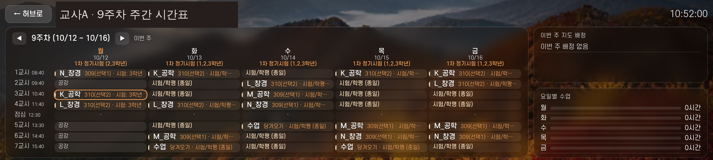
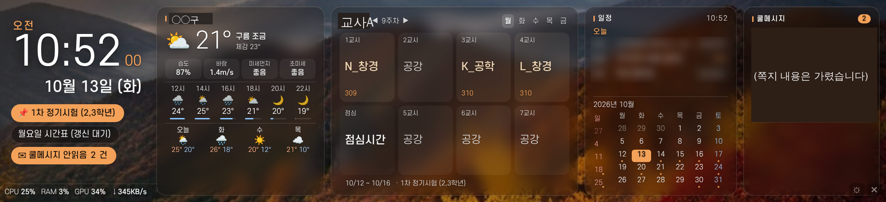
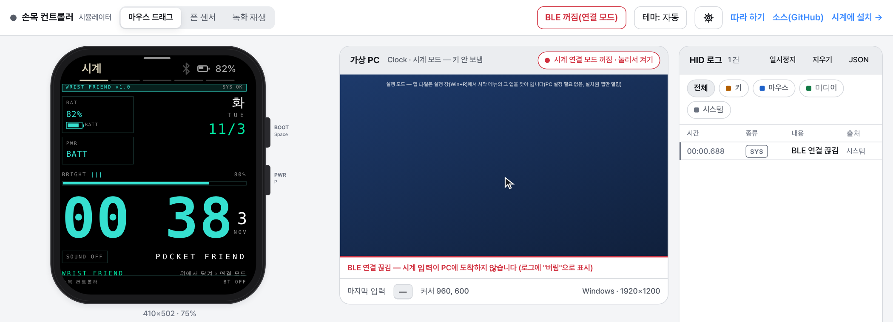

코딩을 몰라도 됩니다. 자료를 넣고, 이 책의 문장을 복사해 몇 단어만 바꾸면 됩니다. 문서 업무부터 시간표 앱, 성적처리 인정점 프로그램, 수업 자료 사이트와 캔바 연결, 점검·수정까지. 학교 업무를 중심으로 따라 하며 익힙니다.
폴더의 양식이랑 메모로 공개수업 가정통신문 만들어 줘.
양식을 읽었습니다. 날짜 하나가 메모에 없어 [ ]로 비워 두었어요. 가정통신문_공개수업.hwpx 로 저장했습니다.
고마워. 확인할 곳만 알려 줘.
2026년 11월EP 0 – EP 16 · 따라 하기용
30초 미리보기
이 책을 다 따라 하면 이런 일이 됩니다. 마음에 드는 것부터 펼쳐 보세요.
시작 전같은 클로드, 세 가지 쓰임문서는 Cowork, 앱은 클로드 코드
메뉴 지도헤매던 메뉴, 지도 한 장으로설정 › 사용자 지정 › 커넥터·플러그인, 환경설정 › 사용량
세팅캔바·한글·웹 올리기, 처음 한 번 연결MCP · 플러그인 · Git · Firebase
Pro한 달 요금으로 넉넉하게 쓰는 법새 대화로 나누기 · 가벼운 모델부터
EP 1메모가 가정통신문으로양식 .hwpx + 행사 메모 → 완성 .hwpx
EP 2엑셀 7개가 표 하나로반별 신청서 → 통합 + 확인필요 + 합계
EP 3공문 PDF가 할 일 표로PDF 2개 → 마감일 순 할 일 엑셀
EP 4상장 수십 장이 한 번에양식 + 명단 → 두 장 확인 → 전부
EP 5엉망인 다운로드 폴더가 한 번에 정리다운로드·음악 폴더 → 종류별 폴더 + 보고서
EP 6학사일정을 넣으면 이번 주 진짜 시간표기본 시간표 + 학사일정 → 주차별
EP 7축제로 빠질 수업, 미리 당겨 오기결손 시수 → 당겨오기 후보
EP 8학교 일정이 바뀌어도 자동으로일정 갱신 → 다시 계산 → 공유
EP 9성적 규정이 계산 규칙표로규정 PDF → 근거 달린 규칙표
EP 10결시생 인정점, 자동 계산붙여 넣기 → 계산 근거까지 표로
EP 11손으로 계산한 답과 프로그램 자동 비교정답표 8건 → 검산 통과
EP 12단원 자료가 수업 사이트로차시 계획·활동지 → 학생용 사이트
EP 13클로드가 캔바에서 슬라이드를캔바 연결 → 차시 슬라이드·포스터
EP 14말로 치수를 설명하면 3D 모델이OpenSCAD → STL → 3D 프린터
EP 15고치기 전에 문제 목록부터만든 앱 → 심각도별 점검표
EP 16 · 발표자 사례10일 만에 시계 앱, 이렇게 키웠습니다작게 만들고 회차별로
차례와 읽는 법
에피소드마다 첫머리 검은 상자가 "이런 일이 됩니다"입니다. 노란 띠는 그 일에 알맞은 도구(Cowork 또는 클로드 코드)입니다. 그 아래에 자세한 따라 하기가 이어집니다. 처음이면 도구 고르기·메뉴 지도 두 장을 읽고 EP 0으로 가세요. Pro 장은 사용량이 걱정될 때, 세팅 장은 각 EP의 '준비'가 가리킬 때 읽습니다. 급한 일이 있다면 그 EP만 보셔도 됩니다.
처음 오신 분은 이 순서로
① 도구 고르기(5분) → ② 메뉴 지도(5분) → ③ EP 0 시작하기 → ④ EP 3 공문 PDF → 할 일 표(약 3분, 설치 필요 없음) → ⑤ 세팅 장 3절(p. 14)에서 한글 플러그인을 설치한 뒤 EP 1 가정통신문. 세팅 장(캔바·한글·Git·Firebase)은 처음부터 다 할 필요 없이, 각 EP의 '준비'에 나올 때 돌아와서 하면 됩니다. Pro 장은 사용량이 걱정될 때 읽으세요.
시작 전
도구
채팅 · Cowork · 클로드 코드
무엇을 언제 쓰나, EP별 추천 도구
4
메뉴
메뉴 지도
메인 화면 네 곳, 설정 창, 사용량 읽는 법
8
세팅
처음 한 번 세팅
MCP란, 캔바 커넥터, 한글 플러그인, Git·GitHub, Firebase
14
Pro
Pro 요금제로 쓰는 법
사용량·토큰 관리, 여러 에이전트와 교차 검증
26
1부 · 문서 업무: 자료 던지고 맡기기 (Cowork 중심)
EP 0
Cowork · 클로드 코드 시작하기
작업 폴더, 첫 대화, 확인 질문, 프롬프트 다섯 칸
30
EP 1
가정통신문
한글 양식에 메모 내용 채우기
37
EP 2
엑셀 합치기
여러 파일 통합, 이상한 값 표시
41
EP 3
공문 → 할 일
PDF에서 내 일만 뽑아 마감일 순으로
44
EP 4
상장 대량 제작
먼저 두 장, 확인 후 전부
47
EP 5
PC 정리와 자동화
다운로드 폴더·음악 정리, PC 설정 스크립트
50
2·3·4부는 서로 독립입니다. EP 13은 EP 12에서 만든 차시 내용을 쓰고, EP 15는 EP 6~8 또는 EP 9~11의 앱 하나를 만든 뒤에 합니다.
2부 · 학교 일정 연동 시간표와 수업 당겨오기 (클로드 코드)
EP 6
학사일정 연동 시간표
기본 시간표 + 학사일정 → 주차별 진짜 시간표, 결손 시수
60
EP 7
수업 당겨오기
규칙표 → 후보 찾기 → 등록·되돌리기 → 충돌 검사
69
EP 8
학교 일정과 함께 쓰고, 다른 앱으로 넓히기
일정 갱신, 저장·불러오기, 공유와 입장 코드
78
3부 · 성적처리 인정점 프로그램 (Cowork → 클로드 코드)
EP 9
규정 → 계산 규칙표
코드보다 규칙표 먼저, 사람이 확정
86
EP 10
계산 프로그램
가짜 데이터로 만들고 실제 데이터는 내 PC에서
91
EP 11
검산이 핵심
손계산 정답표와 자동 비교, 경계 사례
97
4부 · 기술 수업: 사이트·캔바·3D 프린팅
EP 12
기술 교과서 자료로 사이트
차시별 페이지, 저작권, Firebase에 올리기
102
EP 13
캔바 연결(MCP)
클로드가 캔바에서 슬라이드·포스터 만들기
109
EP 14
3D 프린팅 모델링
말로 설계 → OpenSCAD → STL → 출력, 치수 고치기
114
5부 · 점검하고 고치기
EP 15
점검하고 고치기
문제 목록, 문제 알리기 양식, 되돌리기
120
EP 16
발표자 사례와 지킬 것
손목 컨트롤러 10일, 성적·개인정보 원칙
126
부록
30분 실습 · 한 장 요약
체크리스트, 자주 쓰는 말 10개
130
끝
이 자료는 이렇게 만들었습니다
요청과 제작 과정
133
이렇게 말하세요
복사해서 [대괄호]만 바꿔 보냅니다. [ ] 안은 내 상황으로 바꾸는 자리이고, [진짜시간표.html]처럼 파일 이름이 든 것은 내 파일 이름이 같으면 그대로 둡니다.
왜 이렇게 말하나요?
문장마다 들어간 이유를 풀어 줍니다.
화면에서 일어나는 일 (예시)
대화가 이렇게 흘러갑니다.
이럴 땐
자주 막히는 곳과 해결법입니다.
시작 전
같은 클로드, 세 가지 쓰임
넣는 것하고 싶은 일
→
나오는 것알맞은 도구
읽는 시간 약 5분
도구 고르기: 채팅, Cowork, 클로드 코드
클로드는 하나지만 쓰는 방법은 세 가지입니다. 도구를 잘못 고르면 할 수 있는 일을 어렵게 하거나, 필요 이상으로 복잡하게 하게 됩니다. 이 장은 "내 일에는 어느 도구가 맞나"를 1분 안에 정하는 방법을 알려 줍니다. 이 책의 모든 장 위쪽에 추천 도구가 적혀 있으니, 그 표시를 보고 시작하셔도 됩니다.
그림 같은 클로드, 세 가지 쓰임. 하고 싶은 일의 결과물로 고릅니다.
쉬운 비유로 보면
채팅 = 전화로 묻기: 궁금한 것을 말로 물으면 답을 말해 줍니다. 답을 받아 적는 것은 내 몫입니다.
Cowork = 내 책상 서랍(폴더)을 맡긴 유능한 행정 도우미: 서랍 하나를 열어 주면 그 안의 자료를 보고, 서류를 만들어 서랍에 넣어 둡니다. 서랍을 바꾸거나 비우기 전에는 "해도 될까요?" 하고 묻습니다.
클로드 코드 = 작업실에서 앱을 만들고 고치는 기술자: 서류가 아니라 '물건'(프로그램)을 만듭니다. 고장 나면 고치고, 고치다 망치면 어제 상태로 되돌리고(저장 지점), 제대로 되는지 검사합니다.
세 도구 모두 결과는 사람이 확인해야 합니다. 도우미든 기술자든 만든 것을 내가 한 번 보는 것이 원칙입니다.
세 도구 한눈에
구분
클로드 채팅
Claude Cowork(코워크)
Claude Code(클로드 코드)
어디서 여나
claude.ai 웹, 앱
Claude 데스크톱 앱 안의 기능
데스크톱 앱의 Code 메뉴, claude.ai/code(웹·휴대폰: GitHub 저장소로 일할 때. 내 PC 폴더는 못 엶), 터미널(명령을 글자로 쳐서 컴퓨터에 시키는 검은 창)
무엇을 맡기나
질문, 아이디어, 문장 다듬기
내가 고른 폴더를 맡기고, 여러 단계 업무를 스스로 진행하게 함
앱·프로그램·사이트를 만들고, 고치고, 검사함
결과물
화면의 글. 파일은 내가 복사·붙여 넣기
문서·엑셀·발표 자료 등 결과 파일이 폴더에 생김
계속 고쳐 쓸 프로그램 파일, 저장 지점(커밋), 자동 검사
잘 맞는 학교 업무
안내문 초안 문구, 말투 고치기, 짧은 궁금증
가정통신문, 엑셀 정리, 공문 요약, 상장 만들기
시간표 앱, 인정점 프로그램, 수업 사이트
알아야 할 것
가장 가볍지만 파일은 못 만지고 대화가 길면 복사가 번거로움
코딩·터미널·커밋을 몰라도 됨. 데스크톱 앱, 유료 요금제. 지원 환경은 공식 안내 확인(지원 운영체제·버전은 EP 0 준비의 확인 항목)
유료 요금제(Pro 이상). 허락 질문을 읽고 답해야 함. 메뉴 이름은 버전마다 다를 수 있음
고르는 순서
위에서부터 질문 세 개에 답해 보세요. 처음 "예"가 나온 곳이 내 도구입니다.
답이나 문장 몇 줄이면 되나요?
"이 문장 더 부드럽게", "이 용어가 무슨 뜻이지?" 같은 짧은 일입니다. 폴더도 파일도 필요 없습니다. 채팅으로 충분합니다.
결과가 한 번 쓰고 끝나는 문서인가요?
가정통신문, 엑셀 표, 공문 요약, 상장, 발표 자료처럼 파일이 나오는 일입니다. 자료 폴더를 맡기고 결과 파일을 받습니다. Cowork가 알맞습니다.
계속 고쳐 쓸 프로그램·앱·사이트인가요?
매 학기 다시 쓰고, 기능을 하나씩 더하고, 틀리면 고쳐야 하는 것입니다. 시간표 앱, 인정점 프로그램, 수업 사이트가 여기에 듭니다. 클로드 코드를 씁니다.
한 줄로 줄이면 이렇습니다. 결과가 문서면 Cowork, 결과가 계속 고쳐 쓸 프로그램·앱·사이트면 클로드 코드, 짧은 질문과 문장 다듬기는 채팅입니다.
같은 일, 다른 도구: 가정통신문 하나로 비교
'11월 현장체험학습 가정통신문'을 세 도구로 만들면 어떻게 다를까요.
도구
어떻게 진행되나
결과
아쉬운 점
채팅
일정·준비물 메모를 대화창에 붙여 넣고 초안을 받습니다.
화면의 글. 한글 파일에 복사해서 붙여 넣고 서식은 직접 맞춥니다.
파일이 안 생겨서 마지막 손질이 내 몫입니다.
Cowork
작년 안내문과 메모가 든 폴더를 맡기고 "올해 것으로 만들어 줘"라고 말합니다.
완성된 안내문 파일이 폴더에 생깁니다. 파일을 바꾸기 전에는 허락을 묻습니다.
가장 알맞습니다. 결과 파일은 내가 읽고 확인해야 합니다.
클로드 코드
같은 폴더를 열고 같은 부탁을 해도 됩니다. 이 책의 EP1~EP4는 클로드 코드로도 가능하다고 적어 두었습니다.
같은 파일이 만들어집니다.
문서 한 장에는 도구가 과합니다. 안내문 양식을 자동으로 찍어 내는 프로그램이 필요할 때 빛납니다.
이 책의 장별 추천 도구
장
하는 일
추천 도구
EP 0
시작하기
Cowork · 클로드 코드 시작법
EP 1
가정통신문
Cowork (클로드 코드로도 가능)
EP 2
엑셀 정리
Cowork (클로드 코드로도 가능)
EP 3
공문 처리
Cowork (클로드 코드로도 가능)
EP 4
상장 만들기
Cowork (클로드 코드로도 가능)
EP 5
폴더·음악 정리, PC 설정 스크립트
Cowork(정리) · 클로드 코드(스크립트)
EP 6~8
학사일정 연동 시간표·수업 당겨오기 앱 만들기
클로드 코드
EP 9
인정점 규칙표 → 프로그램
Cowork로 규칙표, 클로드 코드로 프로그램
EP 10~11
인정점 프로그램
클로드 코드
EP 12
기술 교과서 수업 사이트
클로드 코드
EP 13
캔바 연결
Cowork·채팅·클로드 코드 모두 (캔바 커넥터)
EP 14
3D 모델링(명패)
클로드 코드 (채팅도 가능)
EP 15
점검·고치기
클로드 코드
EP 16
발표자 사례·지킬 것
읽는 장 (도구 표기 없음)
이럴 땐
Cowork로 시작했는데 앱이 필요해졌어요
문서만 만들다가 "이걸 매번 쓰는 프로그램으로 만들고 싶다"가 되는 일은 흔합니다. 처음부터 다시 할 필요는 없습니다. 아래 세 단계로 옮기세요. (1) Cowork에게 "지금까지 한 일, 정해진 규칙, 남은 일을 요약해 줘"라고 부탁해 요약 파일을 같은 폴더에 둡니다. (2) 클로드 코드에서 같은 폴더를 엽니다. (3) 첫 말에 "이 폴더의 요약 파일을 먼저 읽고, 이어서 프로그램으로 만들 계획만 알려 줘"라고 하면 됩니다.
어느 도구인지 모르겠어요
가장 가벼운 채팅에서 시작해 보세요. 파일이 필요해지면 Cowork로, 프로그램이 필요해지면 클로드 코드로 올라가면 됩니다.
이미 한 도구로 많이 했는데 다른 도구가 더 맞아요
같은 폴더를 다른 도구에서 열어도 파일은 그대로입니다. 지금까지의 요약을 넘기면 이어서 일할 수 있습니다.
팁
처음 며칠은 같은 일을 채팅과 Cowork 두 곳에서 해 보세요. 결과가 어떻게 다른지 한 번 보면, 다음부터는 도구를 고민하지 않고 바로 고르게 됩니다.
결과가 문서면 Cowork, 계속 고쳐 쓸 프로그램이면 클로드 코드, 짧은 질문이면 채팅입니다.
시작 전 · 2
Claude 데스크톱 앱
처음엔 메뉴 찾기가 제일 어렵습니다
넣는 것"그 메뉴 어디 있지?"
→
나오는 것이 지도 한 장
읽기 5분
메뉴 지도: 어디에 무엇이 있나
발표자도 처음에는 메뉴를 찾느라 가장 많이 헤맸습니다. 이 장의 그림은 발표자 화면을 바탕으로 그린 개략도입니다(개인 정보는 넣지 않았습니다). 메뉴 이름은 2026년 11월 데스크톱 앱 기준이며 버전에 따라 다를 수 있습니다. 앱은 자주 바뀌므로 위치가 조금 달라도 메뉴 이름으로 찾으면 됩니다.
개략도 데스크톱 앱 Code 화면의 개략도. ① 모드 전환(왼쪽 위 아이콘 묶음: 채팅·Cowork·Code, 지금은 Code 선택) ② 왼쪽 아래 계정 메뉴 → 설정(Ctrl+,) ③ 입력창 아래 모델·권한 모드 ④ 오른쪽 패널: 작업 폴더, 컨텍스트, 커넥터, 결과물, 변경 사항.
메인 화면에서 꼭 알아 둘 네 곳
모드 전환 (왼쪽 위)
이 책에서 'Code 메뉴'라고 부르는 곳이 여기입니다. 아이콘에는 Code라는 글자 대신 ‹/› 모양만 보일 수 있습니다. 왼쪽 위 아이콘 묶음에서 채팅, Cowork, Code(클로드 코드)를 오갑니다. Cowork도 이 묶음에서 고릅니다(EP 0에서 '찾아 엽니다'라고 한 곳). 선택된 모드는 테두리로 표시됩니다. 문서 업무는 Cowork, 앱 만들기는 Code로 들어갑니다.
계정 메뉴 → 설정 (왼쪽 아래)
왼쪽 맨 아래 내 이름을 누르면 메뉴가 열리고, 맨 위에 설정이 있습니다. 단축키는 Ctrl+,(쉼표)입니다(Windows 앱 화면 기준). 언어, 도움 받기도 여기 있습니다.
입력창 아래 (가운데 아래)
메시지를 쓰는 칸 아래에 모델(예: Opus·Sonnet), 노력 정도, 권한 모드가 보입니다. 사용량을 아끼려면 여기서 모델을 바꿉니다. 모델 이름의 뜻은 아래 표를 보세요.
오른쪽 패널 (Code 화면)
지금 작업 중인 폴더·저장소(환경), 대화가 얼마나 찼는지(컨텍스트 %), 연결된 커넥터, 만든 결과물, 바뀐 파일(변경 사항)을 보여 줍니다. 결과 파일은 여기서 바로 열어 볼 수 있습니다.
모델
느낌
사용량
Haiku
가볍고 빠름
적게 씀
Sonnet
보통
보통
Opus
가장 강함
많이 씀
Fable
요금 안내에 나오는 모델 이름 중 하나
Pro에서는 사용 크레딧(요금제에 더해 따로 쓰는 양)으로 씀. 처음에는 쓰지 않아도 됩니다
초보는 기본 선택 그대로 쓰면 됩니다.
권한 모드는 바꾸지 마세요
이 책은 기본 모드(파일을 고치거나 명령을 실행하기 전에 허락을 묻는 모드) 기준입니다. '자동 수락' 계열로 바꾸면 이 책의 '계획만 받기', '허락 질문 읽기' 안전장치가 작동하지 않으니 바꾸지 마세요. 폴더 안 파일을 읽기만 할 때는 묻지 않고 진행할 수 있습니다. 지금 어느 모드인지는 입력창 아래 표시에서 봅니다. 실수로 바꿨다면 같은 자리에서 기본 모드 이름을 다시 고르면 됩니다.
Cowork의 권한 모드는 '직접 허락 / 자동 / 건너뛰기'이며, 이 책은 직접 허락 기준입니다. 영구 삭제는 어느 모드에서도 허락을 묻습니다.
자주 쓰는 단축키
단축키는 알아 두면 편하지만 몰라도 메뉴로 다 할 수 있습니다. 아래는 확인된 것만 모았습니다. 본문에서도 해당하는 곳에 노란 키 모양으로 표시했습니다.
키
하는 일
어디서
Ctrl+,
설정 열기
Claude 데스크톱 앱(Windows)
Enter
보내기
앱 입력창
Ctrl+Enter
대기열에 넣었다가 지금 일이 끝나면 보내기
앱 Code 입력창
Esc
클로드 멈추기(응답·작업 중단)
클로드 코드
Esc 두 번
입력 지우기 / 비어 있으면 되돌리기(/rewind) 메뉴
클로드 코드
Shift+Tab
권한 모드 바꾸기
클로드 코드
Shift+Enter
줄 바꾸기(보내지 않음)
클로드 코드
↑ / ↓
앞에 보낸 말 다시 불러오기
클로드 코드
Ctrl+C
하던 일 중단, 아무것도 안 하면 입력 지우기
클로드 코드(터미널)
Alt+V
복사한 그림(캡처) 붙여 넣기
클로드 코드(Windows)
Alt+P
모델 바꾸기
클로드 코드(Windows)
/ 맨 앞
명령 목록(/usage, /clear, /rewind 등)
클로드 코드
클로드 코드 단축키는 터미널판 공식 문서(code.claude.com, 2026년 11월) 기준이고, 앱 단축키는 발표자의 Windows 앱 화면 기준입니다. 맥은 Ctrl 대신 ⌘(Command)인 경우가 많습니다.
이 책에 나오는 화면 낱말
메뉴와 설정 창에서 자주 만나는 말입니다. 모르는 말이 나오면 이 표로 돌아오세요.
낱말
뜻
어디서 만나나
세션
대화 한 묶음. 새 세션은 새 대화를 여는 것입니다.
왼쪽 세션 목록
프롬프트
클로드에게 하는 말. 이 책의 '이렇게 말하세요' 상자가 그것입니다.
입력창
컨텍스트
클로드가 지금 대화에서 기억하는 양. 많이 찰수록 사용량이 늘어납니다.
Code 화면 오른쪽 패널(%)
커넥터
캔바 같은 다른 서비스와 이어 주는 연결 단자(MCP)입니다.
설정 › 사용자 지정 › 커넥터
플러그인·스킬
스킬은 일하는 방법 설명서, 플러그인은 스킬 등을 한 묶음으로 설치하는 것입니다.
설정 › 사용자 지정
토큰
클로드가 읽고 쓰는 글자 양의 단위. 사용량은 토큰으로 셉니다.
사용량 화면
개략도 설정 창 개략도(실제 메뉴 이름). ① 사용자 지정 › 커넥터 ② 내 항목/탐색 ③ + 추가 ④ Canva가 "개인별·✓"면 연결된 것.
설정 창 지도
설정 창 왼쪽 목록은 세 묶음으로 나뉩니다. 맨 위 검색 칸에 "커넥터", "사용량"처럼 이름을 치면 바로 찾아갑니다. 메뉴를 못 찾을 때 가장 빠른 방법입니다.
아래 경로는 모두 '왼쪽 아래 내 이름(계정) → 설정'에서 시작합니다. 영어 화면이면 Settings › Customize입니다.
하고 싶은 일
찾아갈 곳
이 책에서
캔바·구글 드라이브 같은 서비스 연결
왼쪽 아래 내 이름 → 설정 › 사용자 지정 › 커넥터 (내 항목 / 탐색, + 추가)
세팅 장, EP 13
한글 플러그인 같은 묶음 설치
왼쪽 아래 내 이름 → 설정 › 사용자 지정 › 플러그인
세팅 장
일하는 방법 설명서(스킬) 보기
왼쪽 아래 내 이름 → 설정 › 사용자 지정 › Skills
세팅 장
남은 사용량 확인
왼쪽 아래 내 이름 → 설정 › 환경설정 › 사용량
Pro 장
클로드 코드·Cowork 동작 바꾸기
왼쪽 아래 내 이름 → 설정 › 환경설정 › Claude Code / Cowork
EP 0
기억해 둘 내용 관리
왼쪽 아래 내 이름 → 설정 › 환경설정 › 메모리
필요할 때
내 컴퓨터 쪽 설정(확장 프로그램 등)
왼쪽 아래 내 이름 → 설정 › 이 컴퓨터 › 시스템 / 확장 프로그램 / 개발자
필요할 때
개략도 설정 › 사용량 개략도. ① 현재 세션(5시간마다 초기화) ② 주간 한도 ③ Fable 같은 모델별 막대. 팀 요금제 화면을 바탕으로 그린 개략도라, 요금제·앱 버전에 따라 항목이 다를 수 있습니다.
사용량 화면 읽는 법
설정 › 사용량에는 막대가 여러 개 있습니다. 가장 중요한 것은 현재 세션 막대입니다. 일정 시간마다 다시 채워지며, 옆에 "오후 ○시에 초기화"처럼 다시 채워지는 시각이 나옵니다.
Pro 요금제 기준으로 보면
사용량 한도의 종류와 화면 표시는 요금제·앱 버전마다 다릅니다. 설정 › 환경설정 › 사용량에서 내 화면을 직접 확인하세요.
그런데 화면에 '주간 한도' 칸이 안 보이는 선생님도 있습니다. 화면 구성은 요금제와 앱 버전에 따라 다릅니다(위 그림은 팀 요금제 화면을 바탕으로 했습니다). 주간 칸이 없으면 현재 세션 막대만 보면 됩니다. 주간 한도에 가까워지면 앱이 따로 알려 줍니다.
'Fable'(모델 이름) 같은 모델별 막대는 Pro에서는 대개 보이지 않거나 비어 있습니다. 요금 안내 기준으로 Pro에서 Fable은 사용 크레딧으로만 쓸 수 있습니다(2026년 11월 공식 안내 기준).
메뉴를 못 찾을 때
책과 메뉴 위치가 다름
설정 창 맨 위 검색에 메뉴 이름을 칩니다. 그래도 없으면 계정 메뉴의 도움 받기나 공식 도움말(support.claude.com)에서 이름으로 찾습니다.
설정 창이 어디서 열리는지 모르겠음
키보드에서 왼쪽 맨 아래 내 이름을 누르면 열리는 메뉴 맨 위에 설정이 있습니다. 키보드로는 Ctrl+,(쉼표)를 누릅니다.
커넥터를 연결했는데 대화에서 안 씀
커넥터 목록에서 상태가 ✓인지 보고, 새 대화를 열어 "캔바 커넥터로 ○○ 해 줘"처럼 이름을 넣어 말합니다.
위치는 바뀌어도 이름은 그대로입니다. 막히면 설정 창 검색부터.
시작 전 · 3
처음 한 번만
처음 한 번 연결하면 캔바·한글·웹 올리기까지
넣는 것연결·설치 몇 가지(처음 한 번)
→
나오는 것이 책의 모든 장을 따라 할 준비
약 30분 (한 번만)
세팅: 연결 단자(MCP)·캔바·한글·Git·Firebase
지금 다 하지 마세요. 처음이면 이 장을 건너뛰고 EP 0으로 가세요. 각 EP의 '준비'에서 필요한 절로 돌아옵니다. 이 장은 책 뒤쪽에서 쓸 '연결'을 미리 한 번에 해 두는 장입니다. 캔바로 디자인을 만들고, 한글 문서를 고치고, 만든 웹을 인터넷에 올리려면 클로드가 다른 도구와 이어져 있어야 합니다. 모두 처음 한 번만 하면 됩니다. 아래 표에서 "내가 하려는 장"에 필요한 것만 골라 하세요. 설치는 클로드 코드에게 맡길 수 있게 절마다 프롬프트를 붙였습니다.
그림 MCP는 클로드에 다른 도구를 꽂는 플러그입니다. 커넥터와 플러그인이 이 방식으로 연결됩니다.
먼저 알아 두세요
이 장의 메뉴·화면 이름은 2026년 11월 기준이며 버전에 따라 다를 수 있습니다. 이 장의 화면 설명은 모두 "예시"입니다. 내 화면과 다르면 같은 뜻의 이름을 찾으세요. 설치 명령도 바뀔 수 있습니다.
무엇을 언제 하나 — 먼저 보기
무엇
어디서
필요한 때
Claude 계정
claude.ai 가입 → Pro 이상 요금제 → 데스크톱 앱 로그인 (EP 0 준비 참고)
이 책 전체
Claude 데스크톱 앱
claude.ai에 로그인하면 보이는 데스크톱 앱 내려받기 안내를 따릅니다
Cowork·Code를 쓸 때
캔바 커넥터
왼쪽 아래 내 이름 → 설정 › 사용자 지정 › 커넥터(메뉴 지도 표와 같음), 클로드 코드는 claude mcp add
EP 13
한글 플러그인 + uv
클로드 코드(claude plugin install), uv는 winget
EP 1 · EP 4 · EP 9
Git for Windows
Git 공식 사이트(git‑scm.com)의 Windows 내려받기
클로드 코드 (EP 6·10)
GitHub 계정
github.com (저장소는 github.com에서 직접 만들기)
백업·클라우드 코드
GitHub CLI(gh)
(선택) 클로드가 저장소를 직접 만들게 하고 싶을 때만. 없어도 github.com에서 직접 만들면 됩니다
선택
웹 올리기 도구
Node.js(nodejs.org의 LTS) 설치 후 npm install -g firebase-tools
EP 8 · EP 12
OpenSCAD
공식 사이트에서 내려받기
EP 14
1. MCP가 무엇인가요: 클로드에게 끼우는 연결 단자
MCP는 Model Context Protocol의 줄임말입니다. AI와 다른 도구를 잇는 공개 표준(누구나 쓸 수 있게 공개된 약속)입니다. 쉽게 비유하면 클로드에게 끼우는 연결 단자(플러그)입니다. 멀티탭에 캔바 플러그, 한글 플러그를 꽂으면 클로드가 그 도구를 직접 다룰 수 있게 됩니다. 말은 어렵지만 선생님이 알아야 할 것은 아래 두 낱말뿐입니다.
낱말
뜻
어디서 쓰나
커넥터
MCP로 만든 연결. 예: 캔바 연결
Claude 앱, 데스크톱, 클로드 코드
플러그인
스킬(일하는 방법 설명서)과 MCP 서버 등을 한 묶음으로 설치하는 것. 예: 한글 플러그인
클로드 코드, Cowork 등 (환경에 따라 다름)
믿을 수 있는 것만 연결하세요
커넥터와 플러그인은 내 계정과 내 파일에 접근할 수 있습니다. 누가 만들었는지 확인하고, 연결할 때 나오는 권한 안내를 읽은 뒤 허락하세요. 모르는 사람이 올린 것을 무심코 설치하지 않습니다. 이 장에서 쓰는 것은 모두 공식 안내나 공개 저장소로 확인한 것입니다.
이렇게 말하세요 · 클로드 코드
지금 내 클로드 코드에 연결된 커넥터와 플러그인이 무엇인지 알려 줘.
- 이름 / 무엇을 하는 것인지 / 내 계정이나 파일에 접근하는지를 표로.
- 모르는 것은 추측하지 말고 '확인 못 함'이라고 써.
- 아무것도 설치하거나 지우지 말고, 보여 주기만 해.
터미널이란·여는 법
개략도 터미널(검은 명령 창) 여는 법과 명령 붙여 넣는 법. 학교 PC는 설치가 막혀 있을 수 있습니다.
터미널은 명령을 글자로 쳐서 컴퓨터에 시키는 검은 창입니다. Windows에서는 시작 메뉴를 열고 '터미널' 또는 'PowerShell'을 검색해 엽니다. 맥은 Launchpad나 Spotlight(⌘+Space)에서 '터미널'을 검색해 엽니다. 명령 한 줄을 붙여 넣고 Enter를 누릅니다. 책에 $나 > 표시가 붙어 있으면 그 표시는 치지 않습니다. 어렵게 느껴지면 각 절의 '이렇게 말하세요' 프롬프트로 클로드 코드에게 대신 시키세요. 이 책의 설치는 모두 그렇게 할 수 있습니다(브라우저 로그인 단계만 직접 합니다). 'claude' 명령을 찾을 수 없다고 나오면, 터미널 대신 클로드 코드 대화창에서 /plugin을 치거나 각 절의 프롬프트로 시키세요.
2. 캔바 연결하기 (EP 13에서 씁니다)
개략도 설정 › 사용자 지정 › 커넥터. 탐색에서 Canva를 찾아 연결하고 캔바에 로그인하면 내 항목에 "개인별 ✓"로 보입니다.
캔바 커넥터를 연결하면 클로드가 내 캔바 디자인을 찾고, 새로 만들고, 내용을 자동으로 채우고, 내보낼 수 있습니다. 캔바 로그인이 필요합니다. 자세한 활용은 EP 13에서 다룹니다.
Claude 앱(웹·데스크톱, Cowork 포함)에서 연결
왼쪽 아래 내 이름 → 설정 › 사용자 지정(Customize)을 열고 커넥터(Connectors)에서 Canva를 찾아 연결합니다. 2026년 11월 공식 도움말 기준입니다.
화면(예시): 커넥터 목록에서 Canva를 고르면 캔바 로그인 창이 열리고, 클로드가 무엇을 할 수 있게 되는지 권한 안내가 나옵니다.
왜: 클로드가 내 캔바 계정에 들어가도 되는지 내가 직접 허락하는 단계입니다. 권한을 읽고 허락하세요.
안 되면: 목록에 안 보이면 앱을 최신으로 업데이트하고 다시 열어 보세요. 그래도 안 보이면 학교(조직) 관리자가 막아 둔 것일 수 있습니다.
클로드 코드(터미널)에서 연결
터미널에서 아래 한 줄을 실행합니다. 서버 주소는 캔바 커넥터 페이지에 적힌 주소입니다.
터미널에 붙여 넣고 Enter
claude mcp add --scope user --transport http canva https://mcp.canva.com/mcp
뜻: --scope user는 이 컴퓨터의 모든 작업 폴더에서 캔바를 쓰게 하는 옵션입니다. 다른 폴더에서 캔바가 안 보이면 --scope user까지 그대로 다시 실행하세요.
화면(예시): 명령이 끝나면 canva가 추가되었다는 글이 나옵니다. 첫 사용 때 안내에 따라 캔바에 로그인합니다.
왜: 클로드 코드는 앱 메뉴가 아니라 명령으로 연결을 추가합니다. 명령을 직접 외우지 않아도 되니 아래 프롬프트로 맡기세요.
안 되면: 학교망(방화벽)에서 막혀 연결이 안 될 수 있습니다. 집이나 휴대폰 연결로 시험해 보고, 학교에서만 안 되면 정보부장 선생님께 문의하세요.
이렇게 말하세요 · 클로드 코드
캔바 커넥터를 내 클로드 코드에 연결해 줘.
- 서버 주소는 https://mcp.canva.com/mcp 이고, 방식은 http야. 모든 작업 폴더에서 쓰도록 --scope user로 추가해.
- 실행할 명령을 먼저 보여 주고, 내가 허락하면 실행해.
- 끝나면 연결이 잘 됐는지 확인하는 방법과, 캔바 로그인은 어떻게 하는지 알려 줘.
- 안 되면 이유를 쉬운 말로 설명해 줘. 학교망 문제일 수도 있어.
캔바 연결 확인
설정 › 사용자 지정 › 커넥터 목록에서 Canva가 '내 항목'에 보이는가(앱에서 연결한 경우)
클로드 코드에서는 "캔바가 연결됐는지 확인만 해 줘"라고 물었을 때 canva가 나오는가
EP 13에서 캔바를 쓸 계획인가(쓰지 않는다면 이 절은 건너뛰어도 됩니다)
그림 한글 플러그인 설치 순서(보기용 그림). 실제로 복사할 때는 본문의 명령 상자를 쓰세요. 클로드 코드 대화창에 이 명령을 실행해 달라고 맡겨도 됩니다. 캔바 연결 명령은 캔바 절에 따로 있습니다.
3. 한글(HWPX) 플러그인 설치하기 (EP 1·EP 4·EP 9에서 씁니다)
hwpx-plugin은 한글 문서(.hwpx, 일부 .hwp)를 편집·추출·자동화하는 오픈소스 플러그인입니다(python-hwpx 프로젝트, GitHub의 airmang/hwpx-plugins, Apache-2.0 라이선스). 가정통신문·공문 작성, 서식 변경, 표 계산, 메일머지(상장 대량 만들기) 같은 일에 씁니다.
먼저 uv를 설치합니다
플러그인의 MCP 서버가 돌아가려면 uv(파이썬 도구를 내려받아 실행해 주는 프로그램)가 필요합니다. Windows에서는 아래 명령입니다. 맥은 클로드에게 '맥용 uv 설치 명령을 알려 줘'라고 물어 그 명령을 쓰세요.
터미널에 붙여 넣고 Enter
winget install --id=astral-sh.uv -e
화면(예시): 내려받기와 설치 진행 글이 지나가고 끝납니다.
왜: uv가 없으면 플러그인을 설치해도 한글 기능이 켜지지 않습니다.
안 되면: 터미널을 껐다 다시 켜서 시도하세요. 그래도 안 되면 아래 프롬프트로 클로드에게 원인을 물어보세요. 학교 PC에 winget이 없거나 막혀 있으면 클로드에게 'uv를 winget 없이 설치하는 방법을 알려 줘'라고 묻고, 설치 제한은 정보 담당과 상의하세요.
터미널에 치는 명령(두 줄)
두 줄을 한 줄씩 차례로 붙여 넣고, 줄마다 Enter를 누릅니다.
터미널에 한 줄씩 붙여 넣고 Enter
claude plugin marketplace add airmang/hwpx-plugins
claude plugin install hwpx-plugin@hwpx
왜: 첫 줄은 설치 목록(마켓플레이스)을 등록하고, 둘째 줄은 그 목록에서 플러그인을 설치합니다.
클로드 코드 대화창에서 하는 방법(/plugin)
입력창에 /plugin을 글자 그대로 치고 Enter를 누른 뒤, 목록에서 hwpx를 고릅니다.
새 세션을 시작합니다
설치하거나 다시 설치한 뒤에는 새 세션(새 대화)을 시작해야 플러그인이 불러와집니다. 이미 열어 둔 대화에서는 안 보입니다.
화면(예시): 새 대화에서 "한글 파일 편집 기능이 있어?"라고 물으면 한글 문서 도구를 쓸 수 있다고 답합니다.
안 되면: 첫 실행은 파이썬과 패키지를 내려받느라 오래 걸릴 수 있습니다. 중간에 멈춰도 다시 시작하면 이어서 설치됩니다. 충분히 기다려 보세요.
Cowork에서는
Cowork에서도 한글 플러그인을 쓸 수 있습니다. 왼쪽 아래 내 이름 → 설정 › 사용자 지정 › 플러그인(메뉴 지도 표와 같음)에서 넣습니다. 안 보이면 설정 화면 맨 위 검색 칸에 '플러그인'을 쳐 보세요. 한글 플러그인은 uv로 내 PC에서 도는 방식이라 데스크톱 앱에서만 됩니다. 웹 claude.ai·휴대폰 앱에서는 동작하지 않습니다. uv 설치는 그대로 필요합니다. 조직에서 배포한 플러그인이 있으면 그것을 씁니다. 그래도 안 되면 EP 1을 클로드 코드에서 해도 됩니다(설치 명령은 위와 같음).
한글 플러그인을 쓰기 전에 지킬 것
외부 개발자가 만든 오픈소스이므로 학교의 소프트웨어 정책을 먼저 확인하세요. 시험은 가짜 자료로 하고, 실제 학생 개인정보가 든 문서로 시험하지 마세요. 원본은 따로 백업해 두세요. 플러그인에 자동 백업 설정이 켜져 있지만 원본 보관은 내 몫입니다. 한글 파일은 .hwpx로 저장해 넣으면 다루기 쉽습니다(.hwp 옛 형식은 어렵습니다).
이렇게 말하세요 · 클로드 코드
한글 플러그인(hwpx-plugin)을 설치해 줘.
- 먼저 uv가 설치되어 있는지 확인하고, 없으면 내 운영체제에 맞는 설치 명령(Windows는 winget)을 보여 줘.
- 그다음 airmang/hwpx-plugins 마켓플레이스를 추가하고 hwpx-plugin@hwpx를 설치해.
- 명령은 하나씩 보여 주고, 내가 허락하면 실행해.
- 끝나면 '새 세션을 시작해야 한다'는 말과, 새 세션에서 잘 되는지 확인하는 방법을 알려 줘.
- 내 실제 문서는 열지 마. 확인은 가짜 문서로만 해.
설치 확인
클로드 코드를 새로 시작한 뒤 "한글 플러그인을 쓸 수 있니?"라고 물어 봅니다.
쓸 수 있다고 하면, 연습용 .hwpx 파일 하나로 "제목만 읽어 줘"를 시켜 봅니다.
그림 저장 지점이 있으면 망가져도 잘 되던 때로 돌아갈 수 있습니다.
4. Git과 GitHub (저장·되돌리기·백업)
Git은 파일의 '저장 지점(커밋)'을 남기는 도구입니다. 게임의 세이브처럼 생각하세요. 고치다 망쳐도 잘 되던 저장 지점으로 되돌릴 수 있습니다. GitHub는 Git으로 만든 저장소를 인터넷에 보관·공유하는 곳입니다. 비공개 저장소도 만들 수 있습니다. 단, 학생 정보와 성적 자료는 비공개 저장소라도 올리지 않습니다.
Windows에서는 Git for Windows를 설치합니다
클로드 코드는 Windows에서 Git for Windows 설치를 권장합니다. 내려받는 곳은 Git 공식 사이트의 Windows 내려받기 쪽(git‑scm.com/downloads/win)입니다. 설치 화면에서 특별히 바꿀 것 없이 기본 선택으로 진행해도 됩니다. EP 6·10의 '저장 지점(커밋)' 단계에 필요합니다. 앱을 만들 장이면 미리 설치하세요.
왜: 클로드 코드가 저장 지점을 남기려면 컴퓨터에 Git이 있어야 합니다.
안 되면: 설치 후 터미널이나 앱을 완전히 껐다 켜세요.
GitHub 계정을 만들고 로그인합니다
github.com에서 계정을 만들고, 저장소도 github.com에서 '비공개(Private)'로 직접 만든 뒤 그 주소를 클로드에게 알려 줍니다. 처음 올릴 때 브라우저 로그인 창이 뜨면 GitHub 계정으로 로그인합니다. 프롬프트 예: '내 GitHub 저장소 [주소]에 지금 폴더를 올려 줘. 비공개인지 먼저 확인해 줘.'
화면(예시): 브라우저가 열려 GitHub 로그인과 허락 여부를 묻습니다.
왜: 내 PC가 고장 나도 작업이 남도록 인터넷에 한 벌을 둡니다(백업).
명령은 외우지 않고 말로 합니다
git 명령을 외울 필요가 없습니다. 클로드에게 이렇게 말하면 됩니다. "여기까지 저장해 줘"(커밋). "GitHub 비공개 저장소에 올려 줘"(푸시). "어제 잘 되던 때로 되돌려 줘".
이렇게 말하세요 · 클로드 코드
이 폴더를 저장 지점(커밋)을 남기는 Git 저장소로 만들고, 처음 상태를 '처음 상태'라는 이름으로 저장해 줘.
- Git이 컴퓨터에 설치되어 있는지 먼저 확인하고, 없으면 설치 방법을 알려 줘(Windows는 Git for Windows).
- GitHub에 올리는 일은 아직 하지 마. 내가 '올려 줘'라고 하면 비공개 저장소로만 올려.
- 학생 이름·성적·연락처가 든 파일이 있으면 저장 전에 먼저 알려 줘. 그 파일은 올리지 않게 제외하는 방법도 알려 줘.
- 하는 일을 한 줄씩 쉬운 말로 설명해 줘.
5. Firebase Hosting과 Node.js (웹 올리기: EP 8·EP 12에서 씁니다)
그림 웹을 Firebase에 올리는 흐름. 올린 주소는 누구나 열 수 있습니다.
Firebase는 구글의 앱 개발 서비스입니다. 그중 Firebase Hosting은 HTML·CSS·JS 같은 웹 파일을 올려 인터넷 주소(예: 프로젝트이름.web.app)로 열어 주는 서비스입니다. 이 책에서는 만든 웹(수업 사이트, 앱)을 Firebase에 올립니다. 올리면 주소가 생기고 주소를 아는 사람은 누구나 열 수 있습니다. 검색에 안 나오게 하는 noindex 설정은 '비공개'가 아닙니다. 교사 이름이 든 앱은 학교가 허용한 경우에만, 입장 코드를 걸고 올립니다(EP 8). 학생 성적·연락처는 입장 코드가 있어도, 어떤 경우에도 올리지 않습니다. 무료 범위 안인지는 Firebase 요금 안내에서 직접 확인하세요.
구글 계정과 Firebase 프로젝트를 만듭니다
구글 계정으로 Firebase 콘솔(Firebase 웹 관리 화면)에 들어가 프로젝트를 만듭니다. 주소는 프로젝트 ID(만들 때 이름 아래에 표시되는 고유 이름)로 정해집니다. 이름이 겹치면 ID에 글자가 더 붙습니다.
왜: 올릴 '집 주소'를 먼저 받는 단계입니다.
Node.js를 설치하고 firebase-tools를 설치합니다
Node.js(웹 도구를 돌리는 프로그램)는 nodejs.org에서 LTS(오래 지원되는 안정판)를 내려받아 설치합니다. 그다음 아래 명령을 실행합니다.
터미널에 붙여 넣고 Enter
npm install -g firebase-tools
안 되면: Node.js 설치 후 터미널을 껐다 켜야 npm이 인식됩니다. '이 시스템에서 스크립트를 실행할 수 없으므로 … 파일을 로드할 수 없습니다'가 뜨면 PowerShell의 실행 정책 때문입니다. 명령 프롬프트(cmd)에서 같은 명령을 시도하거나, 빨간 메시지를 그대로 클로드에게 보내 방법을 묻습니다. 학교 PC의 정책 변경은 정보 담당과 먼저 상의하세요.
로그인합니다
아래 명령을 실행하면 브라우저가 열려 구글 로그인을 합니다. 이런 브라우저 단계는 내 컴퓨터(데스크톱 앱의 Code 또는 터미널)에서 하는 것이 쉽습니다. 이 명령은 선생님이 터미널에서 직접 칩니다. 클로드에게 시키면 브라우저 로그인을 대신할 수 없습니다.
터미널에 붙여 넣고 Enter
firebase login
올릴 폴더를 정합니다
두 가지 방법이 있습니다. ① 터미널에서 firebase init hosting을 직접 치고 화면의 질문에 답합니다(아래 안내). ② 클로드 코드에게 설정 파일을 직접 만들게 합니다(화살표로 답하는 질문이 없어 초보에게 더 쉽습니다).
화면(예시): 어느 프로젝트를 쓸지, 올릴 폴더 이름이 무엇인지 차례로 묻습니다.
올립니다
아래 명령을 실행하면 올라가고 주소가 나옵니다. 그 주소를 열어 확인하세요.
터미널에 붙여 넣고 Enter
firebase deploy --only hosting
왜: 올리기 전에 내 PC에서 먼저 열어 확인하고, 올려도 되는 파일만 들어 있는지 봅니다.
init이 묻는 것(예시. 질문 순서·문구는 버전에 따라 다릅니다): 어느 프로젝트를 쓸지, 올릴 폴더(public directory), single-page app 여부, GitHub 자동 배포 여부, index.html 덮어쓰기 여부. 화면의 질문이 책과 다르면 질문 문구를 그대로 클로드에게 보여 주고 어떻게 답할지 물어보세요. 올릴 폴더만은 반드시 public처럼 올릴 것만 든 폴더로 답합니다(아래 상자).
올릴 폴더에 주의
올릴 폴더에 .(작업 폴더 전체)를 답하면 원본 한글·엑셀까지 공개됩니다. 반드시 public처럼 올릴 것만 든 폴더로 하세요.
프로젝트 ID는 Firebase 콘솔에서 프로젝트를 열면 이름 아래(또는 프로젝트 설정)에 보이는 영문 고유 이름입니다.
발표자 사례
발표자는 기술·가정 배움터 사이트를 firebase deploy --only hosting으로 올립니다. 올리기 전에 허용한 파일 종류만 통과시키는 검사를 두었고, 첫 페이지에는 noindex를 넣었습니다.
이렇게 말하세요 · 클로드 코드
이 폴더의 웹 사이트를 Firebase Hosting에 올릴 준비를 도와줘.
- Node.js와 firebase-tools가 설치되어 있는지 먼저 확인하고, 없으면 설치 방법을 알려 줘.
- firebase login은 내가 터미널에서 직접 할게. 끝났는지 확인하는 방법을 알려 줘.
- firebase init 대신, 올릴 폴더를 public으로 하는 firebase.json과 내 프로젝트 ID [프로젝트ID]를 적은 .firebaserc를 직접 만들어 줘. 어떤 내용인지 보여 주고 설명해 줘.
- 올리기 전에 폴더 안에 학생 이름·성적·교사 개인정보 같은 파일이 없는지 먼저 확인하고 결과를 알려 줘.
- 내가 '올려 줘'라고 할 때만 firebase deploy --only hosting을 실행해.
- 올린 뒤 나온 주소를 알려 주고, 주소를 아는 사람은 누구나 열 수 있다는 점도 다시 한 번 말해 줘.
왜 이렇게 말하나요?
"올리기 전에 ... 파일이 없는지 먼저 확인"
한 번 올라간 주소는 누구나 열 수 있습니다. 올리기 전 확인이 가장 안전합니다.
"내가 '올려 줘'라고 할 때만"
인터넷에 공개되는 일은 사람이 마지막에 결정합니다.
올리기 전 확인
올릴 폴더에 학생 이름·성적·연락처가 든 파일이 없나요?
교사 이름이 든 앱이면 학교가 허용했고 입장 코드를 걸었나요?
올린 뒤 휴대폰으로 주소를 열어 화면이 제대로 나오나요?
6. 세팅 체크리스트 (다시 보기)
어디서 하는지는 장 첫머리 표를 보세요. 하려는 장에 필요한 것만 하면 됩니다. 처음에는 Claude 데스크톱 앱 하나만 있어도 시작할 수 있습니다.
☐ Claude 계정·Pro 이상 요금제·데스크톱 앱 로그인 (이 책 전체)
☐ 캔바 커넥터 (EP 13)
☐ 한글 플러그인 + uv (EP 1·4·9)
☐ Git for Windows (EP 6·10 저장 지점)
☐ GitHub 계정 (백업)
☐ (선택) GitHub CLI
☐ Node.js + firebase-tools (EP 8·12)
☐ OpenSCAD (EP 14)
☐ 설치 뒤 새 세션으로 확인
이럴 땐
설치 명령 중간에 막혔어요
화면의 오류 글을 그대로 클로드에게 붙여 넣고 "무슨 뜻인지, 어떻게 고치는지 쉬운 말로 알려 줘"라고 하세요. 허락 질문은 읽고 답하세요.
설치했는데 안 보여요
터미널(또는 앱)을 완전히 끄고 새로 열어 보세요. 플러그인은 새 세션을 시작해야 합니다.
학교 컴퓨터에서만 안 돼요
설치 권한이나 학교망(방화벽) 때문일 수 있습니다. 집 컴퓨터로 먼저 해 보고, 학교는 정보부장 선생님께 문의하세요.
한 번에 다 하지 말고, 하려는 장에 필요한 연결만 처음 한 번 해 두세요. 믿을 수 있는 것만 연결하고, 올리기 전에는 꼭 확인합니다.
시작 전 · 4
Pro 요금제 기준
한 달 요금으로 오래, 넉넉하게 쓰는 법
넣는 것쓰는 습관 몇 가지
→
나오는 것사용량 걱정 없는 하루
읽기 5분
Pro 요금제로 쓰는 법: 사용량·토큰 관리·교차 검증
대부분의 선생님은 Pro 요금제로 시작합니다. Pro에는 채팅, Cowork, 클로드 코드가 모두 들어 있습니다. 다만 쓸 수 있는 양(사용량)에 한도가 있어서, 같은 요금으로도 쓰는 습관에 따라 하루에 할 수 있는 일이 크게 달라집니다. 이 장의 내용은 Anthropic 공식 도움말과 요금 안내 기준입니다(2026년 11월, 바뀔 수 있음).
그림 채팅·Cowork·클로드 코드가 같은 사용량을 나눠 씁니다. 그림의 비율은 예시입니다.
먼저 알아 둘 사실: 요금과 한도
내용
쉽게 말하면
클로드 코드와 Cowork는 Pro를 포함한 유료 요금제에 들어 있습니다.
따로 결제하지 않아도 됩니다.
채팅·데스크톱 앱·클로드 코드가 같은 사용량을 나눠 씁니다.
오전에 클로드 코드로 앱을 오래 만들면 오후 채팅에 쓸 양이 줄어듭니다.
사용량에는 한도가 있고, 일정 시간이 지나면 다시 채워집니다. 한도의 종류와 다시 채워지는 시각은 요금제·앱 버전에 따라 다르니 설정 › 환경설정 › 사용량에서 내 화면을 직접 확인하세요.
한도에 닿으면 안내된 시각까지 쉬었다 쓰면 됩니다. 한 주에 몰아 쓰면 막힐 수 있습니다.
사용량을 쓰는 방식과 확인하는 곳
내용
쉽게 말하면
Cowork처럼 여러 단계를 스스로 하는 일은 짧은 질문보다 사용량을 더 씁니다.
단계마다 토큰(클로드가 읽고 쓰는 글자 양의 단위)이 듭니다.
모델을 고르는 칸이 보이면 처음에는 기본으로 선택된 모델을 그대로 쓰면 됩니다. 모델 이름의 뜻은 메뉴 지도 장의 표를 보세요.
큰 모델일수록 똑똑하지만 사용량을 빨리 씁니다.
지금까지 쓴 양은 왼쪽 아래 내 이름 → 설정 › 환경설정 › 사용량에서 볼 수 있습니다. 클로드 코드에서는 입력창에 /usage를 글자 그대로 치고 Enter를 누르면 됩니다.
'현재 세션' 막대만 보면 충분합니다. 화면 구성은 요금제마다 다릅니다(메뉴 지도 장 참고).
개략도 설정 › 사용량 개략도(팀 요금제 화면을 바탕으로 그림). ① 현재 세션 막대가 가장 중요합니다 ② 주간 한도 ③ 모델별 막대. 화면 표시는 요금제·앱 버전마다 다릅니다. Fable은 Claude 모델 이름 중 하나입니다. 요금 안내 기준으로 Pro에서는 사용 크레딧으로 씁니다(2026년 11월 기준). 성능 차이는 이 책에서 다루지 않으며, Pro 화면에는 이 막대가 없을 수 있습니다.
사용량을 아끼는 습관 일곱 가지
시작 전에 무엇을 할지 정합니다
공식 도움말의 첫 권장도 "대화를 계획하라"입니다. 이 책의 '다섯 칸 공식'으로 한 번에 정확히 말하면 다시 시키는 횟수가 줄어듭니다. 다시 시킬 때마다 사용량이 듭니다.
비슷한 일은 한 번에 묶습니다
"가정통신문 써 줘"와 "같은 내용으로 문자 안내도 써 줘"를 따로 보내지 말고 한 메시지에 담습니다. Cowork 안내도 관련 작업을 하나로 묶으라고 권합니다.
다른 일은 새 대화에서
대화가 길어질수록 클로드는 앞 내용을 계속 다시 읽어서 사용량이 늘어납니다. 가정통신문을 끝냈으면 시간표 앱은 새 대화로 시작합니다. 클로드 코드 입력창에 /clear를 글자 그대로 치고 Enter를 누르면 대화가 비워집니다. 이어서 해야 하면 "지금까지 한 일을 요약해 줘"를 받아 새 대화에 붙입니다.
파일은 콕 집어서
"폴더 전부 읽어 봐"보다 "[메모.txt]와 [양식.hwpx]만 읽어"가 훨씬 적게 씁니다. 작업 폴더에 필요 없는 큰 파일(동영상, 사진 수백 장)을 두지 마세요.
짧은 답이면 짧게 달라고
파일이 필요 없을 때는 "파일 만들지 말고 세 줄로만 답해 줘"라고 합니다. Cowork 공식 안내에도 있는 요령입니다.
일에 맞는 모델을 고릅니다
문서 정리·간단한 수정은 Sonnet이나 Haiku 같은 가벼운 모델로 충분합니다. 인정점 규칙처럼 틀리면 곤란한 판단이나 원인 모를 오류에만 Opus를 씁니다.
모델 바꾸기: 앱은 입력창 아래 모델 이름, 터미널은 /model 또는 Alt+P
자주 쓰는 자료는 프로젝트에
학교 양식·규정처럼 매번 쓰는 자료는 채팅의 '프로젝트'에 넣어 두면, 매번 붙여 넣지 않아도 되어 편하고, 사용량을 아끼는 데도 도움이 됩니다.
여러 에이전트(팀)와 교차 검증은 언제 쓰나
요약
평소에는 에이전트 하나. 틀리면 곤란한 사실만 두 번 확인. 팀은 사용량을 여러 배 씁니다.
클로드 코드는 일을 나눠 여러 '에이전트'(클로드 일꾼)에게 동시에 맡길 수 있습니다. 빠르고 서로 실수를 잡아 주지만, 에이전트마다 따로 토큰을 써서 사용량이 여러 배로 늡니다.
상황
권장
혼자서 충분한 일(가정통신문, 엑셀 정리, 작은 앱 수정)
에이전트 하나로 충분합니다. 팀을 쓰지 않습니다.
성적 규정 해석, 공문 마감일, 제품 요금·기능처럼 틀리면 곤란한 사실
교차 검증: 검증자 2명에게 같은 질문을 따로 맡기고 결과를 대조합니다. 3명 이상은 대개 낭비입니다.
단순 확인(저장소 기록, 숫자 맞추기)
가벼운 모델(Haiku) 에이전트 하나에 맡깁니다.
이렇게 말하세요 · 클로드 코드 (교차 검증)
[인정점 규정 해석] 중 중요한 사실만 교차 검증해 줘.
- 검증자 2명에게 같은 확인 목록을 따로 맡기고, 서로 결과를 보지 않게 해.
- 근거는 [규정 문서 / 공식 안내 페이지]에서만. 기억으로 답하지 말고, 못 찾으면 '확인불가'로.
- 토큰을 아끼게: 문서 전체가 아니라 확인 목록만 넘기고, 결과는 표(항목 / 확인·틀림·확인불가 / 근거 한 줄)로만.
- 두 결과가 다르면 그 항목만 따로 표시해 줘. 최종 판단은 내가 할게.
왜 이렇게 말하나요?
"서로 결과를 보지 않게"
한 검증자의 답을 다른 검증자가 따라가면 교차 검증의 의미가 없습니다.
"기억으로 답하지 말고"
근거 없는 '그럴듯한 답'을 막습니다. 못 찾은 것은 못 찾았다고 말하게 합니다.
"확인 목록만 넘기고, 표로만"
에이전트가 읽고 쓰는 양이 줄어 사용량을 크게 아낍니다.
"최종 판단은 내가"
두 검증자가 같은 답을 내도 틀릴 수 있습니다. 성적·규정은 사람이 정합니다.
이럴 땐
"사용량 한도에 도달" 안내가 뜸
안내된 시간까지 쉬거나, 급한 일은 짧은 채팅으로만 처리합니다. 다음부터는 새 대화로 나누고 모델을 한 단계 가볍게 바꿉니다.
작업 하나가 사용량을 너무 많이 씀
"지금 이 작업을 더 적게 쓰는 방법이 있어?"라고 물어보고, 작업을 작은 단계로 나눕니다.
Cowork·채팅 화면이 책과 다름
화면 구성은 앱 버전에 따라 바뀝니다. 메뉴 위치가 책과 다르면 기능 이름으로 찾거나 설정 검색 칸을 쓰세요.
오늘 사용량 점검
하루를 시작할 때 설정 › 환경설정 › 사용량을 한 번 열어 현재 세션 막대를 보세요. 많이 찼다면 큰 작업은 막대가 다시 채워진 뒤로 미루고, 짧은 질문부터 처리합니다.
계획하고, 묶고, 새 대화로 나누고, 가벼운 모델부터. 여러 에이전트는 중요한 사실의 교차 검증에만.
EP 0
Cowork · 클로드 코드 시작하기
말로 시키면 파일이 만들어집니다
넣는 것내 폴더 + 한국어 한 문단
→
나오는 것완성된 파일이 폴더에 생김
준비 약 10분
Cowork · 클로드 코드 시작하기
채팅 클로드는 답을 글로 알려 줍니다. Cowork(코워크)와 클로드 코드는 내가 맡긴 폴더 안에서 파일을 직접 만들고 고칩니다. 그래서 복사해서 붙여 넣는 수고 없이, 완성된 한글·엑셀 파일이 폴더에 생깁니다. 앞 편에서 세 도구를 고르는 법을 봤으니, 이 장에서는 두 도구를 각각 어떻게 시작하는지 차례로 익힙니다. 폴더 준비와 말하는 법은 두 도구가 똑같습니다.
개략도 ① 맡긴 폴더 안에 결과 파일이 생깁니다 ② 클로드가 하는 일을 단계별로 보여 줍니다.
한눈에 구분
구분
Cowork
클로드 코드
알맞은 일
문서 업무(통신문, 엑셀 정리, 공문 요약, 상장)
계속 고쳐 쓸 프로그램·앱·사이트
알아야 할 것
코딩·터미널·저장 지점(커밋) 몰라도 됨
저장 지점으로 되돌리기, 자동 검사 같은 개발 도구
여는 곳
Claude 데스크톱 앱
데스크톱 앱의 Code 메뉴, claude.ai/code(웹·휴대폰, GitHub 저장소용 — 내 PC 폴더는 못 엶), 터미널
기준은 한 줄입니다. 결과가 문서면 Cowork, 계속 고쳐 쓸 프로그램·앱·사이트면 클로드 코드, 짧은 질문이나 문장 다듬기는 채팅입니다. 두 도구 모두 유료 요금제(Pro 이상)가 필요합니다.
설치·로그인·요금제 확인(한 번만)
① Claude 데스크톱 앱을 설치하고 ② claude.ai 계정으로 로그인합니다. ③ 왼쪽 아래 내 이름 → 설정에서 내 요금제가 Pro 이상인지 봅니다. 무료 요금제면 Cowork·클로드 코드가 열리지 않습니다.
Cowork·클로드 코드가 안 보일 때 확인할 것:
① 데스크톱 앱인가(웹·휴대폰 앱에는 Cowork가 없음)
② 요금제가 Pro 이상인가
③ 앱이 최신 버전인가(설정에서 업데이트)
④ 그래도 안 되면 공식 도움말 'Cowork 시작하기'에서 내 운영체제가 지원되는지 봅니다.
메뉴 이름은 버전에 따라 다를 수 있습니다(이 책은 2026년 11월 데스크톱 앱 기준).
공통 준비: 작업 폴더 만들기
클로드는 내가 열어 준 폴더 안에서만 일합니다. 책상 하나를 내주는 것과 같습니다. 이 책에서는 이 폴더를 '작업 폴더'라고 부릅니다. 아래 네 단계는 Cowork와 클로드 코드 모두 같습니다.
바탕 화면에 큰 폴더 만들기
바탕 화면 빈 곳에서 마우스 오른쪽 버튼 → 새로 만들기 → 폴더 → 이름을 '클로드작업'으로 치고 Enter를 누릅니다. 탐색기(내 컴퓨터의 파일을 보는 창. 작업 표시줄의 노란 폴더 아이콘. 맥은 Finder)에서 이 폴더를 열 수 있습니다. 일을 맡길 공간을 한 곳에 정해 두면 어디에 무엇이 있는지 헷갈리지 않습니다.
일마다 하위 폴더 만들기
클로드작업 안에 일마다 폴더를 따로 만듭니다. 예: 가정통신문_11월, 방과후_신청_통합. 화면에는 클로드작업 아래에 폴더가 나란히 보입니다. 일이 섞이지 않고, 결과 파일도 그 폴더 안에 모여서 나중에 찾기 쉽습니다.
자료는 복사본으로 넣기
양식, 엑셀, PDF, 화면을 찍은 캡처 사진을 복사본으로 넣습니다. 원본 파일을 클릭 → Ctrl+C(복사) → 클로드작업 폴더를 열고 Ctrl+V(붙여넣기). 원본은 다른 곳에 그대로 둡니다. 클로드가 파일을 바꾸더라도 원본이 안전합니다.
학생 정보는 가명으로
명단처럼 학생 정보가 든 자료는 실명 대신 가명(학생01, 학생02)으로 바꾼 복사본을 넣습니다. 연락처·성적·건강 정보는 넣지 않습니다. 학교·교육청의 생성형 AI 사용 지침도 먼저 확인하세요. 예외(실명이 꼭 필요한 최종본)는 EP 4에서 다룹니다. 개인정보 원칙 전체는 EP 16 끝 '꼭 지킬 것' 일곱 가지에 모아 두었습니다. 이 책의 다른 장은 이 원칙을 한 줄로만 다시 적습니다.
폴더 이름 짓기
폴더 이름은 '일 이름_달'처럼 보기만 해도 무슨 일인지 알 수 있게 짓습니다. 한글 이름도 괜찮습니다. 이름에 학생 실명이나 학교 이름은 넣지 않습니다. 일이 끝나면 폴더째 다른 곳에 보관하거나 지웁니다.
자주 쓰는 키
키
하는 일
Ctrl+C
복사 (터미널판 클로드 코드 안에서는 '멈추기·입력 지우기'로 동작)
Ctrl+V
붙여넣기
Ctrl+A
전체 선택
F5
새로 고침
Enter
Claude 앱 입력창: 보내기
Ctrl+Enter
Claude 앱 Code 입력창: 대기열에 넣었다가 나중에 보내기
Ctrl+,
Claude 앱 설정 열기
Ctrl 키는 키보드 왼쪽 아래에 있습니다.
개략도 ① 한글에서 파일 형식을 HWPX로 골라 저장 ② 탐색기에서 확장명을 켜면 파일 이름 끝(.hwpx, .txt)이 보입니다.
파일 이름 뒤의 점 세 글자(확장자)
파일 이름 끝의 .hwpx(한글 문서), .xlsx(엑셀), .pdf, .txt(메모장 글), .md(글 파일), .html(인터넷 없이 크롬으로 여는 웹페이지 파일), .ps1(PC 설정 스크립트)은 파일의 종류를 뜻합니다. 저장할 때 '다른 이름으로 저장' 창 아래 '파일 형식' 칸에서 고릅니다. 확장자가 안 보이면 탐색기 상단 '보기' 메뉴에서 '파일 확장명'을 켭니다.
Cowork 시작하기
Cowork는 Claude 데스크톱 앱 안의 기능입니다. 폴더를 맡기면 여러 단계의 업무를 스스로 진행해 결과 파일을 그 폴더에 만들어 줍니다. 아래 화면 설명은 예시입니다.
데스크톱 앱에서 Cowork 열기
Claude 데스크톱 앱을 실행하고, 왼쪽 위 모드 아이콘 묶음(메뉴 지도 장 ①)에서 Cowork를 고릅니다. 안 보이면 앱을 최신으로 업데이트하고 EP 0 준비의 요금제·지원 환경을 확인하세요. 보이는 모습: 채팅과 비슷한 입력창이 있는 화면이 열립니다. 왜 앱인가: Cowork는 내 컴퓨터의 폴더를 다루기 때문에 웹 채팅 화면이 아니라 설치한 앱에서 씁니다.
작업 폴더 고르기
작업할 폴더를 고르라는 안내가 나오면 방금 만든 하위 폴더(예: 가정통신문_11월)를 고릅니다. 보이는 모습: 입력창 근처에 내가 고른 폴더 이름이 표시됩니다. 왜 하위 폴더인가: 클로드작업 전체를 맡기면 다른 일의 파일까지 보이기 때문에, 오늘 할 일의 폴더 하나만 맡깁니다. 잘 안 되면: 폴더를 잘못 골랐다면 올바른 폴더로 다시 고르세요.
할 일 맡기기
아래 '첫 대화' 프롬프트를 입력창에 붙여 넣어 보냅니다. 보이는 모습: 클로드가 해야 할 일을 단계로 나누어 말하며 시작합니다. 왜 안전한가: 첫 대화는 파일을 읽기만 하고 아무것도 바꾸지 않습니다.
진행 상황 보기
Cowork는 지금 무엇을 하는 중인지 화면에 보여 줍니다. 보이는 모습(예시): "폴더의 파일을 읽는 중", "표를 정리하는 중" 같은 진행 표시. 왜 보나: 엉뚱한 방향으로 가고 있으면 중간에 말을 걸어 바로잡을 수 있습니다. 잘 안 되면: 오래 멈춘 것 같으면 "지금 무엇을 하고 있어?"라고 물어보세요.
허락 질문에 답하기
Cowork도 파일을 바꾸거나 지우기 전에 허락을 묻고, 모호한 부분은 먼저 묻습니다. 보이는 모습(예시): "이 파일을 새로 만들어도 될까요?" 같은 질문. 읽고 답하세요. 무엇을 하려는지, 어느 파일인지, 되돌릴 수 있는지를 봅니다. 자세한 읽는 법은 아래 '허락 질문 읽는 법'에 있습니다. 허락 질문은 확인 장치이지 보장이 아닙니다. 지우거나 덮어쓰는 일 전에는 복사본이 있는지 먼저 봅니다.
결과 파일 열기
끝나면 클로드가 어떤 파일을 만들었는지 알려 줍니다. 결과 파일은 내가 맡긴 작업 폴더 안에 생깁니다. 탐색기에서 그 폴더를 열고 새 파일을 더블클릭해 한글·엑셀로 엽니다. 왜 직접 여나: 결과를 확인하는 것은 늘 사람의 몫입니다. 잘 안 되면: 파일이 안 보이면 "방금 만든 파일의 이름과 저장 위치를 알려 줘"라고 물어보세요.
클로드 코드 시작하기
클로드 코드는 내 폴더 안에서 파일을 만들고, 고치고, 실행합니다. 앱이나 사이트를 만들 때 특히 쓰입니다.
Claude 데스크톱 앱의 Code 메뉴: 내 컴퓨터의 폴더를 골라 바로 작업합니다. 앱·스크립트처럼 계속 고쳐 쓸 것을 만들 때 씁니다. 한글·엑셀 문서 일도 되지만 그 경우는 Cowork를 먼저 권합니다(도구 고르기 장).
claude.ai/code (웹·휴대폰 앱): 설치 없이 클라우드(인터넷 속 작업 공간)에서 작업합니다. GitHub(코드 보관 사이트) 저장소를 연결해 앱을 만들고 올릴 때 편합니다. 내 PC 폴더는 못 엽니다.
이 책의 EP 6~14는 내 PC 폴더를 쓰므로 데스크톱 앱의 Code 메뉴로 합니다.
Code 메뉴에서 폴더 열기
데스크톱 앱의 Code 메뉴에서 위에서 만든 하위 폴더를 고릅니다. 이제 이 폴더가 클로드의 작업실입니다. 잘 안 되면: 상위 폴더가 아니라 자료를 넣은 하위 폴더를 열었는지 확인하세요.
첫 말 걸기
아래 '첫 대화' 프롬프트(클로드에게 하는 말)를 입력창에 붙여 넣어 보냅니다. 파일을 바꾸지 않고 읽기만 하는 말입니다.
허락 질문에 답하기
클로드 코드는 명령을 실행하거나 파일을 고치기 전에 "실행해도 될까요?" 하고 묻습니다. 읽고 허락합니다. 화면에 '허용/허락' 같은 버튼이 보이면 누르고, 버튼이 없으면 입력창에 '응, 해 줘' 또는 '아니, 하지 마'라고 칩니다(버튼 이름은 버전에 따라 다름).
첫 대화 · Cowork와 클로드 코드 공통 (그대로 보내 보세요)
이 폴더에 어떤 파일이 있는지 보고, 파일 이름과 종류를 표로 정리해서 알려 줘.
아직 아무것도 고치거나 만들지 마.
프롬프트의 [대괄호]
프롬프트 안의 [ ]는 내 상황으로 바꾸는 자리입니다. 파일 이름이 든 [진짜시간표.html] 같은 것은 그대로 써도 됩니다.
단축키 · 클로드 코드
Esc 클로드를 멈춥니다(하던 응답·작업 중단). 엉뚱한 방향으로 가면 바로 누르세요.
Esc 두 번: 입력창에 글이 있으면 지우고, 비어 있으면 되돌리기(/rewind) 메뉴를 엽니다.
Shift+Tab 권한 모드를 바꿉니다(매번 묻기 ↔ 자동 등). 처음에는 매번 묻는 모드를 쓰세요.
Shift+Enter 보내지 않고 줄만 바꿉니다. ↑ 앞에 보낸 말을 다시 불러옵니다.
터미널판 클로드 코드 공식 문서 기준입니다. 데스크톱 앱 Code 화면은 입력창 아래 안내(Enter 보내기, Ctrl+Enter 대기열)를 따르세요.
허락 질문 읽는 법
개략도 ① 클로드가 무엇을 하려는지 읽고 ② 허락·항상 허락·거절 중 고릅니다. 파일을 지우거나 보내는 일이면 꼭 다시 읽습니다. 버튼 이름은 버전마다 조금 다릅니다.
두 도구 모두 파일을 바꾸기 전에 묻습니다. 무조건 누르지 말고 읽어 보세요. 세 가지만 보면 됩니다.
무엇을 하려는가: 파일 읽기, 새 파일 만들기, 기존 파일 고치기 중 어느 것인가.
어느 파일인가: 내가 말한 파일이 맞는가. 원본이 아닌 새 파일 이름인가.
되돌릴 수 있는가: 지우기·보내기·올리기가 들어 있으면 특히 천천히 읽고, 모르겠으면 "이게 무슨 뜻이야?"라고 되물으세요.
'항상 허락' 같은 버튼은 같은 종류의 작업을 다시 묻지 않게 하는 것입니다. 처음 한 달은 누르지 마세요. 지우기·보내기·올리기 질문에는 특히 누르지 않습니다(적용 범위는 버전에 따라 다를 수 있음).
프롬프트 다섯 칸 공식
한 줄로 던져도 됩니다. 하지만 아래 다섯 칸을 채우면 다시 시킬 일이 줄어듭니다. 두 도구 모두 같습니다.
칸
묻는 것
예
1. 누구에게
결과물을 읽을 사람은?
학부모, 2학년 학생, 교감 선생님
2. 무엇을
무엇을 만들까?
가정통신문, 명단 정리, 퀴즈 앱
3. 어떤 자료로
어떤 파일을 쓸까?
폴더 안 파일 이름을 그대로
4. 어떤 모양으로
결과의 형태는?
A4 한 장, 엑셀 표, 휴대폰 화면
5. 어떻게 확인
끝나면 어떻게 점검할까?
"끝나면 요약하고 이상한 점 알려 줘"
다섯 칸 + 질문 요청 (본보기) · Cowork와 클로드 코드 공통
[학부모]에게 보낼 [현장체험학습 안내문]을 만들어 줘.
자료는 폴더의 [메모.txt]를 써 줘.
[A4 한 장]으로, 쉬운 존댓말로.
끝나면 내가 확인해야 할 부분을 목록으로 알려 줘.
모르는 게 있으면 시작 전에 질문해 줘.
왜 이렇게 말하나요?
“[학부모]에게”
읽는 사람이 정해지면 말투와 어려운 정도가 맞춰집니다.
“[현장체험학습 안내문]을 만들어 줘”
결과물의 이름을 분명히 말합니다. "정리해 줘"보다 "안내문"이 정확합니다.
“폴더의 [메모.txt]”
자료를 파일 이름으로 가리키면 클로드가 엉뚱한 파일을 읽지 않습니다.
“[A4 한 장]으로”
분량과 모양을 정해 주면 고쳐 달라는 말이 줄어듭니다.
“끝나면 확인해야 할 부분을 알려 줘”
클로드가 스스로 의심스러운 곳을 짚게 합니다. 사람이 볼 곳이 줄어듭니다.
“모르는 게 있으면 시작 전에 질문해 줘”
이 한 줄이 있으면 클로드가 짐작으로 빈칸을 채우지 않고 먼저 묻습니다. 가장 효과 큰 한 줄입니다.
화면에서 일어나는 일 (예시)
나: (첫 대화 프롬프트를 보냄)
클로드: 폴더 안의 파일을 확인해도 될까요? (허락 질문 — 읽기만 할 때는 안 나올 수도 있음)
나: (읽어 보고 허락)
클로드: 파일 3개가 있습니다. 가정통신문양식.hwpx(한글), 메모.txt(텍스트), 명단.xlsx(엑셀). 아무것도 바꾸지 않았습니다.
확인하세요
클로드가 말한 파일 목록이 내 폴더와 같은가
원본이 아닌 복사본으로 작업하고 있는가 (EP 5 폴더 정리만 예외: 원본 폴더를 맡기고, 먼저 만든 복사본으로 되돌립니다)
학생 실명·연락처가 든 파일이 섞여 있지 않은가
Cowork나 클로드 코드가 지금 열어 둔 폴더가 오늘 일의 하위 폴더가 맞는가
이럴 땐
클로드가 폴더 안 파일을 못 찾아요
앱에서 열어 둔 폴더가 맞는지 확인하세요. 상위 폴더가 아니라 자료를 넣은 하위 폴더를 열어야 합니다.
한글 파일(.hwp)을 못 읽어요
한글에서 다른 이름으로 저장하며 형식을 .hwpx로 바꿔 넣으면 다루기 쉽습니다. 옛 형식인 .hwp는 어렵습니다.
허락 질문이 너무 자주 나와요
정상입니다. 허락 질문은 내가 확인할 기회이지, 실수를 막아 주는 보장은 아닙니다. 읽는 습관이 들면 금방 빨라집니다.
Cowork 메뉴가 안 보여요
위 '설치·로그인·요금제 확인'의 네 가지를 순서대로 보세요. 당장 급하면 같은 프롬프트를 클로드 코드에서 써도 됩니다.
팁
처음 몇 번은 결과 파일을 열기 전에 원본 폴더를 한 번 열어 원본이 그대로인지 확인하세요. 두세 번 확인하고 나면 안심하고 맡길 수 있습니다.
폴더 하나 만들고, 복사본을 넣고, 다섯 칸으로 말하고, 마지막에 "모르면 먼저 질문해 줘"를 붙이세요. 문서 일은 Cowork, 앱 만들기는 클로드 코드에서 시작합니다.
EP 1
추천: Cowork (클로드 코드로도 가능)
행사 메모가 가정통신문 한글 파일로
넣는 것양식 .hwpx + 행사 메모
→
나오는 것완성된 가정통신문 .hwpx
세팅을 마친 뒤 약 5분
가정통신문 초안 만들기
가정통신문은 해마다 비슷한 틀에 날짜와 내용만 바뀝니다. 양식은 학교 것을 그대로 쓰고, 내용은 메모에서 가져오게 하면 한글 파일이 새로 만들어집니다. 처음부터 쓰는 시간이 사라지고, 사람은 확인에 집중할 수 있습니다. 문서가 결과물인 일이라 Cowork에 알맞습니다. 같은 프롬프트를 클로드 코드에 보내도 됩니다.
그림 가정통신문 흐름
준비
한글 플러그인이 설치되어 있나요? 없으면 .hwpx 파일을 만들지 못합니다. 세팅 장 3절을 먼저 하세요. 확인 프롬프트: '한글(.hwpx) 파일을 편집하는 기능이 있어? 없으면 없다고만 말해 줘.'
학교 가정통신문 양식(.hwpx). 한글에서 다른 이름으로 저장할 때 형식을 .hwpx로 바꿔 넣으면 다루기 쉽습니다. 옛 형식 .hwp는 어렵습니다.
행사 메모. 메모장이나 카톡 내용을 복사해 메모.txt로 저장합니다(메모장에서 저장하면 자동으로 .txt가 붙습니다. 확장자는 EP 0 준비 참고). 정리가 안 된 글이어도 됩니다.
작업 폴더 클로드작업\가정통신문_11월을 만들고 위 두 파일의 복사본을 넣습니다.
메모에 학생 이름이 있다면 가명으로 바꾸거나 지웁니다. 안내문에는 보통 학생 개인정보가 필요 없습니다.
따라 하기 (Cowork)
Cowork에서 폴더 맡기기
Claude 데스크톱 앱에서 Cowork를 열고 가정통신문_11월 폴더를 고릅니다. 보이는 모습: 입력창 근처에 그 폴더 이름이 표시됩니다. 왜: 이 폴더 안의 파일만 클로드가 볼 수 있어서 다른 자료가 섞이지 않습니다. 잘 안 되면: 폴더 안에 파일 두 개가 있는지 탐색기에서 먼저 확인하세요.
프롬프트 복사해서 바꿔 쓰기
아래 프롬프트에서 [ ] 부분만 내 상황에 맞게 고칩니다. 파일 이름이 다르면 그 이름으로 바꿉니다. 입력창에 붙여 넣어 보냅니다.
질문에 답하기
마지막 줄 때문에 클로드가 먼저 물을 수 있습니다. 예를 들어 "회신 마감일이 있나요?" 같은 질문입니다. 답을 짧게 적어 주세요. 이 질문은 클로드가 지어내지 않으려고 멈춘 것이니 좋은 신호입니다. 모르면 "빈칸으로 남겨 줘"라고 답해도 됩니다.
진행 상황과 허락 질문 보기
양식을 읽고 문서를 만드는 과정이 화면에 보입니다. "새 파일을 만들어도 될까요?" 같은 질문이 나오면 새 파일 이름이 내가 말한 이름인지 보고 허락합니다. 원본 양식을 고치겠다는 질문이면 허락하지 말고 "새 파일로 만들어 줘"라고 답합니다.
결과 파일 열어 보기
결과는 맡긴 폴더(가정통신문_11월) 안에 가정통신문_공개수업.hwpx로 생깁니다. 탐색기에서 그 폴더를 열고 파일을 더블클릭해 한글로 열어 서식과 내용을 직접 봅니다. 잘 안 되면: 파일이 안 보이면 "방금 만든 파일 이름과 위치를 알려 줘"라고 묻습니다.
이어서 고쳐 달라고 말하기
마음에 안 드는 곳은 같은 대화창에 이어서 말합니다. 예: "둘째 문단을 두 문장으로 줄이고, 준비물은 목록으로 바꿔 줘. 새 파일 이름은 가정통신문_공개수업_수정.hwpx". 왜: 대화가 이어지므로 처음부터 다시 설명하지 않아도 됩니다. 이전 파일을 덮어쓰지 않게 새 이름을 정하면 비교하기도 좋습니다.
이렇게 말하세요 · Cowork
폴더의 [가정통신문양식.hwpx]를 양식으로 써서 [11월 학부모 공개수업] 가정통신문을 만들어 줘.
내용은 [메모.txt]에 있어.
- 읽는 사람: 학부모. 쉬운 말, 존댓말, A4 한 장.
- 날짜·시간·장소는 메모에 있는 그대로만 쓰고, 없으면 [ ]로 비워 둬.
- 결과는 새 파일 [가정통신문_공개수업.hwpx]로 저장. 양식 원본은 건드리지 마.
끝나면 내가 꼭 확인해야 할 부분(날짜, 숫자, 담당자)을 목록으로 알려 줘.
모르는 게 있으면 시작 전에 질문해 줘.
클로드 코드에서도 같은 프롬프트로 됩니다. 그 경우 폴더는 Code 메뉴에서 엽니다.
[ ] 바꿔 쓰는 법
[11월 학부모 공개수업]은 내 행사 이름으로 바꿉니다. 예: [12월 학부모 상담 주간]. 파일 이름도 같은 방식으로 바꾸고, 메모에 없는 내용은 [ ]로 남겨 달라는 줄은 지우지 않습니다.
왜 이렇게 말하나요?
“[가정통신문양식.hwpx]를 양식으로 써서”
학교 고유의 제목, 로고, 칸 모양을 그대로 쓰게 합니다. 양식이 없으면 클로드가 새 모양을 만들어 버립니다.
“내용은 [메모.txt]에 있어”
내용의 출처를 하나로 정합니다. 출처가 분명하면 지어내기가 줄어듭니다.
“학부모. 쉬운 말, 존댓말, A4 한 장”
누구에게 보내는지, 말투와 분량을 한 번에 정했습니다. 다섯 칸 공식의 "누구에게"와 "어떤 모양으로"입니다.
“메모에 있는 그대로만, 없으면 [ ]로 비워 둬”
가장 중요한 줄입니다. 날짜와 장소를 그럴듯하게 지어내지 못하게 막고, 빈칸으로 남겨 내가 채울 곳을 알려 줍니다.
“새 파일로 저장. 양식 원본은 건드리지 마”
원본 보호입니다. 마음에 안 들면 새 파일만 버리면 됩니다.
“꼭 확인해야 할 부분을 목록으로”
클로드가 불확실한 곳을 스스로 알려 주므로 사람의 눈이 갈 곳이 정해집니다.
화면에서 일어나는 일 (예시)
나: (프롬프트를 보냄)
클로드: 시작하기 전에 두 가지만 여쭙니다. 1) 회신서가 필요한가요? 2) 주차 안내를 넣을까요? 메모에는 없어서 비워 둘지 묻습니다.
나: 회신서는 필요 없고, 주차는 빼 줘.
클로드: 양식을 읽고 가정통신문_공개수업.hwpx를 새로 만들어도 될까요? (허락 질문)
나: (새 파일 이름을 확인하고 허락)
클로드: 만들었습니다. 파일은 가정통신문_11월 폴더에 있습니다. 확인하실 부분: 1) 행사 시간이 메모에 두 군데 달라 보입니다. 2) 담당자 이름이 비어 있습니다.
나: 시간은 오후 2시로 확정이야. 담당자는 [김선생]으로 채워 줘. 새 파일로 저장해 줘.
확인하세요
날짜와 요일이 서로 맞는가(달력과 대조)
결재 후 발송하는 학교라면 결재(기안) 양식에 맞는가. 회신서로 학생·보호자 정보를 받는다면 개인정보 수집·이용 동의 문구가 있는가 (결재·동의 절차는 학교 규정과 담당 부서에 따릅니다)
메모에 없는 내용을 클로드가 지어 넣지 않았는가
시간, 장소, 담당자, 회신 마감이 정확한가
양식 원본 파일이 그대로인가
이럴 땐
양식과 모양이 달라졌어요
"양식의 글꼴, 줄 간격, 표 모양은 그대로 두고 내용만 바꿔 줘"라고 다시 말합니다.
두 쪽이 되었어요
"A4 한 장에 들어가게 문장을 줄여 줘. 날짜와 장소는 줄이지 마."
메모에 없는 말이 들어갔어요
"메모에 없는 문장을 모두 찾아 목록으로 알려 주고 지워 줘."
한글에서 파일이 안 열려요
양식이 .hwpx인지 확인하세요. 안 열리면 "파일이 열리는지 검사하고 문제를 고쳐 줘"라고 시킵니다.
결과 파일이 폴더에 안 보여요
"방금 만든 파일의 이름과 저장 위치를 알려 줘"라고 묻고, 탐색기에서 맡긴 폴더를 새로 고침해 보세요.
가정통신문 점검
완성된 가정통신문은 결재 전에 날짜·요일·시간, 담당자 이름과 연락처, 회신 마감일 세 가지를 소리 내어 읽으며 확인하세요. 학교 결재 절차는 그대로 거칩니다.
양식은 그대로, 내용은 메모에서만, 모르는 건 빈칸으로. 날짜와 숫자는 사람이 마지막에 확인합니다.
EP 2
추천: Cowork (클로드 코드로도 가능)
엑셀 7개가 한 표로, 이상한 줄은 따로
넣는 것반별 신청서 엑셀 7개
→
나오는 것통합 표 + 확인필요 시트 + 강좌별 합계
약 5분
엑셀 여러 개 합치고 이상한 값 찾기
반마다 받은 신청서를 하나하나 열어 복사해 붙이면 시간이 오래 걸리고 실수도 생깁니다. 클로드에게 맡기면 한 표로 합치면서, 중복·빈칸·이름이 다른 강좌까지 노란색으로 표시해 줍니다. 사람은 표시된 줄만 확인하면 됩니다. 결과가 엑셀 문서이므로 Cowork에 알맞고, 같은 프롬프트를 클로드 코드에서도 쓸 수 있습니다.
그림 엑셀 합치기 흐름
준비
반별 신청서 엑셀(.xlsx) 7개. 열 구성이 거의 같으면 좋습니다.
학생 이름은 가명 처리한 복사본을 씁니다. 예: 학생01, 학생02. 실명과 연락처가 든 원본은 폴더에 넣지 않습니다. 합칠 때 필요한 것은 반·번호·강좌뿐입니다.
작업 폴더 클로드작업\방과후_신청_통합에 복사본 7개를 넣습니다.
강좌 이름 목록이 있다면(예: 코딩, 미술, 축구) 같이 적어 줄 준비를 합니다. 목록이 있어야 "목록과 다른 이름"을 찾을 수 있습니다.
가명 복사본 만들기
엑셀에서 원본을 '다른 이름으로 저장'해 복사본을 만듭니다. 복사본의 이름 열을 학생01, 학생02처럼 바꾸고 연락처 열은 지웁니다. 클로드작업 폴더에는 이 복사본만 넣고, 원본은 다른 곳에 둡니다.
따라 하기 (Cowork)
폴더 맡기고 파일 수 세어 보기
Cowork에서 방과후_신청_통합 폴더를 고릅니다. 그 전에 탐색기에서 엑셀이 정말 7개인지 눈으로 셉니다. 왜: 이 숫자가 나중에 확인의 기준이 됩니다. 잘 안 되면: 7개가 아니면 빠진 반을 먼저 채워 넣으세요.
프롬프트 보내기
[ ] 부분을 고칩니다. 파일 개수, 열 이름을 내 파일에 맞게 적습니다.
질문에 답하기
클로드가 "강좌 목록을 알려 주세요" 하고 물을 수 있습니다. 보이는 모습(예시): 입력창 위에 질문이 뜹니다. 목록을 적어 주세요. 이 답이 없으면 클로드가 맞는 이름을 짐작하게 됩니다.
진행 상황과 허락 질문 보기
파일을 하나씩 읽고 표를 합치는 진행이 화면에 보입니다. 새 파일을 만드는 허락 질문이 나오면 새 파일 이름이 방과후_통합.xlsx인지 보고 허락합니다. 왜: 원본 신청서를 고치겠다는 질문은 허락하지 않아야 합니다.
결과 열어 세 시트 보기
방과후_통합.xlsx는 맡긴 폴더 안에 생깁니다. 탐색기에서 더블클릭해 엑셀로 열고, 통합 표, 확인필요, 강좌별 합계 세 시트를 차례로 봅니다. 아래쪽 시트 탭을 누르면 시트가 바뀝니다. 잘 안 되면: 시트가 두 개뿐이면 "강좌별 합계 시트도 추가해 줘"라고 이어서 말합니다.
이어서 고쳐 달라고 말하기
같은 대화창에서 기준을 바꿔 다시 시킬 수 있습니다. 예: "이름이 같아도 반이 다르면 중복이 아니야. 다시 계산하고 새 파일 방과후_통합_v2.xlsx로 저장해 줘." 왜: 파일 이름을 바꿔 저장하면 이전 결과와 비교할 수 있습니다.
이렇게 말하세요 · Cowork
폴더에 반별 [방과후 신청] 엑셀이 [7]개 있어. 하나의 표로 합쳐 줘.
- 열: 반, 번호, 이름, 신청 강좌, 비고
- 같은 학생이 두 번 들어간 줄, 빈칸, 강좌 이름이 목록과 다른 줄은 노란색으로 표시하고 '확인필요' 시트에 따로 모아 줘.
(강좌 목록: [코딩, 미술, 축구])
- 강좌별 신청 인원 합계 시트도 만들어 줘.
- 결과는 [방과후_통합.xlsx]. 원래 파일은 고치지 마.
몇 줄을 합쳤고 몇 줄이 '확인필요'인지 숫자로 알려 줘.
모르는 게 있으면 시작 전에 질문해 줘.
클로드 코드에서도 같은 프롬프트로 됩니다.
왜 이렇게 말하나요?
“반별 엑셀이 [7]개 있어”
개수를 알려 주면 클로드가 빠뜨린 파일이 없는지 스스로 비교할 수 있습니다.
“열: 반, 번호, 이름, 신청 강좌, 비고”
합친 표의 열을 내가 정합니다. 반마다 열 순서가 달라도 같은 모양으로 맞춰 줍니다.
“노란색 표시 + '확인필요' 시트”
이상한 줄을 고치지 않고 표시만 하게 합니다. 고칠지 말지는 사람이 정합니다. 시트를 따로 만들면 확인할 줄만 한눈에 모입니다.
“강좌 목록: [ ]”
"이름이 다르다"는 기준이 있어야 합니다. 목록이 없으면 클로드가 맞는 이름을 짐작하게 됩니다.
“강좌별 신청 인원 합계 시트”
합치는 김에 필요한 집계까지 한 번에 부탁합니다.
“몇 줄을 합쳤고 몇 줄이 '확인필요'인지 숫자로”
결과를 숫자로 말하게 하면, 내가 원본과 맞춰 볼 수 있습니다.
화면에서 일어나는 일 (예시)
나: (프롬프트를 보냄)
클로드: 폴더의 엑셀 파일 7개를 읽어도 될까요? (허락 질문)
클로드: 7개 파일을 모두 읽었습니다. 반마다 '신청강좌'와 '희망 강좌'처럼 열 이름이 달라서 같은 열로 맞춰 합쳤습니다. 방과후_통합.xlsx를 만들어도 될까요?
클로드: 완료했습니다. 총 [ ]줄을 합쳤고 그중 [ ]줄이 확인필요입니다. 사유별로는 중복, 빈칸, 강좌 이름 불일치 순입니다. 파일은 방과후_신청_통합 폴더에 있습니다. (숫자는 실제 파일에 따라 다릅니다)
확인하세요
클로드가 말한 합친 줄 수가 원본 7개 파일의 줄 수 합과 같은가(한 번 직접 세어 봅니다)
강좌별 합계를 모두 더한 값이 통합 표의 줄 수와 맞는가(확인필요 줄 처리 방식 포함)
확인필요 시트의 줄을 두세 개 골라 원본 파일에서 같은 줄을 찾아 비교했는가
원래 신청서 파일이 바뀌지 않았는가
이럴 땐
줄 수가 안 맞아요
"파일별로 몇 줄씩 읽었는지 표로 보여 줘"라고 합니다. 한 파일이 빠졌거나 제목 줄이 섞였을 수 있습니다.
같은 이름의 다른 학생이 중복으로 표시됐어요
"이름이 같아도 반이 다르면 중복이 아니야"처럼 기준을 더해 다시 시킵니다.
강좌 이름이 거의 같은데 다르다고 해요
"띄어쓰기만 다른 이름은 같은 강좌로 봐 줘"라고 규칙을 알려 줍니다.
학생 실명이 들어 있었어요
폴더에서 그 파일을 빼고, 가명으로 바꾼 복사본으로 다시 시작하세요(개인정보 원칙은 EP 0·EP 16 '꼭 지킬 것').
합치는 건 클로드가, 이상한 줄을 판단하는 건 사람이. 숫자로 말하게 하고 원본과 맞춰 봅니다.
EP 3
추천: Cowork (클로드 코드로도 가능)
긴 공문 PDF가 내 할 일 표로
넣는 것공문·지침 PDF
→
나오는 것마감일 순 할 일 표(근거 쪽수 포함)
약 3분
공문·지침 PDF를 할 일 목록으로
공문은 길고, 내가 할 일은 그중 몇 줄뿐입니다. 클로드에게 "담임인 내가 할 일만" 뽑게 하면 마감일, 제출 방법, 그리고 원문의 몇 쪽에 있는지까지 표로 나옵니다. 쪽수가 있으니 믿어도 되는지 바로 확인할 수 있습니다. 문서 업무이므로 Cowork에 알맞고, 클로드 코드에서도 같은 프롬프트가 됩니다.
그림 공문 정리 흐름
준비
교육청 공문, 지침 PDF. 여러 개를 한꺼번에 넣어도 됩니다.
작업 폴더 클로드작업\공문_할일을 만들고 PDF 복사본을 넣습니다.
내 역할을 한 마디로 정합니다. 예: 중학교 담임, 3학년 부장, 방과후 담당.
공개 구분이 '비공개'·'부분공개'인 공문과 내부 보안 문서는 넣지 않습니다(학교 생성형 AI 지침 확인).
공문에 학생 명단이나 개인정보 첨부가 있다면 그 부분이 빠진 파일이나 가명 처리본을 씁니다.
파일 이름 붙이기
PDF가 여러 개면 파일 이름에 날짜나 제목을 붙여 둡니다. 예: 0912_방과후운영지침.pdf. 클로드가 근거 쪽수를 말할 때 어느 문서의 몇 쪽인지 구분하기 쉽습니다.
따라 하기 (Cowork)
PDF를 폴더에 넣고 맡기기
PDF 복사본을 넣은 공문_할일 폴더를 Cowork에서 고릅니다. 왜: PDF가 폴더 안에 있어야 클로드가 읽을 수 있습니다. 잘 안 되면: PDF를 열어 글자가 드래그로 선택되는지 확인하세요. 선택되지 않으면 그림으로 된 스캔본입니다.
내 역할 적기
프롬프트의 [중학교 담임]을 내 역할로 바꿉니다. 역할이 분명해야 나와 상관없는 내용을 걸러 낼 수 있습니다.
보내고 진행 지켜보기
PDF를 읽고 엑셀 파일을 만드는 진행이 화면에 보입니다. 허락 질문이 나오면 읽고 허락합니다. 문서가 길면 시간이 조금 걸릴 수 있습니다.
화면 요약부터 보기
보이는 모습(예시): 이번 주 할 일 3개가 짧게 나옵니다. 급한 일을 바로 알 수 있습니다.
할일_정리.xlsx 열어 보기
맡긴 폴더 안에 생긴 파일을 탐색기에서 더블클릭해 엑셀로 엽니다. 전체 표를 보고, 확인필요 항목을 따로 살펴봅니다.
이어서 고쳐 달라고 말하기
같은 대화창에서 이어 말합니다. 예: "마감일이 이번 달인 것만 따로 시트로 만들어 줘." 또는 "3번 항목의 원문 문장을 그대로 보여 줘." 왜: 표를 다시 만드는 대신 필요한 부분만 더 뽑아 쓸 수 있습니다.
이렇게 말하세요 · Cowork
폴더의 PDF [2개]를 읽고 [중학교 담임]인 내가 해야 할 일만 뽑아 줘.
- 표로: 할 일 / 마감일 / 제출 방법 / 근거 쪽수
- 마감일이 빠른 순서로.
- 나와 상관없는 내용(관리자, 다른 학교급)은 빼고, 애매한 건 '확인필요'로 따로 적어.
- [할일_정리.xlsx]로 저장하고, 화면에는 이번 주 할 일 3개만 짧게.
모르는 게 있으면 시작 전에 질문해 줘.
클로드 코드에서도 같은 프롬프트로 됩니다.
왜 이렇게 말하나요?
“PDF [2개]를 읽고”
개수를 알려 주면 빠뜨린 파일이 없는지 확인됩니다.
“[중학교 담임]인 내가 해야 할 일만”
"요약해 줘"는 모든 내용을 줄이지만, 이 말은 나에게 해당하는 일만 고릅니다. 역할이 필터(걸러 내는 체)가 됩니다.
“할 일 / 마감일 / 제출 방법 / 근거 쪽수”
열 이름을 정해 주면 같은 모양의 표가 나옵니다. 근거 쪽수가 믿음의 열쇠입니다.
“마감일이 빠른 순서로”
먼저 해야 할 일이 맨 위에 옵니다.
“애매한 건 '확인필요'로 따로”
클로드가 확신 없는 항목을 단정하지 않고 사람에게 넘기게 합니다.
“화면에는 이번 주 할 일 3개만 짧게”
긴 답을 읽을 필요 없이 가장 급한 것만 바로 봅니다.
화면에서 일어나는 일 (예시)
나: (프롬프트를 보냄)
클로드: 폴더의 PDF 2개를 읽어도 될까요? (허락 질문)
클로드: 두 문서를 읽었습니다. 담임 대상 항목 [ ]개와 확인필요 [ ]개를 찾았고, 할일_정리.xlsx를 만들었습니다. 파일은 공문_할일 폴더에 있습니다. 이번 주 할 일은 1) [ ] 2) [ ] 3) [ ]입니다. (숫자와 내용은 실제 공문에 따라 다릅니다)
나: 2번 항목의 근거 쪽수를 열어 보니 원문과 달라. 다시 확인해 줘.
확인하세요
마감일·날짜·제출처를 전 항목 원문과 대조했는가(한두 개 확인은 표본일 뿐입니다)
내용 요약은 '근거 쪽수'로 PDF를 열어 표본 두세 개를 대조했는가
확인필요 항목은 내가 직접 원문을 읽고 판단했는가
원문에서 '제출·회신·까지'를 검색해 빠진 마감이 없는지 확인했는가
이럴 땐
쪽수가 틀렸어요
"근거 쪽수가 틀린 항목을 다시 찾아 고쳐 줘. 원문 문장도 같이 적어 줘."
할 일이 너무 많거나 너무 적어요
역할을 더 구체적으로 적습니다. 예: "담임이면서 방과후 담당" 또는 "학년 부장은 제외".
PDF가 스캔본이라 글자를 못 읽어요
그림으로만 된 PDF는 읽기 어려울 수 있습니다. 어떤 부분을 못 읽었는지 알려 달라고 하고, 글자가 선택되는 PDF를 구해 보세요.
결과 엑셀을 못 찾겠어요
"만든 파일의 이름과 위치를 알려 줘"라고 묻고, 맡긴 폴더를 탐색기에서 새로 고침해 보세요.
"요약"이 아니라 "내가 할 일만, 근거 쪽수까지". 마감·날짜는 쪽수를 열어 전부 대조하고, 내용은 표본으로 봅니다.
EP 4
추천: Cowork (클로드 코드로도 가능)
상장 수십 장, 먼저 두 개만
넣는 것상장 양식 .hwpx + 명단 엑셀
→
나오는 것쪽마다 한 장씩 든 상장 모음 .hwpx
약 5분
상장·수료증 한 번에 만들기
상장은 이름, 상 이름, 날짜만 바뀌는 대표적인 반복 작업입니다. 양식과 명단만 주면 명단 한 줄이 상장 한 장이 됩니다. 단, 수십 장을 한꺼번에 시키기 전에 반드시 두 장만 먼저 만들어 보게 합니다. 이것이 이 장의 핵심 요령입니다. 결과가 문서이므로 Cowork에 알맞고, 클로드 코드에서도 같은 프롬프트가 됩니다.
그림 대량 작업은 먼저 두 장만
준비
상장 양식(.hwpx) 하나. 이름, 상 이름, 날짜를 쓸 자리가 있는 파일입니다.
명단 엑셀 하나. 열은 상장 번호, 학년·반, 이름, 상 이름, 날짜로 합니다.
학생 이름이 들어가는 일이라 실명이 필요하지만, 연습할 때는 가명(학생01)으로 만든 연습용 명단으로 먼저 해 봅니다. 연락처·주민번호·성적 같은 열은 명단에 넣지 않습니다.
최종본 만들 때:
학교·교육청 생성형 AI 지침이 학생 이름 입력을 허용하는지 먼저 확인합니다.
허용되면 이름·상 이름·학년반·상장 번호만 든 명단을 작업 폴더에 넣습니다. 작업이 끝나면 명단을 폴더에서 빼고, 결과 파일(상장_모음.hwpx)은 학교 PC의 정해진 곳으로 옮기고, 그 대화는 삭제합니다(대화 삭제 메뉴 위치는 버전에 따라 다름).
허용되지 않으면 가명으로 만든 뒤 한글에서 이름을 직접 바꿔 넣습니다.
실명 명단은 최종본 만들 때만 넣고, 끝나면 폴더에서 뺍니다. (EP 0의 가명 원칙에 대한 유일한 예외입니다.)
수상자 명단(시상 계획)의 내부결재가 끝난 명단으로 합니다. 결재받을 양식인지, 직인 위치, 상장 번호 대장(교내상 운영 계획)을 확인합니다(학교 절차에 따릅니다).
작업 폴더 클로드작업\상장_12월에 양식과 명단 복사본을 넣습니다.
따라 하기 (Cowork)
폴더 맡기기
Cowork에서 상장_12월 폴더를 고릅니다. 폴더 안에 양식과 명단 두 파일이 있는지 확인합니다.
프롬프트 보내기
마지막의 "먼저 첫 두 명만" 줄을 지우지 마세요. 이 줄이 안전장치입니다. 왜: 틀린 채로 수십 장이 만들어지는 일을 막습니다.
두 장만 받아서 열어 보기
클로드가 처음 두 명의 상장만 만들어 상장_모음.hwpx에 넣습니다. 맡긴 폴더에서 이 파일을 더블클릭해 한글로 열고 글자 위치와 크기를 직접 봅니다. 잘 안 되면: 파일이 안 열리면 "파일이 열리는지 검사해 줘"라고 말합니다.
고칠 것 말하기
이름이 길어 줄이 넘치거나 날짜 모양이 다르면 여기서 말합니다. 두 장만 고치면 되니 부담이 없습니다. 같은 대화창에 이어서 말하면 됩니다.
"괜찮아, 나머지 해 줘"라고 말하기
두 장이 마음에 들면 그때 나머지를 만들게 합니다. 보이는 모습(예시): 진행 상황이 장수 단위로 표시되고, 끝나면 총 장수를 알려 줍니다.
전체 확인
마지막 장과 이름이 가장 긴 장을 특히 봅니다. 장수가 명단 줄 수와 같은지도 셉니다. 인쇄 전에 한글의 미리 보기도 한 번 더 봅니다.
대장·직인·나이스 처리
전체 확인이 끝난 뒤 순서: ① 상장 대장에 번호를 기록합니다(번호는 명단에 적힌 것만 씁니다). ② 직인을 찍습니다(직인 관리 절차 확인). ③ 나이스 수상 입력은 담당 절차대로 합니다. 상장 출력물 자체를 결재받는 학교라면 ②보다 먼저 그 결재를 올립니다.
이렇게 말하세요 · Cowork
[상장양식.hwpx]와 [수상자명단.xlsx]로 상장을 만들어 줘.
- 명단 한 줄 = 상장 한 장. 상장 번호, 학년·반, 이름, 상 이름, 날짜를 양식의 같은 자리에 넣어(양식에 자리가 없는 열은 건너뛰어).
- 한 파일에 모아 [상장_모음.hwpx]로, 한 장씩 쪽 나눔.
- 양식과 명단 원본은 건드리지 마.
- 상장 번호는 명단에 있는 번호만 쓰고, 네가 새로 매기지 마.
- 먼저 첫 두 명만 만들어 보여 주고, 내가 괜찮다고 하면 나머지를 만들어.
모르는 게 있으면 시작 전에 질문해 줘.
클로드 코드에서도 같은 프롬프트로 됩니다.
왜 이렇게 말하나요?
“명단 한 줄 = 상장 한 장”
규칙을 한 문장으로 못 박아, 한 줄이 두 장이 되거나 빠지는 일을 막습니다.
“양식의 같은 자리에 넣어”
학교 양식의 모양을 지키고 글자만 바꾸게 합니다.
“한 파일에 모아 한 장씩 쪽 나눔”
인쇄할 때 쪽이 섞이지 않도록 합니다. 파일 이름도 미리 정해 줍니다.
“먼저 첫 두 명만 만들어 보여 줘”
이 장의 핵심입니다. 오류가 있어도 두 장만 고치면 됩니다. 40장을 만든 뒤 알게 되면 40장을 다시 만들어야 합니다.
“내가 괜찮다고 하면 나머지를”
다음 단계로 넘어가는 신호를 내가 쥡니다. 클로드가 마음대로 이어 가지 않습니다.
화면에서 일어나는 일 (예시)
나: (프롬프트를 보냄)
클로드: 양식과 명단을 읽어도 될까요? (허락 질문)
클로드: 명단은 모두 [ ]줄입니다. 먼저 학생01, 학생02 두 명의 상장을 만들어 상장_12월 폴더의 상장_모음.hwpx에 넣었습니다. 열어서 글자 위치와 날짜 모양을 봐 주세요. 괜찮으면 나머지를 만들겠습니다.
나: 날짜를 "2026년 12월 18일"처럼 써 줘. 그것만 고치고 나머지도 만들어 줘.
클로드: 두 장의 날짜 모양을 고친 뒤 나머지를 모두 만들었습니다. 총 [ ]장입니다. (장수는 실제 명단에 따라 다릅니다)
확인하세요
상장 장수가 명단 줄 수와 같은가
상장 대장 번호·나이스 수상경력과 대조했는가
이름과 상 이름이 짝이 맞는가(명단 중 몇 줄을 골라 대조)
이름이 가장 긴 장에서 글자가 넘치거나 줄이 바뀌지 않았는가
한 쪽에 한 장씩 들어갔는가, 마지막 장까지 모양이 같은가
인쇄 전에 한글에서 미리 보기로 한 번 더 확인
이럴 땐
이름이 양식에서 잘려요
"이름이 4글자 이상이면 글자 크기를 조금 줄여 줘. 두 장을 다시 보여 줘."
두 장은 괜찮았는데 나머지에서 틀렸어요
틀린 장 번호와 이유를 알려 주고, "그 부분만 고쳐 줘. 다른 장은 건드리지 마"라고 합니다.
두 장이 아니라 전체를 한꺼번에 만들었어요
괜찮습니다. 한두 장만 열어 보고 문제가 있으면 "먼저 두 장만 고쳐서 보여 줘"부터 다시 시작합니다.
고친 뒤 이전 상장이 사라졌어요
고칠 때는 "새 파일 이름으로 저장해 줘"라고 말해 두세요. 이전 파일이 남아 비교할 수 있습니다.
대량 작업은 "먼저 두 개만 → 확인 → 나머지" 순서로. 틀려도 두 장만 고치면 됩니다.
EP 5
추천: Cowork(폴더 정리) · 클로드 코드(스크립트)
엉망인 다운로드 폴더가 한 번에 정리
넣는 것다운로드 폴더·음악 폴더
→
나오는 것종류별·날짜별 폴더 + 정리 보고서
폴더 하나당 약 10분
PC 정리와 자동화
다운로드 폴더에 공문, 사진, 설치 파일이 뒤섞여 있고, 모아 둔 음악은 파일 이름이 제각각인가요? 이런 정리는 한 번에 하나씩 손으로 옮기면 끝이 없습니다. 폴더를 클로드에게 맡기면 정리 계획을 먼저 보여 주고, 내가 확정하면 그대로 옮겨 줍니다. 폴더 정리는 결과가 문서와 폴더이므로 Cowork(코워크: 맡긴 폴더에서 여러 단계 일을 스스로 진행하는 Claude 데스크톱 앱의 기능)로 하고, 같은 일을 반복하는 PC 설정은 스크립트(컴퓨터가 차례대로 실행하는 명령 묶음)로 만들어 클로드 코드로 합니다.
그림 다운로드·음악 폴더 정리 흐름. 지우지 않고 모으기만 하는 것이 원칙입니다.
먼저 지킬 원칙 세 가지
계획 먼저, 옮기기는 나중에. 클로드가 만든 정리 계획을 내가 읽고 확정한 뒤에 옮기게 합니다.
지우지 말고 모으기만. Cowork는 파일을 바꾸거나 지우기 전에 허락을 묻습니다. 그래도 그 말을 믿고 건너뛰지 말고, 정리할 때는 지우지 않고 별도 폴더에 모으기만 합니다. 지우는 것은 내가 나중에 직접 합니다.
되돌릴 길을 남기기. 무엇을 어디로 옮겼는지 '정리 보고서'를 남기게 합니다. 못 찾겠으면 보고서를 보고 되돌립니다.
Cowork는 데스크톱 앱에서, 유료 요금제로 씁니다. 자세한 지원 환경은 EP 0 준비의 확인 항목을 참고하세요.
5-1. 다운로드 폴더 정리 (Cowork)
5-2·5-3과 따로 해도 됩니다.
비유하면 어지러운 책상을 정리하기 전에, 정리 도우미가 먼저 "이 책상에 뭐가 얼마나 있고 어떻게 나누면 좋을지" 메모를 써 오는 것과 같습니다. 메모를 보고 "이렇게 해 주세요" 하고 정한 뒤에 정리가 시작됩니다.
준비
정리할 폴더를 정합니다. 처음에는 '다운로드' 폴더 하나만 합니다.
폴더 안에 학생 명단, 성적, 상담 기록 같은 개인 문서가 섞여 있는지 눈으로 훑어봅니다. 있으면 클로드에게 "손대지 말고 목록만 알려 줘"라고 말할 것입니다.
정리 전에 폴더를 통째로 복사해 두는 것은 필수입니다(아래 1단계).
따라 하기
먼저 폴더를 통째로 복사(필수)
탐색기에서 다운로드 폴더를 클릭 → Ctrl+C → 바탕 화면에서 Ctrl+V. '다운로드 - 복사본'이 생깁니다. 되돌릴 때는 이 복사본에서 가져옵니다.
Cowork에서 폴더 맡기기
Claude 데스크톱 앱에서 Cowork를 열고, 정리할 다운로드 폴더를 작업 폴더로 고릅니다. EP 0의 '오늘 할 일 폴더 하나만'과 점검표의 '복사본으로 작업' 원칙은 이 절만 예외입니다. 정리 대상 폴더 자체가 작업 폴더가 되므로 1단계의 복사가 꼭 필요합니다. 원본 다운로드 폴더를 맡기고, 1단계에서 만든 '다운로드 - 복사본'은 손대지 않습니다. 잘못되면 복사본에서 파일을 다시 가져옵니다. 보이는 모습: 클로드가 이 폴더의 파일을 읽고 쓸 수 있다는 안내와 허락 요청. 왜: 폴더를 맡겨야 클로드가 파일을 볼 수 있습니다. 잘 안 되면: 화면의 안내를 따릅니다.
'정리 계획만' 받기
아래 첫 번째 프롬프트를 보냅니다. 보이는 모습: 클로드가 폴더를 훑어 보고 파일 종류·개수·용량 표와 옮길 규칙 제안을 보여 줍니다. 이때 파일은 하나도 옮겨지지 않습니다. 왜: 계획을 읽고 고칠 수 있어야 안전합니다.
옮길 규칙 확정하기
제안을 읽고 "문서는 한글·PDF로, 사진은 따로, 오래된 것은 정리대상_보관 폴더로"처럼 내 규칙을 말로 확정합니다. 같은 파일이 여러 개면 지우지 않고 '중복후보' 폴더로 모으게 합니다. 왜: 어디에 무엇을 둘지는 내가 가장 잘 압니다.
먼저 20개만 옮겨 보기
"먼저 20개만 옮겨서 보여 줘"라고 말합니다. 보이는 모습: 파일을 옮겨도 되는지 묻는 허락 질문. 읽고 허락하고, 탐색기에서 20개가 제대로 갔는지 직접 봅니다. 왜: 작게 시험해야 규칙 실수를 일찍 발견합니다.
전부 옮기기
20개가 마음에 들면 "나머지 전부 옮겨 줘"라고 말합니다. 시간이 걸릴 수 있고, 클로드는 진행 상황을 보여 줍니다. 잘 안 되면: 너무 오래 걸리면 폴더를 나눠서 다시 시킵니다.
정리 보고서 확인하기
끝나면 '정리 보고서.md'(무엇을 어디로 옮겼는지 적은 목록 파일)가 폴더에 생깁니다. 여는 법: 파일을 오른쪽 클릭 → 연결 프로그램 → 메모장. 글자만 든 파일이라 메모장으로 충분합니다. 열어서 개인 문서로 보이는 파일이 손대지 않은 채 목록에만 있는지 봅니다. 왜: 이 보고서가 나중에 되돌릴 때의 지도입니다.
여기까지 하면 됩니다.
이렇게 말하세요 · Cowork (1단계: 정리 계획만)
이 폴더([다운로드])를 정리하고 싶어. 아직 파일은 하나도 옮기거나 지우지 마.
1. 파일 종류별(문서·사진·설치 파일·압축 파일·기타) 개수와 용량을 표로 보여 줘.
2. 6개월 넘게 안 쓴 파일이 몇 개인지 알려 줘.
3. 폴더로 나누는 규칙을 제안해 줘. 예: 문서(한글·PDF), 사진, 설치 파일, 압축 파일, 오래된 것은 '정리대상_보관'.
4. 이름이나 크기가 같은 중복 파일 후보도 목록으로 보여 줘.
5. 학생 명단·성적·상담 같은 개인 문서로 보이는 파일은 손대지 말고 목록만 따로 보여 줘.
내가 규칙을 확정하면 그때 시작할 거야.
이렇게 말하세요 · Cowork (2단계: 규칙 확정 후 옮기기)
규칙을 이렇게 확정할게: [문서(한글·PDF)는 '문서' 폴더, 사진은 '사진', 설치 파일은 '설치파일', 압축 파일은 '압축', 6개월 넘은 것은 '정리대상_보관'].
같은 파일이 여럿이면 지우지 말고 '중복후보' 폴더로 모아 줘.
먼저 20개만 옮기고 멈춰서 보여 줘. 내가 확인하면 나머지를 옮겨 줘.
다 끝나면 무엇을 어디로 옮겼는지 '정리 보고서.md'로 남겨 줘. 보고서만 보고 되돌릴 수 있게 원래 위치도 적어 줘.
어떤 것도 영구 삭제하지 마.
왜 이렇게 말하나요?
“아직 파일은 하나도 옮기거나 지우지 마”
계획만 받는 단계라는 것을 분명히 합니다. 계획을 읽기 전에는 아무 일도 일어나지 않습니다.
“개수와 용량을 표로”
어떤 종류가 가장 많은지 한눈에 보여서 규칙을 정하기 쉽습니다.
“개인 문서는 손대지 말고 목록만”
학생 명단이나 성적이 엉뚱한 폴더로 가는 일을 막고, 내가 직접 다룰 파일을 알 수 있습니다.
“먼저 20개만”
규칙에 실수가 있어도 피해가 작습니다.
“지우지 말고 중복후보 폴더로 모아 줘”
같은 파일처럼 보여도 내용이 다를 수 있습니다. 지우는 판단은 사람이 합니다.
“정리 보고서.md, 원래 위치도”
옮긴 뒤 파일을 못 찾을 때 되돌리는 근거가 됩니다.
화면에서 일어나는 일 (예시)
나: (1단계 프롬프트를 보냄)
클로드: 폴더를 훑어 보았습니다. 문서 약 120개, 사진 약 80개, 설치 파일 약 15개, 압축 파일 약 30개, 기타 약 25개입니다. 6개월 넘은 파일은 약 90개입니다. 아래 표와 규칙 제안을 확인해 주세요. 아직 옮기지 않았습니다. (숫자는 예시)
음악 파일에는 이름 말고도 파일 안에 정보(태그: 가수·제목·앨범 같은 꼬리표)가 들어 있습니다. 파일 이름이 '새 음악1'처럼 제각각이어도 태그를 읽으면 누구의 무슨 곡인지 알 수 있습니다. 비유하면 CD 겉표지는 지워졌어도 안쪽 라벨이 남아 있는 셈입니다.
다운로드 폴더 정리와 같은 흐름입니다. 계획 먼저, 몇 곡만 시험, 그다음 전부입니다.
준비
정리 대상은 정식으로 구입·내려받은 파일만입니다.
음악 폴더를 통째로 복사해 두면 안전합니다. 이름을 바꾸는 일은 되돌리기가 번거롭기 때문입니다.
수업에 쓰는 음원은 저작권이 있습니다. 교실에서 트는 것을 포함해 어디까지 되는지는 학교 저작권 담당 교사와 한국저작권위원회 안내로 먼저 확인하세요. 공개 인터넷에 올리기, 음원 파일 전체를 학생에게 나눠 주기, 영상 배경음으로 공개 게시는 별도 허락이 필요합니다.
로그인으로 제한된 학교 학습 플랫폼에 일부분을 올리는 기준은 EP 12의 '수업 목적 이용' 상자를 보세요.
영상에 넣을 음악은 이용 조건(출처 표시 등)을 지키면 쓸 수 있는 음원(공유마당 등)을 골라, 조건을 읽고 쓰세요.
따라 하기
음악 폴더 맡기기
Cowork에서 음악 폴더를 작업 폴더로 고릅니다. 왜: 클로드가 파일 안의 태그를 읽으려면 폴더를 볼 수 있어야 합니다.
이름 바꾸기 계획만 받기
아래 첫 프롬프트를 보냅니다. 보이는 모습: 태그를 읽어 '가수/앨범/번호 제목' 규칙으로 바꿀 이름과 폴더 나누기 계획표. 아직 아무것도 바뀌지 않습니다.
몇 곡만 먼저 바꿔 보기
"5곡만 먼저 바꿔 줘"라고 말하고, 바뀐 이름과 폴더를 탐색기에서 직접 확인합니다. 왜: 규칙이 마음에 드는지 작게 시험합니다.
전부 바꾸기
마음에 들면 나머지를 시킵니다. 태그가 없는 곡은 '확인필요' 폴더에 모으고 목록을 만들게 합니다. 오래 걸리면 가수 한 명씩, 또는 폴더 하나씩 나눠서 시킵니다.
같은 곡 여러 개는 비교표만
같은 곡이 여러 번 있으면 음질·크기를 비교한 표만 받고, 어느 것을 지울지는 내가 정합니다. 왜: 지우기는 되돌릴 수 없습니다.
여기까지 하면 됩니다.
이렇게 말하세요 · Cowork
이 폴더([음악])의 음악 파일 이름이 제각각이야. 아직 파일을 바꾸거나 옮기거나 지우지 마.
1. 각 파일 안의 정보(태그: 가수·제목·앨범)를 읽어서 '가수/앨범/번호 제목' 규칙으로 이름과 폴더를 바꾸는 계획표를 만들어 줘. 현재 이름과 바뀔 이름을 나란히 보여 줘.
2. 태그가 없거나 읽을 수 없는 곡은 '확인필요' 폴더에 모을 계획으로 목록을 보여 줘.
3. 같은 곡으로 보이는 파일이 여러 개면 음질(비트레이트)과 크기를 비교한 표만 만들어 줘. 지우지는 마.
내가 계획을 확인하면 먼저 [5]곡만 바꾸고 멈춰서 보여 줘. 바꾼 목록은 원래 이름과 함께 '정리 보고서.md'로 남겨 줘.
왜 이렇게 말하나요?
“파일 안의 정보(태그)를 읽어서”
파일 이름은 믿을 수 없으니, 정확한 정보가 든 태그를 기준으로 삼게 합니다.
“가수/앨범/번호 제목 규칙”
이름이 일정해지면 탐색기에서 정렬하고 찾기 쉽습니다.
“현재 이름과 바뀔 이름을 나란히”
바뀌기 전에 어떻게 바뀔지 한눈에 비교할 수 있습니다.
“태그가 없는 곡은 확인필요 폴더”
억지로 이름을 짓지 않고, 내가 직접 들어 보고 정할 곡을 따로 모읍니다.
“비교한 표만, 지우지는 마”
같은 곡이라도 어느 것을 남길지는 취향과 용도에 따라 다릅니다. 판단은 사람이 합니다.
“먼저 5곡만”
이름 규칙이 어색하면 일찍 알아채고 고칠 수 있습니다.
화면에서 일어나는 일 (예시)
나: (프롬프트를 보냄)
클로드: 음악 파일 300곡 정도를 읽었습니다. 태그가 있는 곡은 270곡 정도이고, 30곡은 태그가 비어 있습니다. 바뀔 이름 계획표입니다. 예: '새 음악1.mp3'는 '가수A/앨범B/01 곡제목.mp3'로 바뀝니다. 같은 곡으로 보이는 파일 12쌍은 비교표로 만들었습니다. 아직 아무것도 바꾸지 않았습니다. (숫자는 예시)
나: 좋아. 5곡만 바꿔 줘.
클로드: 5곡의 이름을 바꿔도 될까요? (허락 질문) 바꾸었습니다. 확인해 보세요.
확인하세요
5곡 시험에서 이름과 폴더가 계획표대로 됐는가
가수·앨범 이름이 맞는가(태그가 잘못돼 있으면 이름도 틀리게 바뀝니다)
태그 없는 곡이 '확인필요' 폴더와 목록에 있는가
삭제된 곡이 없는가
이럴 땐
옮긴 뒤 곡을 못 찾겠어요
클로드에게 바뀐 이름 목록(정리 보고서)을 만들게 해서 찾아봅니다. 보고서를 보고 "[곡 이름]을 되돌려 줘"라고 말할 수 있도록, 시작할 때 "바꾼 목록을 '정리 보고서.md'로 남겨 줘"라고 같이 시켜 두세요.
한글 곡 이름이 깨져 보여요
태그 글자가 옛 방식으로 저장된 경우입니다. 해당 곡을 '확인필요'로 두고, 클로드에게 깨진 곡 목록을 보여 달라고 합니다. 이름은 내가 직접 정합니다.
너무 오래 걸려요
곡이 많으면 한 번에 하지 말고 폴더를 나눠서 시킵니다. 예: 가수 A 폴더, 가수 B 폴더 차례로.
5-3. (선택) PC 설정 스크립트 (클로드 코드)
그림 PC 설정 자동화 흐름개략도 .ps1 스크립트 실행하기. 메뉴 이름은 Windows 버전에 따라 다릅니다.
앞 절과 따로 해도 됩니다.
폴더 정리와 달리 '같은 PC 설정을 반복'하는 일은 파일이 아니라 고쳐 쓰는 프로그램(스크립트)이 결과물이므로 클로드 코드로 합니다. 발표자의 사례와 바꿔 쓸 프롬프트를 함께 봅니다.
발표자 사례
발표자는 손목시계로 PPT를 넘기고 앱을 여는 '손목 컨트롤러'를 만들었습니다(EP 16 참고). 시계는 PC에 블루투스 키보드로 연결됩니다. 시계의 실행 화면에는 Claude, 나이스, 유튜브, 쿨메신저, 카카오톡, 한글, 탐색기, 바탕 화면, 창 닫기 아이콘 9개가 있습니다.
이 시계로 앱을 열려면 PC에 앱 바로 가기가 있어야 합니다. 그 설정을 PowerShell(윈도우에서 명령을 실행하는 도구) 스크립트 하나인 wrist-shortcuts.ps1로 만들었습니다. 관리자 권한이 필요 없고, 앱을 못 찾으면 건너뛰고 알려 주며, 다시 실행하면 덮어쓰기만 합니다.
나중에는 실행 화면의 아이콘(타일)이 PC 설정 없이 Win+R(실행 창)로 앱을 여는 방식으로도 발전했습니다.
왜 스크립트가 좋은가요
같은 일을 매번 손으로 하면 빠뜨리거나 다르게 하기 쉽습니다. 스크립트는 늘 같은 순서로 합니다.
코드를 몰라도 됩니다. 하고 싶은 일을 말로 적으면 클로드가 써 줍니다.
동료 교사에게 파일 하나만 주면 같은 세팅을 할 수 있습니다.
준비
매번 손으로 하는 일을 종이에 번호를 붙여 적어 봅니다. 예: 바탕 화면에 수업용 폴더 3개 만들기, 자주 쓰는 사이트 바로 가기 4개 만들기.
컴퓨터가 윈도우(Windows)인지 확인합니다.
작업 폴더 클로드작업\PC세팅을 만들고 클로드 코드의 Code 메뉴에서 엽니다. 이 일에는 자료 파일이 필요 없습니다.
학생 정보가 든 파일이나 폴더를 건드리는 일은 시키지 않습니다. 개인정보가 들어간 폴더를 지우거나 옮기는 스크립트는 만들지 않는 것이 안전합니다.
따라 하기 (클로드 코드)
할 일 목록 적기
프롬프트의 [ ] 안에 내가 매번 하는 일을 적습니다. 3~5개로 시작하세요. 왜: 목록이 길면 확인할 것도 많아집니다. 작게 시작해서 하나씩 늘립니다.
조건을 빠뜨리지 않기
"관리자 권한 없이", "이미 있으면 덮어쓰기만", "실패하면 건너뛰고 알려 줘"는 안전하게 돌아가게 하는 핵심 조건입니다. 발표자의 스크립트도 이 세 가지를 지킵니다.
스크립트 받기
클로드가 .ps1 파일을 폴더에 만듭니다. 보이는 모습: "파일을 만들어도 될까요?" 하는 허락 질문. 파일 이름을 확인하고 허락합니다. 잘 안 되면: 이름이 다르면 허락하지 말고 "이름을 PC세팅.ps1로 해 줘"라고 말합니다.
스크립트 내용 설명 듣기
"이 스크립트가 무엇을 하는지 한 줄씩 쉬운 말로 설명해 줘"라고 시킵니다. 왜: 내가 실행할 파일이니 무슨 일을 하는지 알고 써야 합니다. 특히 지우는 명령이 있는지 확인합니다.
실행 방법 설명 받기
파일을 오른쪽 클릭 → 'PowerShell에서 실행'을 고릅니다(더블클릭하면 메모장으로 열리기만 합니다). 파란 보안 경고가 뜨면 내용을 읽고 진행하거나, 빨간 오류 문구가 뜨면 그대로 복사해 클로드에게 보냅니다. 학교 PC는 스크립트 실행이 막혀 있을 수 있으니 실행 전에 정보 담당에게 허락 여부를 묻습니다(우회 명령은 쓰지 않음). "어떻게 실행하나요?"라고 물으면 한 단계씩 더 알려 줍니다. 안내가 화면과 다르면 보이는 대로 말해 주세요.
지울 파일이 없는 곳에서 먼저 실행
바로 중요한 PC에 쓰지 말고, 지울 파일이 없는 빈 폴더(또는 바로 가기만 만드는 범위)에서 먼저 실행해 봅니다. 결과 메시지를 읽고, 바탕 화면에 폴더와 바로 가기가 생겼는지 직접 봅니다.
이어서 고쳐 달라고 말하기
빠진 항목이나 바꾸고 싶은 것이 있으면 같은 대화창에서 말합니다. 예: "바로 가기를 하나 더 추가하고, 끝날 때 결과를 잠깐 멈춰서 보여 줘." 왜: 스크립트는 계속 고쳐 쓰는 파일이라 클로드 코드가 알맞습니다.
여기까지 하면 됩니다.
이렇게 말하세요 · 클로드 코드 (바꿔 쓸 수 있는 일반 프롬프트)
교실 PC([Windows 11])에서 매번 손으로 하는 일이 있어: [바탕 화면에 수업용 폴더 3개 만들기, 자주 쓰는 사이트 바로 가기 4개 만들기].
이걸 한 번에 해 주는 스크립트를 만들어 줘.
- 코딩을 모르는 동료 교사가 '파일 오른쪽 클릭 → 실행'만 하면 되게.
- 관리자 권한 없이 되게. 이미 있으면 덮어쓰기만 하고 다른 건 지우지 마.
- 실패한 항목은 건너뛰고 화면에 한국어로 알려 줘.
- 한글이 깨지지 않는 저장 방식(UTF-8, BOM 포함)으로 파일을 저장해 줘.
- 맨 위에 사용법을 주석(설명 글)으로 적어 줘.
모르는 게 있으면 시작 전에 질문해 줘.
왜 이렇게 말하나요?
“매번 손으로 하는 일이 있어: [ ]”
하는 일을 구체적인 목록으로 줍니다. 목록이 구체적일수록 스크립트가 정확해집니다.
“'파일 오른쪽 클릭 → 실행'만 하면 되게”
쓰는 사람의 수준을 정해 줍니다. 코딩을 모르는 동료도 쓸 수 있는 모양이 됩니다.
“관리자 권한 없이”
학교 PC에서는 관리자 권한이 없는 경우가 많습니다. 처음부터 없이 되게 하면 어디서든 돌아갑니다.
“이미 있으면 덮어쓰기만 하고 다른 건 지우지 마”
다시 실행해도 안전하게 만듭니다. 실수로 두 번 눌러도 문제가 없습니다.
“실패한 항목은 건너뛰고 한국어로 알려 줘”
PC마다 설치된 앱이 달라도 멈추지 않고, 무엇이 안 됐는지 읽을 수 있게 합니다.
“UTF-8(BOM 포함)로 저장”
한글 메시지가 깨지거나 따옴표가 어긋나 멈추는 일을 막습니다. BOM이 무엇인지 몰라도 됩니다. 클로드가 알아듣는 저장 방식 이름입니다.
“맨 위에 사용법을 주석으로”
몇 달 뒤 내가 다시 열어도, 동료에게 줘도 쓰는 법이 파일 안에 남습니다.
화면에서 일어나는 일 (예시)
나: (프롬프트를 보냄)
클로드: 바로 가기로 열 사이트 주소 4개를 알려 주세요. 폴더 이름도 정해 주세요.
나: (주소와 폴더 이름을 적어 줌)
클로드: PC세팅.ps1 파일을 만들어도 될까요? (허락 질문)
클로드: 만들었습니다. 실행 방법을 한 단계씩 안내해 드리겠습니다. 실행하면 항목마다 "만들었음", "이미 있어서 덮어씀", "실패하여 건너뜀"을 한국어로 보여 줍니다.
확인하세요
스크립트를 실행한 뒤 폴더와 바로 가기가 실제로 생겼는가
한 번 더 실행해도 문제없이 덮어쓰기만 되는가
실패 항목이 있으면 화면 메시지가 읽을 만한가
스크립트가 지우기 명령을 쓴다면 무엇을 지우는지 클로드에게 물어 설명을 듣는다
이럴 땐
실행했는데 창이 바로 닫혀요
"실행 결과를 마지막에 잠깐 멈춰서 읽을 수 있게 고쳐 줘"라고 합니다.
실행이 막혔다는 메시지가 나와요
메시지를 그대로 복사해 클로드에게 주고 "원인과 해결 방법을 초보 기준으로 알려 줘"라고 합니다. 학교 PC 보안 정책 때문일 수도 있으니 막힌 이유를 먼저 확인합니다.
어떤 앱의 바로 가기가 안 만들어져요
그 PC에 앱이 없거나 위치가 다를 수 있습니다. 이럴 때 건너뛰고 알려 주도록 시킨 것입니다.
스크립트 파일이 어디 있는지 모르겠어요
"만든 파일의 이름과 저장 위치를 알려 줘"라고 묻고, 클로드작업\PC세팅 폴더를 탐색기에서 열어 보세요.
학교 시간표 파일은 "평소 한 주"만 알고 있습니다. 그래서 정기고사 주간, 축제 날, 휴업일이 끼면 시간표에 적힌 수업 중 일부는 실제로는 열리지 않습니다. 열리지 않는 수업이 쌓이면 진도가 밀리는데, 이것을 결손 시수(빠지는 수업 시간 수)라고 부릅니다. 이 장에서는 기본 시간표에 학사일정을 겹쳐서 "이번 주에 내가 실제로 하는 수업"을 보여 주고, 반별로 몇 시간이 빠지는지 세어 주는 앱을 만듭니다. 다음 장(EP 7)에서 빠질 수업을 미리 당겨 오는 기능을 이 앱에 얹습니다.
그림 세 가지 데이터를 정해진 순서로 합쳐 주차별 시간표를 만듭니다.
먼저 알아 두세요
이 책의 '결손'은 기본 시간표보다 빠지는 내 수업 수(반별 비교용 숫자)입니다. 공식 이수 시수·결손 시수 판단은 교육과정 편성표와 나이스 기준을 따르며, 이 앱의 숫자를 공식 보고에 쓰지 않습니다.
왜 기본 시간표만으로는 부족한가요
날
기본 시간표가 말하는 것
실제로 일어나는 일
휴업일
월요일 1~7교시 수업
수업 없음
정기고사
수학 3교시
그 시간은 시험. 수업이 아니라 시험을 보거나 감독을 함
축제·현장체험
수요일 종일 수업
행사 진행. 수업은 열리지 않음
단축 수업
7교시까지
교시 수나 시간이 줄어듦
표의 왼쪽만 보고 수업을 준비하면 "그날은 수업이 없었네"를 당일 아침에야 알게 됩니다. 반대로 학기 말에 진도표를 맞춰 보면 반마다 수업 수가 달라져 있습니다. 같은 학년인데 3반은 행사에 많이 걸리고 5반은 덜 걸리기 때문입니다. 학사일정을 시간표에 겹쳐 놓으면 이 차이가 처음부터 눈에 보입니다.
발표자 사례: 시간표 사이트의 구조(추정)
발표자 학교의 교사용 시간표 사이트는 ① 교사별 기본 시간표 ② 날짜별 학사일정 ③ 변경 기록(맞교환·보강·당겨온 수업 등)을 합쳐 주차별 시간표를 보여 주는 것으로 보입니다(원본 코드는 보지 못해 추정입니다). 오늘 주차가 자동으로 열리고, 시험일엔 시험을 크게, 원래 수업은 '원래 ○○'로 작게 남깁니다. 이 장은 ①②를, EP 7은 ③의 당겨오기를 흉내 냅니다.
준비
작업 폴더 클로드작업\진짜시간표를 새로 만들고, Claude 데스크톱 앱의 Code 메뉴에서 그 폴더를 엽니다. 웹의 claude.ai/code는 내 PC 폴더를 열 수 없습니다. 입력창이 보이면 아래 프롬프트를 붙여 넣어 보냅니다.
클로드는 파일을 만들거나 명령을 실행하기 전에 "해도 될까요?"라고 묻습니다. 무엇을 하려는지 읽고 허락하세요. 이 책에서는 (허락 질문)이라고 표시합니다.
시간표에는 교사 이름이 들어 있으므로 실제 시간표(교사 이름 포함)는 작업 폴더에 두지 않습니다. 완성된 진짜시간표.html을 내 PC에서 열어 붙여 넣을 때만 씁니다. 붙여 넣은 데이터는 내 브라우저 안에서만 처리됩니다(EP 8에서 확인). 연습은 클로드가 만들어 주는 가짜 교사 15명(교사01~교사15)으로만 합니다.
크롬 같은 브라우저가 설치된 컴퓨터. 앱은 HTML 파일 하나이고 인터넷 없이 열립니다.
Git for Windows 설치(세팅 장 4절). 6단계의 저장 지점(커밋)에 필요합니다. 확인 프롬프트: "Git이 설치되어 있는지 확인만 해 줘."
앱이 합치는 데이터 3종
데이터
열 구성
하는 일
이 장에서
① 기본 시간표
반, 요일, 교시, 과목, 교사
평소 한 주의 모습
사용
② 학사일정
날짜, 종류, 이름, 대상 학년
어느 날 어느 칸을 덮는지
사용
③ 변경 기록
날짜, 반, 교시, 무엇이 어떻게 바뀌었나
당겨오기 같은 개별 변경
비워 두고 EP 7에서
합치는 순서는 이렇습니다. 먼저 기본 시간표로 그 날짜의 요일 칸을 채웁니다. 다음에 학사일정이 그 날짜를 덮으면 칸의 모습을 바꿉니다(휴업일은 비움, 정기고사는 시험 표시, 행사는 행사 이름 표시). 마지막으로 변경 기록이 있으면 그 칸만 고칩니다. 순서가 중요한 이유는, 변경 기록이 학사일정보다 나중에 와야 "휴업일에 등록된 변경"을 걸러 낼 수 있기 때문입니다.
따라 하기
1단계. 계획만 받기
무엇을 하나요: 아래 1번 프롬프트를 보냅니다. "아직 코드는 만들지 말고 계획만"이라고 적혀 있어서 코드가 아니라 글이 돌아옵니다.
화면에 보이는 것: 합치는 순서, 화면 구성, 클로드의 질문 몇 개.
왜: 방향이 틀린 채 앱이 완성되는 일을 막습니다.
잘 안 되면: 클로드가 벌써 파일을 만들기 시작하면 "멈추고 계획만 글로 보여 줘"라고 하세요.
2단계. 가짜 데이터 만들기
무엇을 하나요: 2번 프롬프트로 가짜 시간표와 가짜 학사일정을 엑셀 파일로 만들게 합니다.
화면에 보이는 것: 허락 질문 뒤 폴더에 가짜시간표.xlsx와 가짜학사일정.xlsx가 생깁니다.
왜: 진짜 엑셀에서 복사하는 연습까지 하려고 엑셀 파일로 만듭니다.
잘 안 되면: "CSV 파일로 만들어 줘"라고 하세요. CSV도 엑셀로 열립니다.
3단계. 가장 작은 판 만들기
무엇을 하나요: 3번 프롬프트를 보냅니다. 붙여 넣기 칸 두 개, 주차 고르기, 내 시간표 한 주, 일정이 덮은 칸 표시, 이 세 가지만 있는 판입니다.
화면에 보이는 것: 폴더에 진짜시간표.html이 생기고, 클로드가 직접 시험한 결과와 "내가 확인할 점"을 알려 줍니다.
왜: 작게 시작해야 틀린 곳을 바로 찾습니다.
잘 안 되면: 결과가 이상하면 고치라고 하기 전에 먼저 "붙여 넣은 표의 첫 3줄과 읽은 결과를 보여 줘"라고 하세요.
4단계. 크롬으로 열어 확인하기
아래 '크롬에서 여는 법'을 따라 하고, 주차를 바꿔 가며 학사일정이 덮은 칸을 눈으로 확인합니다.
5단계. 결손 시수 표 키우기
무엇을 하나요: 4번 프롬프트를 보냅니다. 한 번에 하나만 키우는 것이 원칙입니다.
화면에 보이는 것: 반별로 학사일정 때문에 빠지는 내 수업 수가 나옵니다.
왜: 이 숫자가 EP 7에서 당겨 올 이유가 됩니다.
잘 안 되면: 아래 '이럴 땐'과 손 계산 비교를 보세요.
6단계. 저장 지점 만들기
잘 되면 "지금까지를 저장 지점(커밋)으로 남겨 줘"라고 말합니다. 커밋은 게임의 저장 슬롯 같은 것으로, 나중에 이상해지면 이 지점으로 되돌아올 수 있습니다. Git이 없다고 하면 세팅 장 4절로 가서 먼저 설치하세요.
되돌릴 때는 이렇게 말합니다. "마지막 저장 지점으로 되돌려 줘. 되돌리기 전에 어느 지점으로 가는지와 그 뒤에 한 작업 중 무엇이 사라지는지 먼저 알려 줘." 되돌리면 그 지점 이후에 고친 내용은 사라집니다. 그래서 잘 될 때마다 저장 지점을 남깁니다.
1. 계획만 받기 · 클로드 코드
[학교 선생님]인 내가 쓸 [학사일정 연동 시간표 앱]을 만들고 싶어.
아직 코드는 만들지 말고 계획만 세워 줘.
- 데이터는 엑셀에서 복사해 앱 화면에 붙여 넣는 방식이야. 세 종류야.
1) 기본 시간표: 반, 요일, 교시, 과목, 교사
2) 학사일정: 날짜, 종류(휴업일/정기고사/행사/단축), 이름, 대상 학년
3) 변경 기록: 지금은 비워 두고 나중에 쓸 거야.
- 기본 시간표 위에 학사일정을 겹쳐서 주차별 '이번 주 내 시간표'를 계산하고 싶어.
휴업일은 비우고, 정기고사는 '시험'을 크게 쓰고 원래 수업은 작게, 행사는 행사 이름을 보여 줘.
- 반별로 학사일정 때문에 빠지는 내 수업 수(결손 시수) 표도 만들고 싶어.
- HTML 파일 하나로, 인터넷 없이 크롬으로 열려야 해. 외부 프로그램은 쓰지 마.
- 이 폴더에는 가짜(가명) 데이터만 쓰고, 밖으로 보내지 마.
화면 구성, 합치는 순서, 만드는 순서(작은 단계 5개 이내), 내가 정해야 할 것을 알려 줘.
모르는 게 있으면 시작 전에 질문해 줘.
왜 이렇게 말하나요?
“세 종류야. 1) 기본 시간표 2) 학사일정 3) 변경 기록”
앱이 무엇을 재료로 계산하는지 처음에 분명히 합니다. 재료를 나누어 두면 학사일정만 바뀌어도 기본 시간표는 그대로 쓸 수 있습니다.
“변경 기록은 지금은 비워 두고 나중에”
첫 판의 범위를 좁힙니다. 대신 나중에 들어올 자리를 계획에 미리 넣어 두게 하는 효과도 있습니다.
“휴업일은 비우고, 정기고사는 시험을 크게, 행사는 이름을”
종류마다 칸이 어떻게 보여야 하는지 모양을 정해 줍니다. 말하지 않으면 클로드가 임의의 모양으로 만듭니다.
“결손 시수 표”
이 앱을 만드는 이유(빠지는 수업 세기)를 알려 줍니다. 이유를 알면 클로드가 화면 구성을 거기에 맞춥니다.
“내가 정해야 할 것을 알려 줘”
클로드가 멋대로 정하지 않고, 사람이 결정할 곳(예: 단축 수업의 교시 처리)을 짚어 줍니다.
화면에서 일어나는 일 (예시)
나: (1번 프롬프트를 보냄)
클로드: 계획입니다. 화면은 네 구역입니다. 1) 붙여 넣기 칸 두 개(기본 시간표, 학사일정), 2) 주차와 교사 고르기, 3) 이번 주 내 시간표, 4) 반별 결손 시수 표. 합치는 순서는 가) 날짜의 요일로 기본 시간표를 찾기 나) 그날 학사일정이 있으면 칸 덮기 다) 이후 변경 기록 반영(지금은 비어 있음)입니다. 질문입니다. 학사일정의 '대상 학년'이 비어 있으면 전 학년으로 볼까요? 단축 수업은 교시를 몇 교시까지 줄일지 정해 주세요.
나: 대상 학년이 비어 있으면 전 학년으로 해. 단축은 이름 칸에 '5교시까지'처럼 적을게.
2. 가짜 데이터 만들기 · 클로드 코드
좋아, 계획대로 가자. 먼저 연습용 가짜 데이터 두 개를 만들어 줘.
[가짜시간표.xlsx]
- 1학년 6개 반, 주 5일(월~금), 하루 7교시. 열은 반, 요일, 교시, 과목, 교사 순서(한 줄에 한 칸).
- 교사는 [15명]. 이름은 [교사01]~[교사15]. 같은 교사가 같은 요일·교시에 두 반에 들어가면 안 돼.
- 반마다 주 [2칸]은 과목을 '자습'으로, 교사는 '(없음)'으로 해 줘.
[가짜학사일정.xlsx]
- 학기는 [2026-03-02]부터 18주. 열은 날짜, 종류, 이름, 대상 학년(비우면 전 학년).
- 종류는 휴업일, 정기고사, 행사, 단축 네 가지만. 학기 중에 휴업일 [2]일, 정기고사 [3]일 연속 한 번, 행사(축제) [1]일, 단축 [1]일을 넣어 줘.
끝나면 교사05의 주당 수업 수와, 겹침이 없는지 확인한 결과를 알려 줘.
실제 이름이나 학교 정보는 쓰지 마.
왜 이렇게 말하나요?
“6개 반, 5일, 7교시, 교사 15명”
크기를 숫자로 말하면 우리 학교와 비슷한 규모로 만들어집니다. 우리 학교 숫자로 바꿔도 됩니다.
“반마다 주 2칸은 자습, 교사는 (없음)”
EP 7에서 당겨 올 수 있는 빈 시간이 필요합니다. 지금 미리 만들어 둡니다. 교사 칸을 비우는 대신 '(없음)'이라고 적게 해야 붙여 넣을 때 열이 밀리지 않습니다.
“종류는 네 가지만”
앱이 읽어야 할 말의 종류를 고정합니다. 종류 이름이 제각각이면 계산이 틀립니다.
“정기고사 3일 연속 한 번, 행사 1일, 단축 1일”
학기 중에 여러 경우가 한 번씩 나오게 데이터를 설계합니다. 우리가 확인할 것도 이 날짜들입니다.
“교사05의 주당 수업 수를 알려 줘”
클로드가 만든 데이터를 스스로 점검해 보고하게 합니다. 내가 손으로 확인할 기준 숫자가 하나 생깁니다.
3. 가장 작은 판 만들기 · 클로드 코드
이제 가장 작은 판을 만들어 줘. 파일 이름은 [진짜시간표.html].
1. 위쪽에 붙여 넣기 칸 두 개. [기본 시간표]와 [학사일정]. 엑셀에서 복사한 탭으로 나뉜 표를 읽어 들여. 첫 줄이 머리글이면 건너뛰어.
2. 학기 시작일을 입력하는 칸(기본값 [2026-03-02])과 주차 고르기(1~18주, 이전·다음 버튼). 앱을 열면 오늘 날짜가 속한 주차가 먼저 열리게 해 줘. 오늘이 학기 밖이면 1주차.
3. 교사를 고르면 그 주의 월~금 x 1~7교시 표를 보여 줘. 칸에는 반과 과목. 수업이 없으면 '공강'.
4. 학사일정이 덮는 칸은 이렇게: 휴업일은 '휴업일'과 이름, 정기고사는 '정기고사'를 크게 쓰고 원래 수업을 작게 '원래 1-3 수학', 행사는 행사 이름과 원래 수업을 작게. 모두 색이 다르게.
5. 표 모양이 이상하면 어느 줄이 이상한지 쉬운 말로 알려 줘.
6. 위 두 가짜 파일을 붙여 넣어서 네가 직접 시험해 줘.
인터넷 없이 크롬으로 열려야 하고, 데이터는 화면 밖으로 보내지 마.
끝나면 내가 확인할 점을 알려 줘.
왜 이렇게 말하나요?
“학기 시작일 입력, 주차 고르기”
날짜와 주차를 이어 주는 기준입니다. 학교의 주차 방식이 다르면 이 칸만 바꾸면 됩니다.
“오늘이 속한 주차가 먼저”
앱을 열자마자 이번 주가 보이게 합니다. 발표자 학교 사이트도 오늘 주차가 자동으로 열리는 것으로 보입니다.
“정기고사는 크게, 원래 수업은 작게”
시험 날에도 내 원래 수업이 무엇이었는지 잃어버리지 않게 합니다. 결손을 셀 때도 이 정보가 쓰입니다.
“모두 색이 다르게”
글자를 읽지 않고도 칸의 상태를 알아보게 합니다. 인쇄할 때를 생각하면 색뿐 아니라 글자도 함께 쓰라고 덧붙여도 됩니다.
“네가 직접 시험해 줘”
클로드가 가짜 데이터로 먼저 돌려 보고 오류를 고친 뒤 건네줍니다.
크롬에서 여는 법
파일 찾기와 열기
탐색기에서 클로드작업\진짜시간표 폴더를 열면 진짜시간표.html이 있습니다. 두 번 클릭합니다. 크롬이 기본 브라우저가 아니면 마우스 오른쪽 버튼의 '연결 프로그램'에서 크롬을 고르세요. 주소 칸에 file:///로 시작하는 내 컴퓨터 안의 주소가 나오는데, 인터넷 주소가 아니라서 정상입니다. 파일이 안 보이면 클로드에게 "만든 파일이 어디에 있는지 폴더 이름과 함께 알려 줘"라고 하세요.
엑셀에서 복사해 붙여 넣기
폴더의 가짜시간표.xlsx를 엑셀로 열고 표 안의 칸을 하나 누른 뒤 Ctrl+A, Ctrl+C로 복사합니다(Ctrl+A 전체 선택, Ctrl+C 복사, Ctrl+V 붙여넣기 — EP 0의 키 표). 크롬으로 돌아와 [기본 시간표] 칸을 누르고 Ctrl+V로 붙여 넣습니다. 같은 방법으로 가짜학사일정.xlsx를 [학사일정] 칸에 붙여 넣습니다. 붙이는 순간 교사 목록이 채워져야 합니다.
주차를 넘겨 확인하기
교사05를 고르고, 정기고사·축제·휴업일이 있는 주차로 넘겨 봅니다. 일정이 덮은 칸의 색과 글자가 바뀌어 있으면 성공입니다. 코드를 고친 뒤에는 F5(새로 고침 키)를 누르고 표를 다시 붙여 넣어야 바뀐 것이 보입니다.
화면 예시 (교사05, 11주차, 수요일이 축제일인 가짜 데이터)
교시
월
화
수
목
금
1
1-3 수학
공강
축제 (원래 1-1 수학)
공강
1-5 수학
2
공강
1-2 수학
축제 (원래 공강)
1-4 수학
공강
3
1-6 수학
공강
축제 (원래 1-3 수학)
공강
공강
축제로 덮인 수요일에는 행사 이름이 크게, 원래 수업이 괄호 안에 작게 보입니다. 이 주에는 교사05의 수업 2칸(1-1, 1-3)이 열리지 않습니다. 숫자는 만들어진 가짜 데이터에 따라 다릅니다.
4. 반별 결손 시수 표 · 클로드 코드
[진짜시간표.html]에 [결손 시수] 기능을 하나만 추가해 줘.
- 교사를 고르면, 학기 전체(1~18주)에서 학사일정이 덮어서 열리지 않는 그 교사의 수업을 세어 줘.
- 표는 반 x 종류로 보여 줘: 반, 휴업일, 정기고사, 행사, 단축, 합계. 정기고사 날에 그 교사가 감독만 하는 칸도 수업이 빠진 것으로 세 줘.
- 표 아래에 '어느 날짜의 몇 교시 어떤 수업이 빠졌는지' 목록도 보여 줘. 합계 숫자를 눌러 보지 않고도 근거를 볼 수 있게.
- 시험 때문에 평소와 다른 시간표를 쓰는 학교라면 어떻게 셀지, 내가 정해야 할 점은 시작 전에 질문해 줘.
끝나면 교사05의 결손 시수 합계가 몇인지, 내가 손으로 확인하는 방법도 알려 줘.
왜 이렇게 말하나요?
“반 x 종류로 보여 줘”
같은 학년이라도 반마다 빠지는 수가 다릅니다. 반별로 보면 진도를 맞출 곳이 어디인지 바로 보입니다.
“빠진 날짜·교시 목록도”
합계만 있으면 맞는지 알 수 없습니다. 근거 목록이 있어야 사람이 눈으로 검산합니다. 인정점 장에서 배운 "계산 근거를 함께 보이게"와 같은 원칙입니다.
“감독만 하는 칸도 수업이 빠진 것으로”
세는 기준을 말로 못 박습니다. 기준은 학교마다 다르니, 우리 학교 방식으로 바꿔 쓰세요.
“내가 손으로 확인하는 방법도”
클로드의 숫자를 믿기 전에 내가 직접 센 값과 비교하는 길을 열어 둡니다.
화면 예시 (결손 시수 표, 교사05, 가짜 데이터)
반
휴업일
정기고사
행사
단축
합계
1-1
0
1
1
0
2
1-3
1
1
1
0
3
1-6
0
2
0
1
3
예시입니다. 실제 숫자는 데이터에 따라 다릅니다. 표 아래 목록에는 "1-3 / 5월 13일(수) 3교시 / 수학 / 행사: 축제"처럼 한 칸씩 적힙니다.
확인하세요
붙여 넣으면 교사 15명과 반 6개가 목록에 나오는가
정기고사·축제·휴업일 날짜가 있는 주차에서, 가짜학사일정.xlsx의 날짜와 앱에서 덮인 칸이 같은가
정기고사 칸에 시험이 크게, 원래 수업이 작게 보이는가
교사05의 결손 목록 한두 줄을 엑셀 원본(기본 시간표 + 학사일정)에서 직접 찾아 맞는지 보았는가
인터넷을 끊고 열어도 되는가
이럴 땐
학사일정을 붙여 넣었는데 칸이 하나도 안 덮여요
날짜 모양(2026-05-13과 2026.5.13 등) 때문일 수 있습니다. "학사일정의 첫 3줄과, 날짜를 어떻게 읽었는지 보여 줘. 여러 날짜 모양을 읽도록 해 줘"라고 하세요.
주차가 하루씩 어긋나요
학기 시작일이 월요일이 아닐 수 있습니다. "학기 시작일이 속한 주의 월요일부터 1주차로 계산해 줘"라고 말하세요.
정기고사 날 칸에 시험이 아니라 평소 수업이 나와요
종류 이름이 다르게 적혔을 수 있습니다(예: '지필평가'). 종류는 네 가지만 쓰기로 했으니 엑셀을 고치거나, "지필평가도 정기고사로 읽어 줘"라고 시키세요.
클로드가 실제 시간표를 달라고 해요
"가짜 데이터로 먼저 끝내 줘"라고 답하세요. 실제 시간표(교사 이름 포함)는 작업 폴더에 두지 않습니다. 완성된 진짜시간표.html을 내 PC에서 열어 붙여 넣을 때만 씁니다. 붙여 넣은 데이터는 내 브라우저 안에서만 처리됩니다(EP 8에서 확인).
팁
학기가 바뀌면 기본 시간표와 학사일정 파일만 새로 붙여 넣으면 됩니다. 앱은 그대로 두고 데이터만 바꾸는 습관이 다음 학기 작업을 가장 빠르게 합니다.
EP 7로 넘어가기 전에
작업 폴더에 진짜시간표.html, 가짜시간표.xlsx, 가짜학사일정.xlsx가 있는가
교사05의 결손 시수 합계를 손으로 센 값과 앱의 값이 같다고 확인했는가
"지금까지를 저장 지점(커밋)으로 남겨 줘"로 저장 지점을 하나 만들었는가

실제 화면 발표자 앱의 주간 시간표. 정기고사 주간이라 시험이 크게 표시되고, "수업 · 당겨오기" 칸이 보입니다(교사 이름은 가렸습니다).
기본 시간표는 평소 한 주만 압니다. 학사일정을 겹치면 '진짜 시간표'와 빠지는 수업 수가 보입니다.
EP 7
추천: 클로드 코드
축제로 빠질 수업을 미리 당겨 옵니다
넣는 것EP 6의 앱 + 우리 학교 당겨오기 규칙
→
나오는 것빠질 수업 → 당길 시간 후보와 등록·검사
약 40분 (세 번에 나눠 해도 됩니다)
수업 당겨오기
당겨오기는 행사·시험·휴업일 때문에 빠질 나중 차시의 내 수업을, 앞쪽의 빈 시간으로 옮겨 미리 하는 일입니다. 진도를 맞추려고 선생님들이 흔히 하는 일이지만, 어느 시간이 비는지 찾고 그 반 시간표와 겹치지 않는지 확인하느라 시간이 많이 듭니다. 이 장에서는 인정점 때와 똑같이 규칙을 먼저 정하고 사람이 확정한 다음, 그 규칙대로 후보를 찾고 등록하고 되돌리고 검사하는 기능을 앱에 하나씩 얹습니다. 단, 앱은 후보를 보여 주고 기록하는 도구입니다. 실제로 그 시간에 수업을 해도 되는지는 그 반 담당 선생님과 교무 담당의 협의, 학교 절차로 결정합니다(앱 기록 ≠ 공식 기록).
그림 당겨 온 칸은 "당겨옴", 원래 칸은 "당겨 감"으로 표시하고 언제든 되돌릴 수 있게 만듭니다.
준비
EP 6에서 만든 진짜시간표.html, 가짜시간표.xlsx, 가짜학사일정.xlsx가 작업 폴더에 있어야 합니다.
데이터는 계속 가짜(교사01~15)로 시험합니다.
기능을 하나 시킬 때마다 크롬에서 F5로 새로 고침하고 가짜 표를 다시 붙여 넣어 확인합니다.
다음 날 다시 열었을 때를 대비해 아래 '이어서 작업하기' 프롬프트를 기억해 두세요.
1단계. 당겨오기 규칙표 먼저 정하기
무엇을 하나요. 코드를 만들기 전에, "어떤 경우에 당겨 와도 되는가"를 표로 정리받습니다. 왜. 당겨오기 규칙은 학교마다 다릅니다. 규칙이 틀리면 프로그램이 틀린 후보를 깔끔하게 내놓습니다. 그래서 인정점 때처럼 규칙표를 사람이 확정한 뒤 코드를 만듭니다.
규칙표 받기 · 클로드 코드 (또는 Cowork)
[진짜시간표.html]에 '수업 당겨오기' 기능을 넣으려고 해. 먼저 코드는 만들지 말고 [당겨오기규칙표]를 만들어 줘.
내가 아는 우리 학교 방식은 아래와 같아.
- 나중 차시의 내 수업을 앞의 시간으로 옮겨 미리 한다.
- 당겨 오는 시간에 나는 공강이어야 한다.
- 그 반은 그 시간에 '자습'이거나, 담당 교사와 협의됐다고 내가 표시한 칸이어야 한다.
- 새 날짜와 교시는 학사일정상 수업이 있는 칸이어야 한다.
- 원래 칸은 '당겨 감', 새 칸은 '당겨옴'으로 표시한다. 언제든 되돌릴 수 있어야 한다.
- 같은 반 같은 교시에 수업이 두 개가 되면 안 된다.
표에는 규칙, 검사 방법(어떤 데이터를 보고 판단하나), 어기면 어떻게 하나(막기/경고), 사람이 정해야 하는 값, 이렇게 네 열을 넣어 줘.
내가 말하지 않았는데 필요해 보이는 규칙은 네가 정하지 말고 '확인필요'로 적고 질문 목록에 넣어 줘. 결과는 [당겨오기규칙표.xlsx]로 저장해 줘.
왜 이렇게 말하나요?
“먼저 코드는 만들지 말고 규칙표를”
이 단계의 목표는 표입니다. 규칙이 한 곳에 적혀 있으면 내가 읽고 고칠 수 있습니다.
“내가 아는 우리 학교 방식은 아래와 같아”
클로드가 일반적인 관행을 규칙인 것처럼 쓰지 않게, 내가 가진 규칙을 먼저 줍니다.
“검사 방법 / 어기면 막기·경고”
규칙마다 "무엇을 보고 판단하는지"와 "어기면 어떻게 하는지"를 정해 두면 그대로 기능이 됩니다.
“네가 정하지 말고 확인필요”
빈틈을 클로드가 짐작으로 채우면 틀려도 티가 나지 않습니다. 사람이 정할 곳을 드러내는 줄입니다.
예시 규칙표 (우리 학교 방식이 이렇다고 가정)
아래는 설명용으로 지어낸 예시입니다. 우리 학교의 방식과 다르면 고쳐서 확정하세요. 확정은 사람(교무 담당·교과 협의)이 합니다.
규칙 (예시)
검사 방법
어기면
당겨 오는 쪽이 원래 쪽보다 앞(날짜·교시)
두 날짜·교시 비교
막기
새 날짜·교시는 학사일정상 수업이 있는 칸
학사일정이 덮는지 확인
막기
당겨 오는 시간에 나는 공강
내 기본 시간표·변경 기록
막기
그 반은 그 시간에 자습, 또는 협의됨 표시
그 반 칸의 과목, 협의 표시
자습이 아니고 협의 표시도 없으면 막기
같은 반 같은 교시에 수업이 두 개가 되면 안 됨
변경 기록 포함 전체 확인
막기
원래 칸이 학사일정으로 이미 빠지는 수업이 맞아야 함
원래 칸 확인
경고(학사일정과 무관한 이동은 따로 협의)
당겨 올 수 있는 최대 기간
확인필요(학교 방침)
-
협의됨으로 당겨 오면 상대 교과의 결손 +1(또는 맞교환으로 기록)
확인필요(교무 협의)
-
예시 데이터라서 '자습' 칸을 일부러 만들었습니다. 실제 학교에서는 다른 교사와 맞교환이 흔하니, 맞교환 규칙은 '확인필요'로 두고 교무 담당과 정하세요.
확인하세요
내가 말하지 않은 규칙이 확인필요로 남아 있는가(하나도 없다면 클로드가 채웠을 수 있음)
규칙 한 줄 한 줄을 우리 학교 방식과 대조해 사람이 확정했는가
이럴 땐
규칙표가 채팅 글로만 나왔어요
"방금 표를 [당겨오기규칙표.xlsx] 파일로 폴더에 저장해 줘"라고 하세요.
우리 학교는 반 담당 교사 동의가 규칙인지 모르겠어요
그 칸은 확인필요로 두고 교무 담당에게 물어보세요. 앱이 정할 일이 아닙니다.
2단계. 당길 수 있는 시간 후보 찾기 (조건 검사)
무엇을 하나요. 빠질 내 수업 한 칸을 고르면, 그보다 앞에서 규칙을 모두 만족하는 시간을 목록으로 보여 줍니다. 왜. 선생님이 눈으로 여러 시간표를 대조하던 일을 앱이 대신합니다. 결정은 사람이 합니다.
후보 찾기 · 클로드 코드
[진짜시간표.html]에 [당길 수 있는 시간 후보] 기능을 하나만 추가해 줘. [당겨오기규칙표.xlsx]의 규칙만 따라. 규칙에 없는 조건은 만들지 마.
- 결손 시수 목록에서 빠지는 내 수업 한 칸을 고르면, 그보다 앞의 날짜·교시 중 규칙을 모두 통과하는 시간을 후보로 보여 줘(가까운 날짜 순).
- 후보마다 '왜 가능한가'를 한 줄로 보여 줘. 예: "5월 12일(화) 3교시: 나는 공강, 1-3 자습".
- 후보가 하나도 없으면, 가장 가까운 탈락 이유를 규칙 이름과 함께 보여 줘.
- 지금은 보여 주기만 하고 아무것도 등록하지 마.
가짜 데이터로 네가 직접 시험하고, 후보가 없는 경우도 하나 만들어 보여 줘.
왜 이렇게 말하나요?
“규칙표의 규칙만, 만들지 마”
규칙의 출처를 한 곳으로 고정합니다. 확정하지 않은 조건이 몰래 들어오는 일을 막습니다.
“왜 가능한가 한 줄”
후보가 믿을 만한지 사람이 한눈에 판단하게 합니다. 이유가 없는 후보는 쓰기 불안합니다.
“후보가 없으면 탈락 이유를”
"없습니다"만 보이면 앱이 고장 난 것인지 알 수 없습니다. 이유가 보이면 규칙 때문임을 압니다.
“지금은 보여 주기만, 등록하지 마”
기능을 하나씩 키웁니다. 보기와 기록을 나누면 틀린 곳을 바로 찾습니다.
화면에서 일어나는 일 (예시)
나: (후보 찾기 프롬프트를 보냄)
클로드: 파일을 고쳐도 될까요? (허락 질문) ... 추가했습니다. 교사05가 5월 13일(수) 3교시 '1-3 수학'(축제로 빠짐)을 고르면 이렇게 나옵니다. 후보 1) 5월 12일(화) 3교시 — 나는 공강, 1-3은 자습 후보 2) 5월 7일(목) 5교시 — 나는 공강, 1-3은 자습 5월 8일(금) 3교시는 탈락: 1-3에 영어 수업이 있고 협의 표시가 없습니다.
확인하세요
후보로 나온 시간 하나를 원본 엑셀에서 직접 찾아, 정말 내가 공강이고 그 반이 자습인지 보았는가
탈락한 시간 하나도 찾아, 탈락 이유가 맞는지 보았는가
이럴 땐
후보가 너무 많아요
"가장 가까운 날짜 5개만 보여 줘"라고 하세요. 몇 주 전 날짜까지 허용할지는 규칙표의 확인필요 항목으로 정합니다.
후보가 전혀 안 나와요
탈락 이유를 읽어 보세요. 가짜 데이터에 자습이 부족하면 클로드에게 "반마다 자습 칸을 하나 더 만든 가짜시간표.xlsx로 다시 만들어 줘"라고 하세요.
여기서 멈춰도 됩니다
'지금까지를 저장 지점으로 남겨 줘'라고 하고 다음에 이어 하세요.
3단계. 당겨오기 등록하기
무엇을 하나요. 후보 하나를 고르면 변경 기록(데이터 3종 중 ③)에 한 줄이 쌓이고, 새 칸은 '당겨옴', 원래 칸은 '당겨 감'으로 보입니다. 왜. 기본 시간표는 그대로 두고 변경만 따로 쌓아 두면, 언제든 변경을 지우고 처음 모습으로 돌아갈 수 있습니다.
등록 · 클로드 코드
[진짜시간표.html]에 [당겨오기 등록] 기능을 하나만 추가해 줘.
- 후보 옆의 [등록] 버튼을 누르면 변경 기록에 한 줄을 쌓아 줘. 열: 번호, 교사, 반, 원래 날짜, 원래 교시, 새 날짜, 새 교시, 상태(등록), 메모.
- 이번 주 표에서 새 칸은 '당겨옴(원래 5/13 3교시)', 원래 칸은 '당겨 감(5/12 3교시로)'로, 색이 다르게 보여 줘.
- 변경 기록 표를 화면 아래에 보여 주고, 표를 복사해 엑셀에 붙여 넣는 버튼을 만들어 줘.
- 기본 시간표 데이터는 절대 바꾸지 말고, 변경은 항상 변경 기록에서 계산해서 보여 줘.
가짜 데이터로 등록해 보고 직접 시험해 줘.
왜 이렇게 말하나요?
“변경 기록에 한 줄을 쌓아 줘”
기록이 있으면 되돌리기·재계산·저장이 쉬워집니다. 발표자 학교 사이트도 변경 기록을 따로 받아 합치는 구조로 보입니다.
“당겨옴 / 당겨 감, 색이 다르게”
한 건의 이동이 두 칸에 남습니다. 두 칸 모두 보여야 나중에 헷갈리지 않습니다.
“기본 시간표는 절대 바꾸지 말고”
이 한 줄이 되돌리기를 가능하게 하는 핵심입니다. 원본을 고쳐 버리면 되돌릴 방법이 없습니다.
“복사해 엑셀에 붙여 넣는 버튼”
이 장에서는 창을 닫으면 기록이 사라집니다. 중간 저장 수단으로 엑셀에 붙여 두고, 파일 저장·불러오기는 EP 8에서 만듭니다.
화면 예시 (교사05, 5월 12일(화)이 있는 주)
교시
월
화 5/12
수 5/13 축제
1
1-3 수학
공강
축제 (원래 1-1 수학)
2
공강
1-2 수학
축제 (원래 공강)
3
1-6 수학
당겨옴: 1-3 수학 (원래 5/13 3교시)
축제, 당겨 감 (1-3 수학, 5/12 3교시로)
한 건을 등록하면 두 칸이 함께 바뀝니다. 위 표는 예시입니다.
확인하세요
이 앱의 기록은 공식 기록이 아님을 기억하는가: 실제 당겨오기는 학교의 수업 교체 절차(신청·결재)를 거친 뒤 나이스 시간표에 반영하고, 학생·담임에게 알립니다.
등록 뒤 새 칸과 원래 칸이 모두 표시되는가
변경 기록 표에 한 줄이 생겼고, 붙여 넣은 엑셀에서 열이 밀리지 않는가
가짜시간표.xlsx 원본은 그대로인가
이럴 땐
등록했는데 다른 주로 넘기면 표시가 사라져요
"변경 기록을 모든 주차 계산에 반영해 줘"라고 하세요. 주차를 넘길 때 변경 기록을 다시 적용하지 않은 것입니다.
창을 닫으니 등록이 없어졌어요
정상입니다. 아직 저장 기능이 없습니다. 기록 표를 엑셀에 붙여 두거나, 바로 EP 8의 저장·불러오기를 만드세요.
4단계. 결손 시수 다시 계산하기
무엇을 하나요. 당겨오기를 등록한 뒤 EP 6의 결손 시수 표가 줄어들게 합니다. 왜. 당겨 와서 열린 수업은 결손이 아닙니다. 이 숫자가 줄어드는 것이 이 앱을 쓰는 보람입니다.
결손 다시 계산 · 클로드 코드
[진짜시간표.html]의 결손 시수 계산이 변경 기록을 반영하도록 고쳐 줘.
- 당겨 가서 다른 시간에 하기로 한 수업은 결손에서 빼 줘. 표에 '당겨서 보충' 열을 추가해 줘.
- 표는 반, 합계(일정으로 빠진 수), 당겨서 보충, 남은 결손 순서로.
- 당겨 간 수업 목록(원래 날짜 → 새 날짜)도 근거로 보여 줘.
- 협의됨 칸으로 당겨 온 경우 상대 교과 쪽 영향도 결손표에 보이게 해 줘.
- 다른 기능은 건드리지 마.
등록 전후의 숫자가 어떻게 달라지는지 가짜 데이터로 보여 줘.
왜 이렇게 말하나요?
“당겨서 보충 열을 추가”
"원래 몇 개 빠지고, 몇 개 채웠고, 몇 개 남았는지"가 한 줄에 보이게 합니다.
“남은 결손 = 합계 - 당겨서 보충”
계산 방식을 풀어서 보이게 하면 사람이 검산합니다.
“다른 기능은 건드리지 마”
고치다가 다른 곳을 망가뜨리는 일을 막습니다.
화면 예시 (1-3반, 등록 전후, 예시)
반
합계
당겨서 보충
남은 결손
1-3 (등록 전)
3
0
3
1-3 (등록 후)
3
1
2
확인하세요
등록 전 합계는 EP 6의 값과 같은가
한 건 등록하면 남은 결손이 정확히 1 줄어드는가
이럴 땐
등록 후에도 숫자가 그대로예요
"변경 기록 한 줄을 넣고 결손 계산 과정을 한 단계씩 보여 줘"라고 하세요. 변경 기록을 읽지 못했을 가능성이 큽니다.
숫자가 2씩 줄어요
당겨 간 칸과 당겨 온 칸을 둘 다 세었을 수 있습니다. 한 건의 이동은 1시간 보충입니다. 그렇게 말해 주세요.
5단계. 되돌리기
무엇을 하나요. 변경 기록의 한 줄을 취소하면 두 칸이 원래대로 돌아갑니다. 왜. 협의가 틀어지거나 행사 날짜가 바뀌면 당겨오기도 취소되어야 합니다. 되돌릴 수 있다는 믿음이 있어야 안심하고 등록해 봅니다.
되돌리기 · 클로드 코드
[진짜시간표.html]에 변경 기록 한 줄을 [되돌리기]하는 기능을 추가해 줘.
- 변경 기록 표의 줄마다 [되돌리기] 버튼. 누르면 그 줄의 상태를 '취소'로 바꿔. 줄을 지우지는 말고 남겨 줘(나중에 '왜 취소했나' 메모를 보려고).
- 취소하면 새 칸의 '당겨옴'과 원래 칸의 '당겨 감' 표시가 사라지고, 결손 시수는 다시 늘어나야 해.
- [전부 되돌리기]도 만들어 줘. 누르기 전에 '정말 모두 되돌릴까요?'를 물어 줘.
등록 → 되돌리기 → 결손 시수가 처음 값으로 돌아오는지 직접 시험해 줘.
왜 이렇게 말하나요?
“줄을 지우지는 말고 상태를 취소로”
지우면 흔적이 없어집니다. 취소로 남기면 "왜 이 수업이 한 번 옮겨졌다가 돌아왔는지"를 나중에 알 수 있습니다.
“전부 되돌리기 전에 물어 줘”
한 번의 클릭으로 모든 기록이 취소되는 사고를 막습니다.
“결손 시수가 처음 값으로”
되돌리기가 제대로 되었는지 확인하는 기준을 말해 줍니다.
확인하세요
되돌린 뒤 표 두 칸의 표시가 모두 사라졌는가
결손 시수가 등록 전 값으로 돌아왔는가
이럴 땐
되돌렸는데 한 칸만 원래대로 돌아와요
"한 건은 항상 두 칸이 함께 바뀌어야 해. 변경 기록 한 줄에서 두 칸을 모두 계산해 줘"라고 하세요.
앱 전체가 이상해졌어요
이렇게 말하세요. "마지막 저장 지점으로 되돌려 줘. 되돌리기 전에 어느 지점으로 가는지와 그 뒤에 한 작업 중 무엇이 사라지는지 먼저 알려 줘." 허락을 묻는 질문이 나오면 읽고 허락합니다. 되돌리면 그 지점 이후에 고친 내용은 사라집니다. 그래서 기능마다 저장 지점을 남깁니다.
여기서 멈춰도 됩니다
'지금까지를 저장 지점으로 남겨 줘'라고 하고 다음에 이어 하세요.
6단계. 겹침·충돌 자동 검사와 손으로 만든 정답 사례
무엇을 하나요. 등록할 때마다 앱이 규칙 위반을 찾아 막거나 경고하게 하고, 사람이 손으로 만든 정답 사례와 앱의 판정이 같은지 비교합니다. 왜. 화면이 그럴듯하다고 맞는 것은 아닙니다. 인정점 장과 같은 검산입니다. 규칙표를 보며 프로그램을 보지 않고 정답을 먼저 만들어야 의미가 있습니다. 그래서 정답 사례 표는 클로드가 아니라 내가 만듭니다. 엑셀에 번호·상황·내 판정(가능/막기/경고)·이유 열을 만들어 규칙표만 보고 채운 뒤 정답표.csv로 저장합니다(예시 10건. EP 11 인정점 정답표와 같은 방법이며, 다른 폴더라 이름이 같아도 됩니다). 아래 표가 그 보기이고, 그다음 프롬프트는 그 파일을 읽어 비교만 시킵니다.
당겨오기 규칙표와 정답 사례 파일은 학기가 바뀌어도 그대로 다시 씁니다. 날짜와 반 이름만 고치고, 바뀐 규칙이 있으면 규칙표부터 고친 뒤 정답 사례를 맞춥니다.
자동 검사 · 클로드 코드
[진짜시간표.html]에 등록할 때 규칙 위반을 자동으로 검사하는 기능을 추가해 줘. [당겨오기규칙표.xlsx]의 규칙만 따라.
- 같은 반 같은 교시에 수업이 두 개가 되는 경우: 막기
- 내 수업이 같은 날짜·교시에 두 개가 되는 경우: 막기
- 휴업일·정기고사 날 같은 학사일정이 덮는 칸에 등록: 막기
- 새 시간이 원래 시간보다 뒤인 경우: 막기
- 이미 '당겨 감'으로 등록된 칸을 또 당기는 경우: 막기
- 원래 칸이 학사일정으로 빠지는 수업이 아닌 경우: 경고(등록은 가능)
막을 때는 어떤 규칙에 걸렸는지 한 줄로 알려 줘.
정답 사례 표는 내가 만든다. 너는 [정답표.csv]를 읽어 사례마다 앱의 판정과 내 정답이 같은지 비교만 해 줘. 다르면 어느 규칙에서 갈리는지 알려 주고, 내 정답표는 고치지 마.
왜 이렇게 말하나요?
“막기와 경고를 나누어”
절대 안 되는 것은 막고, 사람이 판단할 것은 경고만 합니다. 모두 막으면 실제 상황에서 못 쓰고, 모두 허용하면 검사가 의미가 없습니다.
“어떤 규칙에 걸렸는지 한 줄”
막혔을 때 이유를 모르면 사용자는 앱이 고장 났다고 생각합니다.
“정답 사례 표는 내가 만든다”
정답을 클로드가 만들면 앱과 같은 실수를 함께 할 수 있습니다. 정답은 사람이 규칙표만 보고 만듭니다.
“비교만 해 줘”
앱을 고칠 때마다 이 사례를 다시 돌리면, 고치다 다른 곳이 어긋났는지 바로 압니다.
“내 정답표는 고치지 마”
어긋날 때 클로드가 정답을 앱에 맞춰 바꿔 버리면 검산이 무의미해집니다. 누가 틀렸는지는 내가 규칙표로 판단합니다.
화면에서 일어나는 일 (예시)
나: (자동 검사 프롬프트를 보냄)
클로드: 파일을 고쳐도 될까요? (허락 질문) ... 추가했습니다. 정답표.csv의 10건을 앱의 판정과 비교한 결과, 9건이 일치하고 1건이 어긋났습니다. 어긋난 건: 사례 10 '되돌린 뒤 다시 등록' — 앱이 중복으로 막았습니다. 취소된 기록은 중복 검사에서 빼도록 고칠까요?
나: 응, 고쳐 줘. 그리고 지금까지를 저장 지점으로 남겨 줘.
확인하세요
정답 사례를 내가 규칙표만 보고 직접 채웠는가(클로드가 낸 정답을 그대로 베끼지 않았는가)
사례를 직접 앱에서 입력해 보고, 막힐 때 이유 한 줄이 나오는가
앱의 판정과 정답이 어긋나는 사례가 있을 때 누가 틀렸는지(앱인지 정답인지) 규칙표로 판단했는가
이럴 땐
앱이 모든 등록을 막아요
"막힌 이유 한 줄과 어떤 규칙에서 걸렸는지 보여 줘"라고 하세요. 규칙이 너무 엄격하게 구현된 곳을 찾을 수 있습니다.
검사가 아무것도 막지 않아요
정답 사례 2번을 앱에서 직접 입력해 보세요. 막히지 않으면 "사례 2가 막히지 않는 이유를 설명하고 고쳐 줘"라고 하세요.
다음 날 다시 열었더니 클로드가 어제 일을 몰라요
같은 폴더를 클로드 코드에서 열고 "어제 만든 [진짜시간표.html]에 이어서 작업할 거야. 아직 아무것도 고치지 말고, 파일과 [당겨오기규칙표.xlsx]를 읽고 지금 어떤 기능이 있는지 다섯 줄로 요약해 줘. 마지막 저장 지점의 메시지도 알려 줘"라고 말하세요. 요약이 내 기억과 같은지 확인한 뒤에 새 기능을 시키세요.
규칙을 먼저 사람이 확정하고, 후보 찾기·등록·되돌리기를 하나씩 키운 뒤, 손으로 만든 정답 사례로 검사하세요.
EP 8
추천: 클로드 코드
학사일정이 바뀌어도 붙여 넣기만으로 다시 계산
넣는 것바뀐 학사일정 + 저장해 둔 변경 기록 파일
→
나오는 것다시 계산된 시간표, 저장·불러오기, 학교 안에서 나눌 수 있는 파일
약 30분
학교 일정과 함께 쓰고, 다른 앱으로 넓히기
학사일정은 학기 중에도 바뀝니다. 행사 날짜가 옮겨지고, 시험 기간이 조정되고, 휴업일이 추가됩니다. 앱이 한 번 만들고 끝이면 곧 못 쓰게 됩니다. 이 장에서는 ① 바뀐 학사일정을 붙여 넣기만으로 다시 계산하고, ② 당겨오기 변경 기록을 파일로 저장·불러오고, ③ 동료와 안전하게 나누고, ④ 같은 방법으로 다른 업무 앱으로 넓히는 방법을 배웁니다. 마지막에는 한 단계 더 나아간 방향(학교 일정과 직접 연결)도 소개합니다.
그림 학교 일정과 함께 쓰는 흐름. 웹에 올리는 것은 학교가 허용한 경우에만 입장 코드와 함께.
준비
EP 7까지 만든 진짜시간표.html과 가짜 데이터 파일들, 당겨오기규칙표.xlsx, 정답표.csv
학사일정이 바뀐 상황을 시험하려면 가짜학사일정.xlsx를 복사해 가짜학사일정_수정.xlsx로 만들고, 축제 날짜를 하루 옮겨 둡니다(예: 5/13 → 5/14).
1단계. 학사일정이 바뀌면 붙여 넣기만으로 다시 계산
무엇을 하나요. 새 학사일정을 학사일정 칸에 다시 붙여 넣습니다. 앱이 시간표, 결손 시수, 후보를 새 일정으로 다시 계산합니다. 왜. 계산 규칙은 앱 안에, 날짜는 붙여 넣는 데이터에 있기 때문에, 날짜만 바꾸면 됩니다. 한 가지 문제가 있습니다. 이미 등록한 당겨오기가 새 일정에서는 맞지 않을 수 있습니다. 축제가 5/13에서 5/14로 옮겨졌다면 "5/13 수업을 5/12로 당겨 옴" 기록의 근거가 사라집니다.
일정 변경 반영 · 클로드 코드
[진짜시간표.html]에서 학사일정 칸에 새 내용을 붙여 넣으면 모든 계산이 새 일정 기준으로 다시 되게 해 줘.
- 이미 등록된 변경 기록(당겨오기)은 지우지 말고, 새 일정에서도 규칙표를 통과하는지 다시 검사해 줘.
- 통과하지 못하는 기록은 '확인 필요'로 표시하고 이유를 한 줄로 보여 줘. 예: "원래 날짜 5/13이 이제 수업일이라 당겨올 이유가 없음".
- 자동으로 취소하지는 마. 어떻게 할지는 내가 정해.
- 일정 변경 전후로 달라진 날짜 목록(추가·삭제·변경)을 화면에 보여 줘.
가짜학사일정_수정.xlsx를 붙여 넣어서 직접 시험해 줘.
왜 이렇게 말하나요?
“등록된 기록은 지우지 말고 다시 검사”
일정이 바뀌었다고 사람이 정한 기록을 앱이 마음대로 없애면 안 됩니다. 문제 있는 줄만 알려 주는 것이 안전합니다.
“자동으로 취소하지는 마”
이미 그 반 선생님과 협의가 끝났을 수도 있습니다. 판단은 사람이 합니다.
“달라진 날짜 목록”
학사일정 파일 전체를 눈으로 비교하는 수고를 덜어 줍니다.
화면에서 일어나는 일 (예시)
나: (프롬프트를 보냄. 클로드가 고친 뒤 새 일정을 붙여 넣음)
앱: 달라진 날짜 2건 — 5/13(수) 행사 삭제, 5/14(목) 행사 추가. 변경 기록 1건에 '확인 필요': 5/13 3교시 1-3 수학을 5/12로 당겨 옴 — 5/13이 이제 수업일입니다. 결손 시수는 새 일정 기준으로 다시 계산했습니다.
확인하세요
일정 변경 전후의 결손 시수가 달라졌는가(손으로 한 건 대조)
'확인 필요'가 붙은 기록을 사람이 읽고 유지할지 취소할지 정했는가
이럴 땐
새로 붙여 넣었는데 이전 일정이 섞여요
"붙여 넣을 때마다 이전 학사일정은 모두 지우고 새로 읽어 줘"라고 하세요.
시험 기간이 줄었는데 어떤 변경 기록이 영향받는지 모르겠어요
"확인 필요 기록 전체를 표로 보여 줘"라고 하세요.
2단계. 변경 기록을 파일로 저장하고 불러오기
무엇을 하나요. 변경 기록을 컴퓨터 파일로 저장하고, 다음에 앱을 열었을 때 그 파일에서 다시 불러옵니다. 왜. 창을 닫으면 기록이 사라지는 문제를 해결합니다. 브라우저 안에 몰래 저장하지 않고 내가 파일로 직접 저장하고 내가 직접 불러오는 방식이 눈에 보여서 안전합니다. 기록에는 교사 이름이 들어 있으니 어디에 있는지 알 수 있어야 합니다.
저장·불러오기 · 클로드 코드
[진짜시간표.html]에 변경 기록 저장·불러오기를 추가해 줘.
- [변경기록 저장] 버튼: 변경 기록을 [변경기록_2026-05-12.csv]처럼 날짜가 붙은 파일로 내려받게 해 줘. 엑셀로 열 수 있어야 하고 한글이 깨지지 않아야 해.
- [변경기록 불러오기] 칸: 저장한 파일의 내용을 붙여 넣거나 파일을 골라 읽을 수 있게 해 줘. 불러올 때 칸 수가 모자란 줄, 날짜 모양이 이상한 줄이 있으면 어느 줄인지 알려 주고 읽지 않은 줄 수를 보여 줘.
- 불러온 뒤에는 모든 기록을 규칙표로 다시 검사해서 '확인 필요'를 보여 줘.
- 브라우저의 localStorage 같은 곳에는 몰래 저장하지 마. 저장은 내가 버튼을 눌렀을 때만.
가짜 데이터로 등록 → 저장 → 창 닫기 → 다시 열기 → 불러오기를 직접 시험해 줘.
왜 이렇게 말하나요?
“날짜가 붙은 파일”
여러 번 저장해도 이전 파일이 덮어써지지 않아 되돌아갈 수 있습니다.
“한글이 깨지지 않아야 해”
엑셀에서 한글 CSV가 깨지는 일이 흔합니다. 처음부터 요구해 두면 클로드가 알맞은 형식으로 만듭니다.
“읽지 않은 줄 수를 보여 줘”
조용히 건너뛰는 앱은 위험합니다. 몇 줄을 못 읽었는지 알아야 믿을 수 있습니다.
“localStorage에 몰래 저장하지 마”
내가 모르는 사이에 브라우저에 교사 이름이 남는 일을 막습니다. 공용 PC에서 특히 중요합니다.
확인하세요
저장한 파일을 엑셀로 열어 한글과 날짜가 올바른가
앱을 닫고 다시 열어 불러오면 같은 표시가 돌아오는가
일부러 한 줄을 망가뜨려 불러오면 어느 줄이 문제인지 알려 주는가
이럴 땐
저장한 파일이 어디 있는지 모르겠어요
보통 크롬의 다운로드 폴더에 들어갑니다. 크롬의 다운로드 목록에서 폴더 열기를 누르세요. 위치는 내 PC 설정에 따라 다릅니다.
불러온 기록이 일부 사라졌어요
"읽지 못한 줄을 번호와 이유와 함께 보여 줘"라고 하세요. 날짜 모양 차이가 가장 흔합니다.
3단계. 동료와 나누기: 학교 안에서만
무엇을 하나요. 완성된 HTML 파일과 (필요하면) 변경 기록 파일을 학교 안에서 나눕니다. 왜. 시간표와 변경 기록에는 교사 이름이 있어서 공개 사이트(예: 누구나 볼 수 있는 웹 주소)에는 입장 코드 없이는 올리지 않습니다. 앱은 HTML 파일 하나이고 데이터는 각자 붙여 넣기 때문에, 앱 파일만 나눌 때는 개인정보가 없습니다. 개인정보는 데이터 파일에 있습니다.
나누는 것
교사 이름이 있나
나누는 방법
진짜시간표.html (앱 자체)
없음
쿨메신저·학교 메일·공유 드라이브(학교 계정)
학사일정
없음 (행사 날짜·이름)
위와 같음
기본 시간표 엑셀
있음
학교 안에서만, 필요한 분에게
변경 기록 파일
있음
학교 안에서만, 필요한 분에게
받는 분은 파일을 크롬으로 열고, 각자 자기 엑셀에서 복사해 붙여 넣기만 하면 됩니다. 이렇게 하면 앱이 "내 PC 안에서만 계산"하는 구조가 유지됩니다.
웹 주소로 나누고 싶다면: Firebase Hosting에 올리기
파일을 일일이 보내는 대신 웹 주소 하나로 나눌 수도 있습니다. 앱 파일(HTML)만 올리고 데이터는 올리지 않는 경우에 알맞습니다. 방법은 세팅 장 5절을 보세요. 아래는 세팅 장의 Firebase 준비를 마쳤다면 하는 흐름이고, 프롬프트만 남겼습니다. 올리기 전에 먼저 점검하고, 올린 뒤에는 주소를 아는 사람은 누구나 열 수 있다는 점을 꼭 기억하세요.
올리기 전 점검과 올리기 · 클로드 코드
[진짜시간표.html]을 Firebase Hosting에 올리려고 해. 먼저 올리지 말고 점검만 해 줘.
- 올릴 폴더에 교사 실명, 학생 정보, 실제 시간표·변경 기록 파일이 들어 있는지 찾아서 알려 줘. 가짜 데이터 파일(가짜*.xlsx)도 올리지 않을 파일로 분류해 줘.
- 올릴 폴더에는 [진짜시간표.html]만 두도록 [public] 폴더를 만들어 줘.
- 내 Firebase 프로젝트가 이 폴더에 연결돼 있는지 확인해 줘. 안 돼 있으면 어떻게 연결하는지 알려 주고, 네가 바꾸기 전에 물어봐 줘.
- 올릴 파일은 public 폴더 안에 index.html 이름으로 복사만 해 두고 아직 올리지 마(한글 파일 이름은 주소로 쓰기 불편함).
점검 결과를 내가 읽고 [올려도 좋아]라고 하면, 그때 [firebase.json]을 만들고 [firebase deploy --only hosting]으로 올려 줘.
올린 주소를 알려 주고, 첫 페이지에 검색에 안 나오게 하는 noindex 표시를 넣어 줘.
왜 이렇게 말하나요?
“먼저 올리지 말고 점검만”
올리는 순간 밖에서 열 수 있게 됩니다. 점검과 올리기를 나누어 내가 중간에 확인합니다.
“public 폴더에는 HTML만”
올리는 파일을 내가 고른 것으로 한정해, 데이터 파일이 실수로 함께 올라가는 일을 막습니다.
“올려도 좋아라고 하면 그때”
배포는 되돌리기 어려운 일이라 사람의 확인을 한 번 거칩니다.
이럴 땐
noindex를 넣었으니 비공개인가요
아닙니다. noindex는 검색에 안 나오게 할 뿐입니다. 주소를 아는 사람은 누구나 열 수 있습니다. 교사 실명이 든 시간표는 입장 코드 없이는 올리지 마세요. 가장 안전한 것은 앱 파일만 올리고 이름이 든 데이터는 학교 안에서 파일로 나누는 것입니다(위 표). 이름을 넣은 판을 꼭 웹으로 나눠야 하면 학교가 허용한 경우에만, 아래 '입장 코드' 절에 따라 입장 코드를 반드시 걸고, 학교 정보보안·개인정보 지침과 정보 담당의 확인을 먼저 받습니다.
저장 지점과 백업은 어떻게 하나요
저장 지점은 Git 커밋이고, 원격 백업은 GitHub의 비공개 저장소에 둡니다. 비공개 저장소에도 실제 교사 이름이 든 파일은 넣지 않습니다.
교사 이름이 든 앱을 올린다면: 입장 코드
교사 이름처럼 개인정보가 들어간 앱을 웹 주소로 올려야 한다면 첫 화면에 입장 코드를 겁니다. 이 앱은 원래 데이터를 붙여 넣는 구조라 파일에 이름이 없습니다. 이름을 넣어 둔 판을 올릴 때만 해당합니다. 학교가 허용한 경우에만 올리며, 올리기 전에 학교 지침과 정보 담당 확인을 먼저 받습니다. 학생 성적·연락처는 어떤 경우에도 올리지 않습니다.
입장 코드 넣기 · 클로드 코드
진짜시간표.html 첫 화면에 입장 코드 입력 칸을 만들어 줘.
- 맞는 코드를 넣어야 시간표가 보이게 하고, 틀린 코드를 넣으면 아무것도 보이지 않게 해 줘.
- 한 번 맞게 넣으면 그 기기에서는 다시 묻지 않게 해 줘. 단 '통과했다'는 표시만 브라우저에 저장하고, 코드 자체나 시간표 데이터는 저장하지 마.
- '이 기기에서 잊기' 버튼도 만들어 줘.
- 통과 표시는 코드 버전과 묶어서, 내가 코드를 바꾸면 모든 기기에서 다시 묻게 해 줘.
코드는 내가 정할게: [학교에서 정한 코드, 8자 이상]. 학기마다 바꿀 수 있게 어디를 고치면 되는지 알려 줘.
교무실·교실 공용 PC에서는 '다시 묻지 않기'를 쓰지 않습니다(다음 사람에게 그대로 열립니다). 학기가 바뀌면 코드를 고쳐 다시 올립니다. 코드를 바꾸면 모든 기기에서 다시 묻습니다.
입장 코드는 가림막입니다
웹 화면에서 확인하는 입장 코드는 '가림막'입니다. 코드를 몰라도 파일 안의 글자(이름·시간표)는 그대로 보입니다. 우연히 링크를 연 사람을 막는 가림막일 뿐 진짜 보안은 아닙니다. 그래서 ① 입장 코드가 있다고 이름이 든 데이터를 올려도 된다는 뜻은 아닙니다. 학교가 허용한 경우에만, 허용한 항목(예: 교사 이름·시간표)까지만 올립니다. ② 학생 성적·연락처·상담 기록은 입장 코드가 있어도, 어떤 경우에도 올리지 않습니다 ③ 코드는 공개 게시판·단체방에 올리지 말고 학기마다 바꿉니다 ④ 더 강한 보호(학교 계정 로그인 등)가 필요하면 정보 담당 선생님과 상의합니다.
외부 전송·저장 점검 · 클로드 코드
완성된 [진짜시간표.html]을 점검해 줘.
- 붙여 넣은 데이터를 인터넷으로 보내는 명령이 있는지(예: 외부 주소로 전송하는 코드. 개발 용어로는 fetch, XMLHttpRequest, 폼 전송)
- 외부에서 불러오는 파일(스크립트, 글꼴, 이미지 주소)이 있는지
- 브라우저에 데이터를 저장하는 부분(localStorage 등)이 있는지. 입장 코드 통과 표시 하나만 저장하는 것은 예외로 보고, 그 밖의 저장이 있으면 알려 줘.
있으면 어디인지 파일의 줄 위치로 알려 주고, 없으면 '없다'고 근거와 함께 말해 줘.
아직 고치지는 말고 점검 결과만 알려 줘.
왜 이렇게 말하나요?
“줄 위치로 알려 주고, 없으면 근거와 함께”
"안전합니다"라는 말뿐인 답을 막고, 내가 직접 따라가 볼 수 있게 합니다.
“아직 고치지는 말고”
점검과 수정을 나눕니다. 점검 결과를 읽고 나서 고치라고 할지 정합니다.
확인하세요
점검 결과에 외부 전송 코드가 없다는 근거(어디를 살펴보았는지)가 적혀 있는가
나눌 때 앱 파일과 데이터 파일을 구분했는가
저장 지점(커밋)을 남겼는가: "지금까지를 저장 지점으로 남겨 줘"
이럴 땐
동료가 열었는데 데이터가 비어 있어요
정상입니다. 앱은 데이터를 갖고 있지 않습니다. 동료 자신의 엑셀에서 복사해 붙여 넣으면 됩니다.
모두에게 같은 데이터를 보이게 하고 싶어요
다음의 '한 단계 더'를 보세요. 이것은 개인이 혼자 할 일이 아닙니다.
발표자 사례: SUB모니터
발표자는 시간표 사이트의 계산 결과를 가져와 PC 옆 가로로 긴 보조 모니터에 시계·날씨·시간표·학교 일정과 함께 띄우는 앱 'SUB모니터'를 따로 만들었습니다(사이트의 결과를 30분마다 가져오는 방식). 만드는 순서는 이 책과 같습니다(계획 → 작은 판 → 하나씩 → 검사 → 저장 지점). 메신저 내용을 자동으로 읽는 방식은 학교 메신저 이용 규정·보안 지침에 어긋날 수 있으니 따라 하지 말고 정보 담당과 먼저 협의하세요. 발표자의 시간표 사이트는 교사끼리 쓰는 주소라 입장 코드 없이 운영했지만, 주소를 아는 사람은 누구나 열 수 있으니 이 점은 따라 하지 말고 입장 코드를 거세요.
한 단계 더: 모든 교사가 같은 결과를 보게 하려면
지금까지의 앱은 한 분이 자기 PC에서 쓰는 도구입니다. 발표자 학교처럼 학교 일정 웹앱과 공유 저장소에 연결해 모든 교사가 같은 결과를 보게 하려면 이야기가 달라집니다. 이것은 난이도가 높은 단계입니다.
혼자 정하지 마세요. 정보 담당 선생님과 관리자(교감·교장)와 먼저 협의합니다. 학교 서버나 계정을 쓰는 일은 학교의 정보 보안 규정을 따라야 합니다.
개인정보와 권한이 핵심입니다. 누가 무엇을 볼 수 있는지(교사 이름이 든 시간표), 누가 변경을 등록할 수 있는지(권한), 기록이 남는지를 정해야 합니다. 입장 코드 없이는 공개 웹 주소에 올리지 않습니다.
데이터가 한 곳에 있어야 합니다. 학사일정과 변경 기록이 각자 파일이 아니라 한곳(공유 저장소)에 있고, 앱이 그곳에서 읽어야 합니다. 이때 클로드에게 시킬 일은 "공유 저장소와 연결하는 코드"이지만, 사용할 저장소와 접속 방법은 학교가 정합니다.
협의할 내용 정리하기 · 클로드 코드 (또는 채팅)
우리 학교 교사 전체가 같은 [시간표·학사일정·변경 기록]을 보게 하려고 해. 코드는 만들지 말고, 정보 담당 선생님·관리자와 협의할 문서를 만들어 줘.
- 지금 앱은 [각자 PC에서 HTML 파일을 열고 엑셀을 붙여 넣는 방식]이야.
- 협의할 질문 목록: 데이터를 어디에 둘지, 누가 볼 수 있는지, 누가 변경을 등록할 수 있는지, 교사 이름 등 개인정보를 어떻게 지킬지, 문제가 생기면 누가 책임지는지.
- 방법은 2~3가지로 나눠 장단점과 필요한 허락을 표로 적어 줘. 내가 모르는 부분은 짐작하지 말고 '확인필요'로 써 줘.
- 쉬운 말로, 비전문가인 교감 선생님이 읽을 수 있게.
왜 이렇게 말하나요?
“코드는 만들지 말고 협의 문서를”
이 단계의 어려움은 코드가 아니라 사람과 규칙입니다. 협의 없이 만든 앱은 쓸 수 없습니다.
“방법 2~3가지 장단점 표”
결정자가 선택하기 쉽게 보여 줍니다.
“확인필요로 써 줘”
학교의 서버나 규정을 클로드는 모릅니다. 모르는 것을 지어내지 않게 합니다.
응용: 같은 방법으로 만들 수 있는 업무 앱
학사일정과 시간표를 합치는 방법은 다른 표에도 그대로 씁니다. 순서는 똑같습니다. 규칙부터 정하고, 가짜 데이터로, 가장 작은 판부터 키웁니다.
응용 표
넣는 데이터
나오는 것
사람이 확정할 것
시험 감독표
시험 일정, 교시, 교사 시간표, 반 목록
교시별 감독 교사 표, 한 교사의 감독 횟수
감독 배정 규칙(공평성, 수업 겹침)
공강지도 당번표
교사 공강 시간, 결강 교사 정보
시간별 당번 후보와 당번 횟수
당번 지정 기준, 순서
특별실 예약
특별실 목록, 시간표, 예약 요청
겹침 없는 예약표
우선순위, 취소 규칙
교실 TV용 오늘 시간표
그 반의 오늘 시간표(학사일정 반영)
큰 글씨의 오늘 시간표 한 화면
어떤 정보까지 보일지(교사 이름 표시 여부)
교실 TV처럼 여러 사람이 보는 화면에는 교사 이름이나 성적 같은 개인정보를 넣을지 먼저 정하세요. 필요한 정보만 보이게 하는 것이 가장 안전합니다.
다른 앱 계획 받기 · 클로드 코드
[진짜시간표.html]을 만든 것과 같은 방법으로 [시험 감독표] 앱을 만들고 싶어.
먼저 코드는 만들지 말고 계획만 세워 줘.
- 입력은 [시험 일정, 교시, 교사 시간표]를 엑셀에서 복사해 붙여 넣는 방식이야.
- 가짜 데이터로만 시작해.
- 먼저 [감독 배정 규칙표]를 만들어 줘. 내가 정해야 할 것은 '확인필요'로 써 줘.
- 규칙표를 사람이 확정한 뒤, 가장 작은 판 → 하나씩 → 정답 사례로 검산 순서의 계획을 5단계 이내로 적어 줘.

실제 화면 발표자의 SUB모니터. 시간표 사이트의 계산 결과를 가져와 시계·날씨·시간표·학교 일정·쪽지를 한 줄에 띄웁니다(교사 이름·쪽지·일정 내용은 가렸습니다).
계산 규칙은 앱에, 날짜와 변경은 데이터에 두면 일정이 바뀌어도 다시 계산할 수 있습니다. 나눌 때는 앱 파일과 이름이 든 데이터 파일을 구분하고, 학교 전체로 넓힐 때는 혼자 정하지 마세요.
EP 9
추천: Cowork로 규칙표 → 클로드 코드로 프로그램
학업성적관리규정을 넣으면 계산 규칙표가
넣는 것학업성적관리규정 (PDF·hwpx)
→
나오는 것근거 조항이 달린 인정점 계산 규칙표 (애매한 곳은 확인필요)
약 10분 + 위원회 확정
인정점 ① 규정을 계산 규칙표로
인정점은 정당한 사유로 정기고사(지필평가)를 보지 못한 학생에게 규정에 따라 인정해 주는 점수입니다. 계산 방법과 비율은 시·도교육청 지침과 학교마다의 학업성적관리규정에 따라 다릅니다. 그래서 프로그램을 만들기 전에, 우리 학교 규정을 먼저 '계산 규칙표'로 정리해야 합니다. 이 장에서는 그 표를 클로드와 함께 만들고 사람이 확정하는 방법을 배웁니다.
그림 규정을 규칙표로
왜 규칙표는 Cowork로, 프로그램은 클로드 코드로 하나요
규칙표는 문서(표 파일)입니다. 규정 파일을 폴더에 두고 맡기면 Cowork가 읽고 정리해 결과 파일을 폴더에 만들어 줍니다. 코딩이나 저장 지점(커밋)을 몰라도 되고, 성적 담당 선생님도 쉽게 따라 할 수 있습니다. 반대로 다음 장의 계산 프로그램(인정점.html)은 계속 고쳐 쓸 프로그램입니다. 고치다 망가지면 저장 지점으로 되돌리고, 자동 검산을 붙여야 하므로 클로드 코드로 만듭니다. 한 줄 기준: 결과가 문서면 Cowork, 계속 고쳐 쓸 프로그램이면 클로드 코드. 규칙표를 클로드 코드로 받아도 되지만, 이 장의 따라 하기는 Cowork 기준으로 설명합니다.
왜 코드보다 규칙표가 먼저인가요
규정이 정답이기 때문입니다. 프로그램이 아무리 잘 돌아가도 규칙이 틀리면 결과가 모두 틀립니다. 틀린 규칙으로 만든 프로그램은 틀린 값을 빠르고 깔끔하게 만들어 냅니다.
애매한 곳을 사람이 정해야 하기 때문입니다. 규정에 없거나 두 가지로 읽히는 경우를 클로드가 짐작으로 채우면 안 됩니다. 표로 펼쳐 놓으면 빈칸이 눈에 보입니다.
나중에 고치기 쉽기 때문입니다. 규정이 바뀌면 표만 고치면 됩니다. 표가 코드의 설계도 역할을 합니다.
준비
우리 학교 학업성적관리규정 파일(PDF 또는 .hwpx). 한글 파일은 .hwpx로 저장해 넣으면 다루기 쉽습니다. 규정은 학생 개인정보가 없는 문서라 복사본으로 넣어도 됩니다. 그래도 학교·교육청의 생성형 AI 사용 지침은 먼저 확인하세요.
폴더 하나: 인정점_프로그램 안에 규정 복사본을 넣습니다. 이 폴더에는 실제 학생 성적·실명 파일을 넣지 않습니다. (탐색기에서 새 폴더를 만들고, 규정 파일을 복사해 넣으면 됩니다.)
Claude 데스크톱 앱, 유료 요금제. 지원 환경과 메뉴 이름은 EP 0 준비를 참고하세요.
끝까지 함께할 분: 성적 담당 선생님. 표를 학업성적관리위원회에 올려 확정받는 사람입니다.
따라 하기
Cowork에서 작업 폴더 맡기기
Claude 데스크톱 앱에서 Cowork를 열고, 방금 만든 인정점_프로그램 폴더를 클로드가 쓸 폴더로 고릅니다. 폴더를 고르면 클로드가 그 폴더 안의 파일을 볼 수 있게 됩니다. 이 책의 예시는 Cowork의 메뉴 이름을 단정하지 않으므로, 화면의 안내에 따라 폴더를 고르세요. (Claude 데스크톱 앱의 Code 메뉴에서 같은 폴더를 열어 클로드 코드로 해도 됩니다.)
규칙표 만들어 달라고 말하기
아래 프롬프트를 입력창에 붙여 넣고 보냅니다. 코드는 아직 만들지 말라고 분명히 적는 것이 핵심입니다. 클로드가 규정 파일을 읽어도 되는지 묻는 허락 질문을 하면 읽고 허락하세요. 작업이 진행되는 동안 화면에 지금 무엇을 하고 있는지 진행 상황이 보입니다. 파일을 바꾸거나 지우려 하면 먼저 허락을 묻으니, 내용을 읽고 판단하세요.
결과 파일 열어 보기
끝나면 폴더에 규칙표.xlsx가 만들어져 있습니다. 탐색기에서 인정점_프로그램 폴더를 열고 두 번 클릭하면 엑셀로 열립니다. 첫 시트가 규칙표, 둘째 시트가 담당자에게 물어볼 질문 목록입니다. 파일이 보이지 않으면 "만든 파일의 이름과 위치를 알려 줘"라고 하세요.
근거 조항 대조하기
규칙표의 근거 열을 보고 규정 원문(hwpx 또는 PDF)의 해당 조항을 직접 열어 맞는지 봅니다. 한 줄씩 확인합니다. 클로드가 일부러 틀리게 쓰지는 않아도, 비슷한 조항과 헷갈릴 수 있기 때문입니다.
확인필요 칸을 사람이 채우기
클로드가 '확인필요'로 남긴 칸은 성적 담당 선생님이 규정을 다시 읽습니다. 확인필요 항목은 학업성적관리위원회 심의를 거쳐 확정하고(규정 개정이 필요하면 그 절차까지), 회의록·규정의 근거를 규칙표에 적습니다. 확정한 내용은 규칙표.xlsx의 해당 칸에 직접 적거나, 클로드에게 말해 고치게 합니다.
확정한 표를 최종본으로 저장하기
아래 두 번째 프롬프트로 최종본을 저장합니다. 이 파일이 다음 장(EP 10)의 재료입니다. 이후 파일 이름은 규칙표로 통일해 부릅니다.
이렇게 말하세요 · Cowork 또는 클로드 코드
폴더에 있는 [학업성적관리규정.hwpx]를 읽고, 정기고사(지필평가) 결시자의 '인정점' 계산 규칙을 표로 정리해 줘.
아직 프로그램(코드)은 만들지 마.
표에 들어갈 항목:
1. 결시 사유별 인정 비율 (인정되는 사유와 인정되지 않는 사유)
2. 기준 점수가 되는 고사 (결시한 고사 대신 어느 고사의 점수를 쓰는지)
3. 환산 방법 (고사마다 만점이 다를 때 어떻게 맞추는지)
4. 반올림 (어느 자리에서, 어떤 방식으로)
5. 예외 (다른 고사도 결시한 경우, 점수가 0점인 경우 등)
6. 규정에 없는 경우
7. 산출 시기 (기준 고사가 아직 없을 때, 예: 1차 결시인데 2차 전)
8. 환산 기준 (원점수 만점 기준인지, 반영 비율을 적용한 점수 기준인지)
모든 줄에 근거 조항(조·항 번호 또는 쪽)을 달아 줘.
규정이 애매하거나 말이 없는 부분은 네가 정하지 말고 '확인필요'라고 쓰고, 왜 애매한지 한 줄로 적어 줘.
규정에 없는 내용을 지어내지 마.
마지막에 내가 담당자와 확인해야 할 질문 목록을 만들어 줘.
결과는 폴더에 [규칙표.xlsx]로 저장해 줘. 첫 시트는 규칙표, 둘째 시트는 질문 목록으로 해 줘.
위원회 확정 뒤에 말하세요 · Cowork 또는 클로드 코드
[규칙표.xlsx]의 '확인필요' 칸을 아래 내용으로 확정했어. 이대로 고쳐서 같은 파일에 최종본으로 저장해 줘.
- [두 고사 모두 결시: 계산하지 않고 담당자 확인]
- [규정에 없는 사유: 담당자 확인]
내가 말하지 않은 칸은 바꾸지 말고, 고친 칸이 어디인지 알려 줘.
왜 이렇게 말하나요?
“아직 프로그램(코드)은 만들지 마”
이 장의 목표는 표입니다. 이 한 줄이 없으면 클로드가 서둘러 코드를 만들 수 있습니다.
“표에 들어갈 항목” 여덟 가지
인정점 계산에 필요한 결정을 미리 목록으로 줍니다. 규정에 어느 항목이 빠져 있는지도 이 목록 덕분에 드러납니다.
“모든 줄에 근거 조항을 달아 줘”
내가 원문과 대조할 수 있게 합니다. 근거를 못 다는 줄은 의심해 볼 줄입니다.
“네가 정하지 말고 ‘확인필요’”
이 장에서 가장 중요한 줄입니다. 모호한 부분을 클로드가 그럴듯하게 채우면, 틀려도 티가 나지 않습니다.
“규정에 없는 내용을 지어내지 마”
일반적인 관행을 규정인 것처럼 쓰는 일을 막습니다.
“확인해야 할 질문 목록”
담당자·위원회에 가져갈 질문이 바로 만들어집니다.
“[규칙표.xlsx]로 저장해 줘”
결과가 채팅 글이 아니라 폴더의 파일로 남습니다. 다음 장에서 이 파일 이름을 그대로 가리킬 수 있고, 담당자에게 파일로 전달할 수 있습니다.
“내가 말하지 않은 칸은 바꾸지 마”(두 번째 프롬프트)
확정 과정에서 클로드가 다른 칸을 슬쩍 고치는 일을 막습니다.
예시 규칙표 (우리 학교 규정이 이렇다고 가정)
아래 표는 설명을 위해 지어낸 예시입니다. 실제 비율과 방법은 우리 학교 규정을 따르세요. 이 책에서는 이 예시를 EP 10, 11에서도 계속 씁니다.
항목
예시 규칙 (가정)
근거 조항
사유별 인정 비율
출석인정 결시(경조사 등 포함) 100%, 질병 결시 80%, 기타 결시 70%, 미인정 결시 0% (예시)
예: 제OO조 제O항
기준 점수
같은 과목의 다른 고사 점수. 1차 결시면 2차 점수, 2차 결시면 1차 점수
예: 제OO조 제O항
환산 방법
기준 점수 ÷ 기준 고사 만점 × 결시 고사 만점 × 인정 비율
예: 제OO조 제O항
반올림
소수 둘째 자리에서 반올림, 첫째 자리까지 표시
예: 제OO조 제O항
예외: 두 고사 모두 결시
확인필요 (프로그램이 계산하지 않고 담당자에게 넘김)
규정에 명확한 말 없음
예외: 기준 점수가 0점
계산은 하되 결과가 0점이면 표시로 알림 (예시)
예: 제OO조 제O항
규정에 없는 사유
확인필요 (사유를 새로 만들지 않음)
-
산출 시기
확인필요 (기준 고사가 아직 없을 때, 1차 결시와 2차 전에 어떻게 처리하는가)
-
환산 기준
확인필요 (원점수 만점 기준인지, 반영 비율을 적용한 점수 기준인지)
-
결시 사유 이름(출석인정·질병·기타·미인정)이 우리 학교 학생부 출결 구분 이름과 맞는지는 성적 담당자가 확인해 규칙표에 적습니다.
화면에서 일어나는 일 (예시)
나: (프롬프트를 보냄)
클로드: 학업성적관리규정.hwpx 파일을 읽어도 될까요? (허락 질문)
나: (읽어 보고 허락)
클로드: (진행 상황) 규정을 읽는 중... 항목별로 근거 조항을 찾는 중... 규칙표.xlsx를 만들었습니다. 근거를 찾은 줄이 5개, 확인필요가 4개입니다. 확인필요 예: "두 고사 모두 결시한 경우"는 규정에 따로 말이 없어 정하지 않았습니다. 담당자께 드릴 질문 3개도 아래에 적었습니다.
확인하세요
모든 줄에 근거 조항이 있고, 원문을 열어 직접 대조했는가
'확인필요' 칸이 있는가. 하나도 없다면 오히려 의심하세요. 클로드가 채워 버렸을 수 있습니다.
확인필요를 학업성적관리위원회 심의를 거쳐 확정하고(규정 개정이 필요하면 그 절차까지), 회의록·규정의 근거를 표에 적었는가
규정 파일 외에 학생 실명·실제 점수가 폴더에 없는가
이럴 땐
표 칸이 전부 채워져 있고 확인필요가 없어요
"규정에 없거나 애매해서 네가 짐작한 부분이 있으면 모두 확인필요로 바꿔 줘"라고 한 번 더 시키세요.
폴더에서 규칙표.xlsx가 보이지 않아요
클로드가 채팅 글로만 답했을 수 있습니다. "방금 만든 표를 [규칙표.xlsx] 파일로 폴더에 저장해 줘"라고 말하세요. 저장 위치는 내가 고른 폴더입니다.
규정이 이미지로 된 PDF라 글자를 못 읽어요
한글 원본(.hwpx)을 구해 넣으세요. 없으면 글자가 선택되는 PDF로 다시 저장해 보거나, 중요한 부분을 직접 입력해 텍스트 파일로 넣습니다.
시·도교육청 지침과 학교 규정이 달라 보여요
클로드가 판단하게 두지 말고 확인필요로 두세요. 담당자·학업성적관리위원회가 판단할 일입니다.
코드보다 먼저 규칙표를 만들고, 애매한 곳은 클로드가 아니라 사람이 확정하세요.
EP 10
추천: 클로드 코드
엑셀 표를 붙여 넣으면 인정점이 계산 근거와 함께
넣는 것확정한 규칙표 + 가짜 학생 20명 데이터
→
나오는 것붙여 넣기만 하면 인정점과 계산 근거가 나오는 HTML 한 개
약 20~30분
인정점 ② 계산 프로그램 만들기
확정된 규칙표가 있으니 이제 프로그램을 만듭니다. 엑셀에서 표를 복사해 붙여 넣으면 인정점이 계산되고, 결과를 다시 엑셀로 복사해 갑니다. 결과 표에는 '어떤 점수에 어떤 비율을 곱했는지' 계산 근거를 함께 보여 줘서, 선생님이 한 줄씩 눈으로 확인할 수 있습니다. 프로그램은 인터넷 없이 크롬으로 열리는 HTML 파일 하나입니다.
그림 인정점 프로그램 흐름
핵심 흐름: 실제 성적은 클로드에게 주지 않습니다
만들 때는 가짜 데이터로만
클로드와 일하는 폴더에는 가짜 학생(학생01~학생20)이 든 파일만 넣습니다. 실제 성적·실명 파일은 넣지 않습니다.
완성된 HTML을 내 PC에서 열기
다 만들어진 인정점.html을 내 컴퓨터에서 크롬으로 엽니다. 이때는 클로드 코드를 거치지 않습니다. 클로드 코드는 프로그램을 만들고 고칠 때만 씁니다.
실제 데이터는 내 브라우저에 붙여 넣기
엑셀에서 표를 복사해 화면에 붙여 넣습니다. 이 프로그램은 붙여 넣은 데이터를 내 브라우저 안에서만 계산하도록 만듭니다. 파일 업로드도, 외부 전송도 없습니다.
준비
EP 9에서 확정한 규칙표.xlsx(최종본)가 인정점_프로그램 폴더에 있어야 합니다.
Claude 데스크톱 앱의 Code 메뉴에서 인정점_프로그램 폴더를 엽니다. 웹의 claude.ai/code는 내 PC 폴더를 열 수 없습니다. 입력창에 프롬프트를 붙여 넣어 보냅니다.
가짜 데이터는 클로드에게 만들어 달라고 합니다. 열은 이렇게 정합니다: 이름(학생01~학생20), 1차 점수, 2차 점수, 결시 고사, 결시 사유. 결시자 몇 명과 사유 섞기는 프롬프트에 적고, 파일은 가짜성적.xlsx로 저장하게 합니다.
시험할 데이터의 만점은 예시로 1차 40점, 2차 60점이라고 가정합니다.
따라 하기
계획만 먼저 받기
아래 첫 프롬프트에는 "계획만 알려 줘"가 들어 있습니다. 보내면 화면 구성과 처리 순서, 그리고 클로드의 질문이 글로 나옵니다. 읽고 마음에 들지 않으면 이때 고칩니다. 질문에는 하나씩 답하세요. 왜 계획부터냐면, 코드를 다 받은 뒤 방향을 바꾸는 것보다 글을 고치는 편이 훨씬 쉽기 때문입니다.
가장 작은 판 만들기
"계획대로 가장 작은 판만 만들어 줘. 1차 결시 학생 한 명이 계산되는 것까지만."이라고 말합니다. 허락 질문 뒤에 폴더에 인정점.html이 만들어집니다. 규칙표의 한 줄이 맞게 구현되었는지 확인합니다.
하나씩 키우기
사유별 비율, 2차 결시, 예외 처리(확인필요로 표시)를 하나씩 더합니다. 한 번에 하나만 더하라고 말하세요. 하나 더할 때마다 아래 '내 PC에서 열어 시험하기'를 반복합니다.
내 PC에서 열어 시험하기
탐색기에서 인정점_프로그램 폴더의 인정점.html을 두 번 클릭해 크롬으로 엽니다. 크롬이 열리지 않고 다른 프로그램이 뜨면 마우스 오른쪽 버튼, 연결 프로그램에서 크롬을 고르세요. 폴더의 가짜성적.xlsx를 엑셀로 열어 표 안의 칸을 하나 누르고 Ctrl+A, Ctrl+C로 복사한 뒤, 크롬 화면의 붙여 넣기 칸을 누르고 Ctrl+V로 붙여 넣습니다. 결과 표에 이름, 인정점, 계산 근거가 나와야 합니다. 이미 열어 둔 창은 코드를 고친 뒤 F5로 새로 고침해야 바뀐 것이 보입니다.
결과를 엑셀로 옮기기
결과 표 근처의 복사 버튼(또는 표를 드래그해 Ctrl+C)으로 결과를 복사합니다. 엑셀의 빈 시트에서 A1 칸을 누르고 Ctrl+V로 붙여 넣습니다. 이름, 인정점, 계산 근거가 세 개의 열로 나뉘어 들어가야 합니다. 열이 밀리면 아래 '이럴 땐'을 보세요.
외부 전송 여부 확인받기
아래 두 번째 프롬프트로, 데이터가 밖으로 나가지 않는 구조인지 클로드에게 점검받습니다. 클로드의 답에 줄 위치와 근거가 있는지 읽어 봅니다.
저장 지점 만들기
잘 되는 판마다 "지금까지를 저장 지점(커밋)으로 남겨 줘"라고 말합니다. 이상해지면 이렇게 말해 돌아올 수 있습니다. "마지막 저장 지점으로 되돌려 줘. 되돌리기 전에 어느 지점으로 가는지와 그 뒤에 한 작업 중 무엇이 사라지는지 먼저 알려 줘." 허락을 묻는 질문이 나오면 읽고 허락합니다. 되돌리면 그 지점 이후에 고친 내용은 사라집니다. 그래서 잘 될 때마다 저장 지점을 남깁니다.
1. 프로그램 만들기 (계획부터) · 클로드 코드
EP 9에서 확정한 [규칙표.xlsx]를 그대로 따르는 '결시자 인정점 계산 프로그램'을 만들고 싶어. 파일 이름은 [인정점.html]로 할 거야.
먼저 코드를 쓰지 말고 계획만 알려 줘.
만들 것:
- HTML 파일 하나. 인터넷 없이 크롬으로 열려야 하고, 외부 라이브러리나 서버는 쓰지 마.
- 엑셀에서 복사한 표(이름, 1차 점수, 2차 점수, 결시 고사, 결시 사유)를 붙여 넣는 칸
- 위쪽에 설정 칸: 1차 만점 [40], 2차 만점 [60], 사유별 인정 비율 (규칙표의 값을 기본값으로)
- 환산 기준은 [규칙표.xlsx]의 '환산 기준' 줄을 따르고, 내 설정과 다르면 시작 전에 질문해 줘.
- 결과 표: 이름, 인정점, 계산 근거 (예: "2차 45 / 60 x 40 x 80% = 24.0")
- 규칙표에서 '확인필요'였던 경우(두 고사 모두 결시, 사유 미입력 등)는 계산하지 말고 '담당자 확인' 이라고 표시
- 결과 표를 복사해 엑셀에 붙여 넣을 수 있는 버튼
- 반올림은 소수 계산 오차가 없게(정수로 바꿔 계산하는 방식 등) 하고, x.x5로 끝나는 경계 사례를 꼭 시험해 줘.
연습용 데이터는 가짜 학생01~학생20으로 만들어 [가짜성적.xlsx]로 저장하고, 결시자는 6~8명, 사유는 섞어 줘.
실제 성적이나 실명은 쓰지 마.
규칙표에 없는 규칙은 만들지 말고, 모르면 시작 전에 질문해 줘.
설명을 위해 만점을 다르게 가정했습니다. 실제로는 회차마다 100점 만점에 반영 비율을 따로 두는 학교가 많으니, 규칙표의 '환산 기준' 항목을 따르세요.
2. 데이터가 밖으로 나가지 않는지 확인받기 · 클로드 코드
완성된 [인정점.html]을 점검해 줘.
- 붙여 넣은 데이터를 인터넷으로 보내는 명령이 있는지(예: 외부 주소로 전송하는 코드. 개발 용어로는 fetch, XMLHttpRequest, 폼 전송)
- 외부에서 불러오는 파일(스크립트, 글꼴, 이미지 주소)이 있는지
- 브라우저에 데이터를 저장하는 부분(localStorage 등)이 있는지
있으면 어디인지 파일의 줄 위치로 알려 주고, 없으면 '없다'고 근거와 함께 말해 줘.
아직 고치지는 말고 점검 결과만 알려 줘.
발표자 사례: 성적 산출기
발표자는 엑셀로 올린 정기고사·수행평가 점수를 반영비율과 기준에 따라 성취도(3단계·5단계)와 석차등급(없음·5등급·9등급)으로 계산해 결과 엑셀로 내려받는 오프라인 웹 앱을 만들었습니다. 이 앱에서 지킨 원칙을 인정점 프로그램에 그대로 가져오세요. 인정점 계산 기능이 이 앱에 들어 있는 것은 아니며, 원칙만 가져오는 것입니다.
발표자는 점수가 브라우저 밖으로 나가지 않게(서버 전송·저장·외부 네트워크 요청 없음) 만들었다고 저장소에 적어 두었습니다. 이 책이 그 구현을 확인한 것은 아닙니다. 내 앱에 외부 전송이 없는지는 위 두 번째 프롬프트로 직접 점검하세요.
학교 규정에 따라 달라지는 값은 초안으로 넣고 고칠 수 있게 합니다. 분할점수, 누적비율, 반올림 같은 값입니다. 인정점에서는 사유별 인정 비율과 반올림이 해당합니다.
"최종 성적은 반드시 NEIS와 대조" 안내를 화면에 항상 보입니다. 인정점 프로그램에도 같은 안내를 넣으세요.
입력 검증을 합니다. 빈칸은 '미입력', 숫자가 아니면 '값 오류', 만점 초과나 음수는 '범위 오류', 반영비율 합이 100이 아니면 '계산 불가', 이름이 중복이면 '참고'로 표시합니다.
이 목록을 첫 프롬프트의 요구 사항에 한 줄씩 붙여 넣으면 됩니다.
왜 이렇게 말하나요?
“[규칙표.xlsx]를 그대로 따르는”
규칙의 출처를 한 곳으로 고정합니다. 클로드가 일반적인 공식을 끌어다 쓰지 않게 합니다.
“먼저 계획만”
방향이 틀렸을 때 코드를 다 받기 전에 바로잡습니다.
“설정 칸: 만점, 인정 비율”
규정이 바뀌어도 코드를 고치지 않고 숫자만 바꾸게 합니다. 값이 한 곳에만 있으니 검산도 쉽습니다.
“계산 근거 열”
결과만 보이면 맞는지 알 수 없습니다. 식이 보이면 사람이 눈으로 확인합니다.
“확인필요는 계산하지 말고 담당자 확인”
프로그램이 짐작으로 숫자를 만들어 내지 않게 합니다.
“가짜 학생01~학생20, 결시자 6~8명, 사유 섞기”
여러 경우가 한 화면에서 시험되도록 데이터를 설계합니다. [가짜성적.xlsx]로 저장하게 해야 진짜 엑셀에서 복사하는 연습을 할 수 있습니다.
두 번째 프롬프트 “있으면 줄 위치, 없으면 근거와 함께”
"안전합니다"라는 말뿐인 답을 막고, 내가 직접 따라가 볼 수 있게 합니다. 아직 고치지 말라는 것은 점검과 수정을 나누기 위해서입니다.
예시 계산 한 건 (예시 비율)
예시 규칙표 기준입니다. 1차 만점 40, 2차 만점 60, 질병 결시 인정 비율 80%라고 가정합니다. 학생02가 1차를 질병으로 결시했고 2차는 45점입니다.
단계
계산
값
기준 점수 비율
2차 45 ÷ 2차 만점 60
0.75
1차 만점으로 환산
0.75 × 1차 만점 40
30.0
인정 비율 적용
30.0 × 80%
24.0
반올림 (둘째 자리에서)
24.00 → 첫째 자리까지
24.0
결과 표의 계산 근거 열에는 이렇게 보입니다: 2차 45 / 60 x 40 x 80% = 24.0
화면에서 일어나는 일 (예시)
나: (첫 프롬프트를 보냄)
클로드: 계획입니다. 화면은 설정, 붙여 넣기, 결과 세 구역입니다. 질문이 두 개 있습니다. 결시 고사 칸에는 '1차' 또는 '2차'만 오는지, 사유 칸의 이름이 규칙표와 똑같은지 알려 주세요.
나: 결시 고사는 1차/2차, 사유는 규칙표 이름 그대로야. 작은 판부터 만들어 줘.
클로드: 파일을 만들어도 될까요? (허락 질문) ... 만들었습니다. 가짜 데이터 20명을 붙여 넣으면 결시자 8명이 계산됩니다. 두 고사 모두 결시한 1명은 '담당자 확인'으로 표시했습니다.
확인하세요
설정 칸의 만점·비율이 확정한 규칙표와 같은가
결시자 한 명의 계산 근거 식을 계산기로 직접 두드려 봤는가
'담당자 확인'으로 나온 줄을 프로그램이 숫자로 채우지 않았는가
결과 표를 복사해 엑셀에 붙였을 때 열이 밀리지 않는가
외부 전송 점검 결과를 읽고, 전송 코드가 없다는 근거를 확인했는가
이럴 땐
엑셀에서 복사해 붙였더니 열이 밀려요
"엑셀에서 복사한 탭으로 구분된 표를 읽도록, 칸이 비어 있는 경우도 처리해 줘"라고 말하세요. 빈 칸(결시 점수)이 무시되면 열이 밀립니다.
폴더에 인정점.html과 규칙표.xlsx가 남아 있으니 괜찮습니다. 같은 폴더를 클로드 코드에서 열고 "어제 만든 [인정점.html]에 이어서 작업할 거야. 아직 고치지 말고, [규칙표.xlsx]와 인정점.html을 읽고 지금 어디까지 되어 있는지 다섯 줄로 요약해 줘"라고 말하세요.
실제 성적으로 쓰고 싶은데 어떻게 하나요
먼저 학교 정보보안·성적 자료 지침에서 개인 PC 브라우저로 성적을 다뤄도 되는지 확인합니다. 허용되면: 클로드 작업 폴더 밖(예: 바탕 화면)에 인정점.html 복사본을 두고 크롬으로 엽니다. 엑셀의 실제 표를 복사해 붙여 넣으면 내 브라우저 안에서만 계산됩니다. 클로드에게는 실제 성적을 보여 주거나 말하지 마세요. 결과가 이상할 때도 가짜 데이터로 같은 상황을 만들어 클로드에게 말하세요. 쓰고 나면 바탕 화면의 복사본과 붙여 넣은 표는 지웁니다.
팁
실제 성적은 늘 내 PC 브라우저의 인정점.html에만 붙여 넣습니다. 결과를 엑셀로 옮길 때는 열 순서(번호·이름·인정점·계산 근거)를 늘 같게 두면 나이스 입력 전 대조가 쉬워집니다.
실제 성적은 클로드에게 주지 말고, 완성된 파일을 내 PC에서 열어 붙여 넣으세요. 결과에는 반드시 계산 근거를 함께 보이게 하세요.
EP 11
추천: 클로드 코드
사람이 계산한 정답표로 프로그램을 검산합니다
넣는 것손으로 계산한 예시 5~10건 (정답표)
→
나오는 것프로그램 결과와 자동 비교해 '맞음·틀림'을 알려 주는 검사
약 20분
인정점 ③ 검산이 핵심
화면에 숫자가 나왔다고 맞는 것은 아닙니다. 성적은 틀리면 학생에게 영향이 가는 일이라, 프로그램을 믿기 전에 검산이 필요합니다. 방법은 단순합니다. 사람이 손으로 계산한 정답을 몇 건 만들어 두고, 프로그램 결과와 자동으로 비교합니다. 이 장에서는 정답표와 자동 검사를 만들고, 경계 사례를 점검합니다.
그림 사람이 계산한 정답과 프로그램 결과가 하나라도 다르면 실패로 알려 줍니다. 학생11의 36.7은 반올림 대신 버림을 쓴 버그를 가정한 예시입니다(EP 11 정답표와 같은 숫자).
준비
EP 9의 확정 규칙표, EP 10의 계산 프로그램(HTML)
계산기 또는 엑셀. 정답표는 프로그램을 보지 않고 규칙표만 보고 손으로 계산해야 의미가 있습니다. 프로그램이 낸 값을 정답으로 베끼면 검산이 아닙니다.
경계 사례 목록
정답표 5~10건에는 평범한 경우와 함께 틀리기 쉬운 경우를 꼭 넣습니다.
경계 사례
왜 위험한가
기대하는 결과
고사별 만점이 다름
환산을 빼먹으면 점수가 크게 틀림
환산한 값
두 고사 모두 결시
기준 점수가 없음
계산하지 않고 담당자 확인
소수점 반올림 경계 (x.x5)
반올림 방식이 규칙과 다르거나 소수 계산 오차로 어긋날 수 있음
규칙표의 반올림 방식 그대로
0점
점수 칸이 비어 있는 것과 0점을 구분 못 할 수 있음
0점은 0점으로 계산
사유 미입력
짐작으로 계산하면 안 됨
담당자 확인
이름 중복
이름으로 찾으면 다른 학생과 섞임
줄(순서) 기준으로 각각 계산
따라 하기
경계 사례를 넣어 정답표 칸 설계하기
위 표를 보며 정답표에 넣을 건을 정합니다. 예시 규칙으로 8건 정도면 충분합니다.
사람이 손으로 계산하기
규칙표(규칙표.xlsx)만 보고 계산기로 계산해 정답표에 적습니다. 식도 같이 적어 둡니다. 프로그램 화면은 열지 않습니다. 정답을 먼저 정해야 심판이 됩니다.
정답표를 파일로 저장하기
엑셀 새 문서에 열을 순서대로 적습니다. 건, 1차 점수, 2차 점수, 결시 고사, 결시 사유, 정답. 파일 메뉴의 다른 이름으로 저장에서 형식을 CSV(쉼표로 분리, 가능하면 UTF-8)로 골라 인정점_프로그램 폴더에 정답표.csv로 저장합니다. 한글이 깨져 보이면 클로드에게 "정답표.csv가 한글이 깨져 읽혀. 읽을 수 있게 해 줘. 내용은 바꾸지 마"라고 말하세요. 학생 이름 열은 넣지 않아도 됩니다. 건 번호로 충분합니다(이름 중복 검사는 따로 시험합니다).
클로드에게 자동 비교 검사 만들게 하기
아래 프롬프트로 정답표 파일과 프로그램 결과를 자동 비교하는 검사를 만듭니다. 파일 만들기와 검사 실행 허락 질문이 나오면 읽고 허락하세요. 검사를 어떻게 실행하는지는 클로드가 알려 주고 직접 돌립니다.
틀린 건의 원인 찾기
불일치가 나오면 프로그램이 틀렸는지, 내 손 계산이 틀렸는지 규칙표로 다시 따져 봅니다. 클로드가 정답표 쪽을 맞춰 고치지 못하게 합니다.
고친 뒤 다시 검사하고 저장하기
프로그램을 고친 뒤 검사를 다시 돌려 '전부 통과'를 확인하고, "지금 상태를 저장 지점(커밋)으로 남겨 줘"라고 말합니다. 이후 또 고치다 틀어지면 이 저장 지점으로 되돌릴 수 있습니다.
규칙표가 바뀌었을 때 순서대로 고치기
규정이 바뀌면 프로그램부터 고치고 싶어지지만, 아래 '규정이 바뀌면' 순서(규칙표, 정답표, 프로그램)를 지킵니다.
예시 정답표 (예시 비율로 손 계산한 8건)
예시 규칙: 1차 만점 40, 2차 만점 60, 출석인정 100% · 질병 80% · 기타 70%, 소수 둘째 자리에서 반올림. 모두 가짜 데이터입니다.
건
상황
손 계산 (식)
정답
1
학생02: 1차 결시, 질병, 2차 45
45 / 60 x 40 x 80%
24.0
2
학생04: 1차 결시, 질병, 2차 47 (반올림)
47 / 60 x 40 x 80% = 25.0667
25.1
3
학생07: 2차 결시, 출석인정, 1차 28 (만점이 다름)
28 / 40 x 60 x 100%
42.0
4
학생09: 2차 결시, 질병, 1차 33
33 / 40 x 60 x 80% = 39.6
39.6
5
학생11: 2차 결시, 기타, 1차 35 (x.x5 경계)
35 / 40 x 60 x 70% = 36.75
36.8
6
학생12: 1차 결시, 질병, 2차 0점
0 / 60 x 40 x 80% (결과가 0점이면 알림 표시도 확인)
0.0
7
학생13: 1차·2차 모두 결시
기준 점수 없음
확인필요
8
학생15: 1차 결시, 사유 비어 있음
사유 없음
확인필요
이름 중복은 정답표와 따로 시험합니다. 이름 열이 있는 가짜 표를 따로 만들어 가짜 이름 '학생05'를 두 줄에 넣고, 한 줄은 정상, 한 줄은 질병 결시로 만들어 각각 따로 계산되는지 봅니다.
이렇게 말하세요 · 클로드 코드
[인정점.html]을 자동으로 검사하는 장치를 만들어 줘.
1. 폴더의 [정답표.csv]를 읽어. 열은 [건, 1차 점수, 2차 점수, 결시 고사, 결시 사유, 정답] 이야. 정답은 내가 손으로 계산한 값이야.
2. 프로그램의 계산 부분에 같은 입력을 넣어 결과를 얻고, 정답표와 한 건씩 비교해서 '맞음/틀림'과 두 값을 표로 보여 줘.
3. 틀린 건이 있으면 어떤 건인지 알려 주기만 해. 정답표를 네가 고치지 마. 프로그램을 고칠 때도 먼저 원인을 설명해 줘.
4. 이름 중복 검사는 정답표와 따로, 이름 열이 있는 가짜 표로 시험해 줘.
5. 경계 사례도 확인해 줘: 만점이 다른 고사, 두 고사 모두 결시, 소수점 반올림 x.x5, 0점, 사유 미입력, 이름 중복. 0점 결과에는 화면에 알림 표시가 붙는지도 확인해 줘.
6. 정답표의 정답은 규칙표만 보고 사람이 계산한 것이니, 프로그램 결과에 맞춰 바꾸지 마.
7. 모든 건이 맞음이면 '전부 통과'라고 알려 줘.
정답표 파일의 학생은 모두 가짜(학생01~) 데이터야.
왜 이렇게 말하나요?
“정답은 내가 손으로 계산한 값”
정답의 출처를 사람으로 고정합니다. 프로그램의 값끼리 비교하면 같은 실수가 둘 다 들어 있어 못 잡습니다.
“한 건씩 비교해서 맞음/틀림과 두 값을”
어디가 얼마나 다른지 바로 보입니다. 원인 찾기가 빨라집니다.
“틀린 건이 있으면 알려 주기만 해. 정답표를 고치지 마”
가장 중요한 줄입니다. 클로드가 통과시키려고 정답을 바꿔 버리는 일을 막습니다.
“경계 사례도 확인해 줘”
평범한 건만 맞아서는 안전하지 않습니다. 틀리기 쉬운 곳을 이름으로 짚어 줍니다.
“모두 가짜 데이터”
검산 파일에도 실제 학생 정보를 넣지 않는다는 약속을 분명히 합니다.
화면에서 일어나는 일 (예시: 프로그램에 계산 오류가 있다고 가정한 상황)
나: (프롬프트를 보냄)
클로드: 검사 파일을 만들고 실행해도 될까요? (허락 질문)
나: (읽어 보고 허락)
클로드: 8건 중 7건이 맞습니다. 5번(학생11)이 틀렸습니다. 정답표의 정답은 36.8인데, 프로그램은 36.7을 냈습니다. 정답은 36.8이고 프로그램이 틀린 것입니다. 원인은 프로그램이 반올림 대신 버림(내림)으로 계산하고 있었던 것으로 보입니다. 규칙표는 둘째 자리에서 반올림입니다. 정답표는 바꾸지 않았습니다. 프로그램의 반올림 계산을 고칠까요?
나: 고쳐 줘. 고친 뒤에 검사를 다시 돌려서 결과를 알려 줘.
클로드: 고쳤습니다. 다시 검사한 결과 8건 모두 맞습니다. 전부 통과입니다.
위 대화는 프로그램이 36.7을 내는 버그가 있었다고 가정한 예시입니다. 손 계산(35 / 40 x 60 x 70% = 36.75)을 둘째 자리에서 반올림한 정답은 36.8이므로, 36.7이 나오면 프로그램이 틀린 것입니다(이 예시의 원인은 반올림 대신 버림으로 계산한 것). 이렇게 오류를 잡아내는 것이 검산의 목적입니다. 처음부터 전부 통과가 나와도 이상한 것은 아니지만, 경계 사례가 정답표에 정말 들어 있는지 한 번 더 확인하세요.
발표자 사례: 자동 검사와 시연 버튼
발표자는 성적 산출기에 계산·엑셀 내보내기·저장의 자동 검사를 붙였고, 가짜 데이터가 채워지는 '샘플로 해 보기' 버튼을 두어 실제 성적 없이 시연합니다. 다른 앱에서는 안내서의 숫자와 설정 파일의 값이 다르면 자동 검사가 실패하게 만들어, 사람이 두 곳을 매번 비교하지 않아도 어긋남을 바로 알게 했습니다. 인정점 검산도 같은 생각입니다. 규칙과 프로그램이 어긋나면 검사가 먼저 알려 줍니다.
규정이 바뀌면: 규칙표 → 정답표 → 프로그램 순서
규칙표를 먼저 고친다
바뀐 규정을 반영해 규칙표를 고치고 학업성적관리위원회에서 다시 확정합니다.
정답표를 고친다
바뀐 규칙에 맞춰 사람이 다시 손으로 계산합니다. 바뀐 부분이 들어간 건을 새로 추가합니다.
프로그램을 고친다
설정값이나 계산식을 고치고 자동 검사를 돌립니다. 전부 통과일 때만 씁니다.
순서를 바꿔 프로그램부터 고치면, 어느 쪽이 맞는지 기준이 없어집니다.
확인하세요
정답표가 프로그램이 아니라 규칙표만 보고 사람이 계산한 값인가
경계 사례 여섯 가지가 모두 들어 있는가
자동 검사가 '전부 통과'인가. 틀린 건이 있을 때 정답표가 아니라 프로그램이나 내 손 계산을 먼저 의심했는가
실제 사용 때 결과를 성적 담당 선생님이 확인하는가. 학업성적관리위원회 심의와 나이스 입력은 기존 학교 절차대로 하고, 이 프로그램은 계산과 검산을 돕는 보조 도구로만 쓰는가
이럴 땐
검사가 틀렸다고 하는데 내 손 계산이 맞는 것 같아요
"틀린 건의 계산 과정을 단계별로 보여 줘"라고 하세요. 어느 단계에서 갈라지는지 보면 원인이 나옵니다.
클로드가 정답표를 프로그램 결과에 맞춰 고쳤어요
되돌리고 "정답표는 사람이 정한 값이라 바꾸지 마"를 다시 말하세요. 저장 지점(커밋)이 있으면 쉽게 되돌릴 수 있습니다.
다음 날 다시 열었더니 클로드가 어제 일을 몰라요
폴더에 인정점.html, 규칙표.xlsx, 정답표.csv가 남아 있습니다. 같은 폴더를 클로드 코드에서 열고 "어제 만든 [인정점.html]과 [정답표.csv]로 이어서 작업할 거야. 아직 고치지 말고, 자동 검사를 한 번 돌려서 지금 결과를 알려 줘"라고 말하세요.
다른 계정이나 다음 학기에 이어서 작업하고 싶어요
지금까지의 결정과 남은 일을 적은 인수인계 문서(HANDOFF.md)를 폴더에 만들어 두세요. 새 대화에서 "HANDOFF.md를 먼저 읽고 이어서 작업해"라고 말하면 됩니다. 아래 프롬프트로 문서를 만들 수 있습니다.
정답표 건수가 너무 적은 것 같아요
5~10건이면 시작으로 충분합니다. 새 오류를 발견할 때마다 그 경우를 정답표에 한 건 추가해 두면, 같은 실수를 다시 막을 수 있습니다.
인수인계 문서 만들기 · 클로드 코드
이 폴더의 작업을 다른 계정이나 다음 학기에 이어서 할 수 있도록 [HANDOFF.md]를 만들어 줘.
담을 것: 이 프로그램이 하는 일, 파일별 역할, 지금까지 정한 규칙(규칙표·정답표를 기준으로 한다는 점 포함), 자동 검사를 돌리는 방법, 남은 일.
실제 성적이나 실명은 쓰지 마.
다 만들면 내용을 다섯 줄로 요약해 줘.
사람이 손으로 계산한 정답표가 프로그램의 심판입니다. 규정이 바뀌면 규칙표, 정답표, 프로그램 순서로 고치세요.
EP 12
추천: 클로드 코드
단원 자료를 넣으면 학생용 수업 사이트가
넣는 것내 차시 계획, 활동지, 실습 사진, 평가 기준
→
나오는 것단원 첫 화면과 차시별 페이지(휴대폰에서 잘 보임)
작은 판 약 30분, 차시 늘리기는 차시당 약 10분
기술 교과서 자료로 수업 사이트 만들기
수업 자료가 폴더, 메신저, 학습지 파일로 흩어져 있으면 학생은 "어디 있어요?"를 자주 묻습니다. 단원마다 주소(링크) 하나로 모으면 학생은 휴대폰이나 교실 TV에서 그날 차시 페이지만 열면 됩니다. 이 장에서는 중학교 기술·가정의 기술 영역을 예로 듭니다. 단원 이름은 모두 [대괄호] 예시이니 내 단원으로 바꿔 쓰세요.
그림 실습 결과의 모양: 단원 첫 화면 하나와 차시 페이지 여러 개. 발표자처럼 교과서별 입구로 넓히는 것은 익숙해진 다음입니다.
사이트는 한 번 만들고 끝이 아니라 차시를 늘리고 글자를 고치며 계속 손보게 됩니다. 그래서 결과가 '계속 고쳐 쓸 사이트'일 때 알맞은 클로드 코드로 진행합니다. 처음 한 번 문서만 뽑아 보고 싶다면 Cowork나 채팅으로도 초안은 받을 수 있지만, 이 장의 순서는 클로드 코드를 기준으로 적었습니다.
이 장에서 쓰는 말
사이트는 html 파일 여러 개와 사진·활동지를 한 폴더에 모은 것입니다. 차시 페이지는 한 차시 수업을 담은 화면 하나이고, 첫 화면(index.html)에서 차시 페이지로 들어갑니다. 파일을 열어 보는 데는 크롬이면 충분합니다.
먼저 읽을 저작권 안내 (필수)
확인하세요
교과서의 본문, 그림, 사진, 출판사가 준 교사용 자료를 그대로 스캔하거나 캡처해 올리지 않습니다. 수업 목적 이용이라도 누구나 볼 수 있는 공개 웹 게시는 허용 범위를 넘을 수 있습니다.
대신 내가 다시 쓴 요약과 활동을 올리고, 교과서가 필요한 곳은 "교과서 [00~00쪽]을 펴 보세요"처럼 쪽수로 안내합니다.
출판사 교사용 자료(PPT, 활동지, 이미지 등)는 쓰기 전에 그 자료의 이용 약관을 확인합니다. 학교 안에서만 쓰라는 조건이 있을 수 있습니다.
사진은 내가 직접 찍은 실습 사진만 씁니다. 학생의 얼굴과 이름이 나온 사진은 쓰지 않습니다. 손과 작품 위주로 찍으세요.
학생 작품 사진도 학생(보호자) 동의 후 올립니다. 작품은 학생의 저작물입니다.
수업 목적 이용이 허용되는 조건
수업 목적 이용(저작권법 제25조)에는 지켜야 할 요건이 있습니다. 정확한 요건은 법령 원문과 한국저작권위원회·KERIS 교육 저작권 안내로 확인하세요. 이 책의 원칙: 교과서·출판사 자료가 조금이라도 섞이면 공개 웹 주소가 아니라 학교 학습 플랫폼(우리 반 학생만 보는 곳)에 올리고, 화면의 입장 코드만으로 교과서 자료를 공개 주소에 올리지 않습니다.
준비
작업 폴더 하나(예: 기술_[단원이름]_사이트)를 만들고 복사본을 넣습니다. 원본은 다른 곳에 그대로 둡니다.
내가 만든 차시 계획(.hwpx 또는 텍스트). 차시마다 학습 목표와 활동이 적혀 있으면 좋습니다.
활동지·학습지(.hwpx 또는 PDF). 직접 찍은 실습 사진(JPG, PNG). 평가 기준 문서.
교과서 파일 전체는 넣지 않아도 됩니다. 내가 요약한 메모와 쪽수 정보면 충분합니다.
Claude 데스크톱 앱의 Code 메뉴에서 위 작업 폴더를 열어 둡니다. 유료 요금제(Pro 이상)가 필요합니다.
따라 하기
계획만 받기 (사이트 지도)
바로 만들지 말고 "어떤 페이지가 생길지"부터 받습니다. 아래 1번 프롬프트를 보내면 단원 첫 화면 1개, 차시 페이지 [N]개, 페이지마다 들어갈 칸(학습 목표, 핵심 개념 요약, 활동 안내, 확인 퀴즈, 활동지 내려받기)이 표로 나옵니다.
화면에는 먼저 "파일을 읽어도 될까요?" 같은 허락 질문이 보일 수 있습니다. 어느 파일을 읽는지 확인하고 허락합니다. 왜 지도부터일까요? 집을 지을 때 설계도를 먼저 보는 것과 같습니다. 표가 틀렸을 때 고치는 비용이 가장 쌉니다. 마음에 안 드는 곳은 말로 고칩니다. 클로드가 표 대신 바로 파일을 만들기 시작하면 "아직 만들지 말고 표만 보여 줘"라고 다시 말합니다.
한 단원 한 차시만 작은 판 만들기
지도가 확정되면 2번 프롬프트로 첫 화면과 1차시 페이지 하나만 만듭니다. 클로드가 "사이트 폴더를 만들고 파일을 저장해도 될까요?"라고 물으면 위치를 읽고 허락합니다. 끝나면 작업 폴더 안에 새 폴더와 .html 파일이 생깁니다.
파일을 여는 법은 간단합니다. 탐색기에서 첫 화면 파일(예: index.html)을 두 번 누르면 크롬이 열립니다. 어느 파일인지 모르겠으면 클로드에게 "어떤 파일을 열면 첫 화면이야?"라고 묻습니다. 전부 만들면 틀린 곳을 찾기 어렵기 때문에 작은 판 하나로 글자 크기, 버튼, 색을 먼저 정합니다. 크롬 창을 좁혀 휴대폰 크기로 만들어 보면 감을 잡기 좋습니다.
차시 늘리기 (같은 틀 재사용)
1차시 페이지가 마음에 들면 "이 틀을 그대로 써서 2차시를 만들어 줘"라고 합니다. 새 차시 파일이 생기고, 첫 화면의 차시 목록에 링크가 하나 늘어납니다. 차시마다 디자인이 달라지지 않는 이유는 같은 틀을 쓰기 때문입니다. 한 번에 한두 차시씩 늘리세요.
잘 안 되면: 새 차시를 만들 때 대화가 길어져 틀을 잊는 일이 있습니다. 이때는 "1차시 페이지 파일을 다시 읽고 같은 틀로 만들어 줘"라고 하면 됩니다.
확인하기
먼저 PC 크롬에서 확인합니다. F12 키를 누르면 화면 옆에 개발자 창이 열립니다. 그 창 왼쪽 위의 휴대폰 모양 버튼을 누르면 휴대폰 크기로 보입니다(버튼 위치는 크롬 버전에 따라 다를 수 있습니다). 차시 목록의 링크가 모두 열리는지, 활동지 내려받기가 되는지 직접 누릅니다. 실제 휴대폰과 교실 TV 확인은 아래 '저작권 점검'(3번 프롬프트)과 공유하기 절차를 마치고 올린 뒤 주소로 합니다. 사이트는 여러 파일로 되어 있어 html 파일 하나만 휴대폰으로 보내면 사진·차시 링크가 깨지기 때문입니다.
이상한 점은 캡처해서 "무엇을 눌렀더니 이렇게 보여"와 함께 클로드에게 그대로 말합니다. 눈으로 보는 확인은 클로드가 대신할 수 없습니다. 퀴즈의 정답도 내가 읽고 확인합니다.
저장 지점 남기기
잘 되는 상태에서 "여기까지 저장 지점(커밋)으로 남겨 줘"라고 합니다. 커밋은 게임의 세이브 포인트와 같습니다. 차시를 늘리다 망가져도 마지막으로 잘 되던 때로 돌아갈 수 있습니다.
저작권 점검 후 공유하기
공유 전에 아래 3번 프롬프트로 문제될 부분을 표시받아 내가 판단합니다. 표에는 어느 파일 몇 쪽이 왜 문제인지, 어떻게 바꾸면 되는지가 보입니다. 그다음 공유 방식을 정합니다.
다음 날 이어서 하기
다음에 이어 작업할 때는 같은 작업 폴더를 열고 "이 폴더의 사이트를 읽고 지금 어디까지 만들었는지 정리해 줘. 3차시부터 이어서 하자"라고 시작합니다. 클로드는 지난 대화를 모두 기억하지 못할 수 있으므로, 폴더의 파일과 저장 지점이 기억 역할을 합니다.
1. 사이트 지도만 받기 · 클로드 코드
중학교 기술·가정의 기술 영역 [단원이름] 단원을
학생이 휴대폰으로 보는 수업 사이트로 만들고 싶어.
폴더의 [차시계획.hwpx]와 [평가기준.hwpx]를 읽어 줘.
아직 만들지 말고 사이트 지도만 표로 보여 줘.
- 단원 첫 화면에 들어갈 것
- 차시별 페이지에 공통으로 들어갈 칸(학습 목표, 핵심 개념 요약, 활동 안내, 확인 퀴즈, 활동지 내려받기)
- 차시마다 쓸 자료 파일 이름
교과서 본문과 그림은 쓰지 말고, 필요하면 "교과서 [쪽수]" 안내로만 적어 줘.
모르는 게 있으면 시작 전에 질문해 줘.
2. 작은 판 만들기 · 클로드 코드
지도대로 단원 첫 화면과 1차시 페이지만 만들어 줘.
HTML 파일로, 휴대폰 화면에서 글자가 크고 버튼을 누르기 쉽게.
핵심 개념 요약은 [차시계획.hwpx]의 내용을 중학생이 읽기 쉬운 말로 다시 써 줘.
확인 퀴즈는 3문제로, 답을 누르면 맞았는지 알려 줘.
활동지는 [1차시_활동지.pdf]를 내려받는 버튼으로 연결해 줘.
끝나면 2차시를 만들 때 재사용할 틀이 어디인지 알려 줘.
3. 저작권 문제될 부분 표시받기 · 클로드 코드
이 폴더의 사이트 파일과 이미지, 자료를 모두 살펴보고
저작권 문제가 될 수 있는 부분을 표로 표시해 줘.
교과서 본문을 그대로 옮긴 문장, 교과서나 출판사에서 가져온 것으로 보이는 그림·표,
출처를 알 수 없는 이미지가 대상이야.
위치(파일, 쪽), 이유, 대체 방법(내 말로 다시 쓰기 / 교과서 쪽수 안내 / 직접 찍은 사진)을 적어 줘.
아직 고치지는 말고 표시만 해 줘.
왜 이렇게 말하나요?
“사이트 지도만 표로 보여 줘”
만들기 전에 전체 모양을 눈으로 확인합니다. 지도가 틀리면 고치는 비용이 가장 쌉니다.
“교과서 본문과 그림은 쓰지 말고 쪽수 안내로만”
클로드가 자료를 그대로 옮기지 않게 처음부터 막아 둡니다.
“모르는 게 있으면 시작 전에 질문해 줘”
빈 곳을 짐작으로 채우지 않게 합니다. 예를 들어 활동지가 없는 차시를 물어보게 됩니다.
“1차시 페이지만”
작은 판에서 틀을 정해 두면 이후 차시는 같은 틀로 빠르게 늘어납니다.
“중학생이 읽기 쉬운 말로 다시 써 줘”
내 계획의 요약이 학생용 문장이 됩니다. 그대로 베끼지 않는 것이 저작권에도 안전합니다.
“아직 고치지는 말고 표시만”
무엇이 문제인지 내가 읽고 판단한 뒤 고칩니다. 최종 판단은 사람이 합니다.
화면에서 일어나는 일 (예시)
나: (프롬프트 1을 보냅니다)
클로드: 차시계획에는 [6]차시가 있습니다. 사이트는 첫 화면 1개와 차시 페이지 6개로 제안합니다. 표를 보여 드립니다. 3차시는 활동지가 없는데 만들어 둘까요, 아니면 빼 둘까요?
나: 3차시는 활동지 없이 사진만 넣어 줘.
클로드: 알겠습니다. 표를 고쳤습니다. 이대로 만들 때는 이 폴더에 [사이트] 폴더를 만들고 파일을 저장해도 될까요?
나: (표를 읽고) 좋아. 이제 프롬프트 2를 보냅니다.
공유하기
공개 여부에 따라 고릅니다. 먼저 EP 8에서 본 방식 그대로, 올리기 전에 개인정보와 저작권 검사를 합니다.
경우
방법
누구나 봐도 되는 자료(내가 만든 요약·활동지, 직접 찍은 사진: 학생 얼굴·이름 없음, 학생 작품은 동의 받은 것)
Firebase Hosting(공개 웹 주소). 세팅 장의 Firebase 준비를 마쳤다면 클로드 코드에게 "Firebase에 올려 줘"라고 합니다.
교과서·출판사 자료가 조금이라도 섞였거나, 우리 반 학생만 보게 하고 싶음
학교 학습 플랫폼에 올립니다(우리 반 학생만, 일부분, 출처 표시). 쿨메신저·메일로 나눌 때도 같은 조건을 지키고, 출판사 자료를 뺀 뒤에만 보냅니다. 교과서 원문 파일은 어떤 경로로도 나누지 않습니다.
4. 공유 안내받기 · 클로드 코드
이 사이트를 [학생들이 링크만 눌러서] 볼 수 있게 하고 싶어.
Firebase Hosting으로 올리는 방법을 코딩 초보 기준으로 한 단계씩 안내해 줘.
- 내 Firebase 프로젝트가 이 폴더에 연결돼 있는지 확인해 줘. 안 돼 있으면 어떻게 연결하는지 알려 주고, 바꾸기 전에 물어봐 줘.
- 사이트 폴더 전체(첫 화면 index.html, 차시 페이지, css, 사진, 활동지 pdf)를 public 폴더에 넣어 줘. 첫 화면만 index.html이고, 차시 파일 이름과 링크는 그대로 둬.
올리기 전에 학생 이름·사진·연락처가 없는지, 교과서에서 가져온 내용이 없는지 한 번 더 확인해 줘.
내가 "했어"라고 하면 다음 단계로 넘어가.
발표자는 기술·가정 수업 사이트를 입구 페이지 하나와 교과서별 사이트로 나누어 운영합니다(아래 그림이 실제 입구 화면이고 사이트 주소는 가렸습니다).
발표자의 기술·가정 배움터 입구. 교과서를 고르고, 학생용과 교사용을 나눠 들어갑니다.
입구에서 교과서별(동아·천재) 사이트로 갈라 주고, 같은 단원도 학생 배움터와 교사용·전자칠판 버튼을 나눕니다.
들어갈 때 입장 코드를 넣고 공부 기록은 학생 기기에만 저장된다고 첫 화면에 밝힙니다(입장 코드는 가림막이라 교과서 자료를 올리는 근거가 되지 않습니다. 위 '수업 목적 이용' 상자와 EP 8 상자 참고).
첫 페이지에 noindex를 넣어 검색에 안 나오게 하고, 올리기 전 검사가 허용한 파일 종류만 통과시킵니다.
팁
처음 올릴 때는 단원 하나만 올리세요. 올린 주소를 학생 휴대폰과 교실 TV에서 열어 본 뒤에 차시를 늘리면, 문제가 생겨도 고칠 곳이 적습니다.
5. 학생용·교사용 나누고 올리기 전 검사 만들기 · 클로드 코드
내 수업 사이트를 [학생용]과 [교사용]으로 나누고 싶어.
- 학생용 사이트에는 학생이 볼 자료만 넣어 줘. 교사용 자료(정답·평가 기준)는 이 사이트에 아예 올리지 마. 공개 주소에 올라간 파일은 링크가 없어도 주소만 알면 열려.
- 사이트 첫 페이지에 검색 엔진이 수집하지 않도록 noindex를 넣어 줘.
- 올리기 전에 실행하는 검사를 만들어 줘. 허용한 파일 종류(html, js, css, jpg, png, woff, 활동지 PDF를 올릴 경우 pdf)만 통과시키고, 그 밖의 파일이 있으면 이름을 알려 주며 멈추게 해 줘.
먼저 코드를 쓰지 말고 폴더 구성을 계획으로 알려 줘.
올리는 일은 내가 허락하기 전에는 하지 마.
확인하세요
휴대폰에서 글자가 작거나 옆으로 밀리지 않나요?
교실 TV에서 맨 뒷자리 기준으로 글자가 읽히나요?
차시 목록의 링크와 활동지 내려받기를 모두 눌러 보았나요?
저작권 표시표를 직접 읽고 판단했나요? 학생 이름·얼굴은 없나요?
교사용 자료(정답·평가 기준)가 이 공개 사이트 폴더에 들어 있지 않나요? 링크가 없어도 주소를 알면 열립니다.
이럴 땐
차시마다 모양이 달라졌어요
"1차시 페이지의 틀을 그대로 써서 다시 만들어 줘"라고 하세요. 처음 틀을 정하지 않고 여러 차시를 한꺼번에 만들 때 자주 생깁니다.
링크를 눌렀는데 페이지가 안 열려요
"깨진 링크를 모두 찾아서 알려 줘"라고 하세요. 파일 이름의 한글·띄어쓰기가 원인일 때가 많습니다.
파일을 열었는데 글자만 있고 모양이 없어요
"스타일 파일이 같은 폴더에 있고 연결이 맞는지 확인해 줘"라고 하세요. 파일 하나만 다른 곳으로 옮기면 생길 수 있습니다.
퀴즈 내용이 틀렸어요
퀴즈의 정답은 반드시 내가 읽고 확인합니다. 클로드가 틀린 설명을 만들 수 있습니다.
교과서 그림을 넣고 싶어요
올리지 말고 "교과서 [쪽수]의 그림을 보세요"로 안내하거나, 내가 직접 그리거나 찍은 사진으로 바꿉니다.
지도 먼저, 한 차시 먼저, 같은 틀로 늘리고, 공개하기 전에 저작권을 표시받아 내가 판단하세요.
EP 13
Cowork·채팅·클로드 코드 모두 (캔바 커넥터)
클로드가 캔바에서 슬라이드를 직접 만듭니다
넣는 것EP 12 사이트의 차시 내용 + 캔바 연결
→
나오는 것캔바에 생긴 슬라이드(내가 다듬은 뒤 PNG·PDF로 저장)
연결 약 10분, 슬라이드 만들기 약 5분
캔바 연결(MCP)로 슬라이드와 자료 만들기
클로드는 원래 글과 파일을 다룹니다. 캔바(디자인 사이트)의 내 계정까지 쓰게 하려면 '연결'이 필요합니다. 이 연결 방식을 MCP라고 부릅니다. 쉽게 말해 클로드에게 다른 앱을 쓰게 해 주는 연결 단자(플러그)입니다. 플러그를 꽂으면 클로드가 내 캔바에서 디자인을 만들고 고칠 수 있습니다.
그림 캔바 활용 흐름
어느 도구에서 쓸까요
캔바 커넥터(캔바와 클로드를 잇는 연결)는 세 도구에서 모두 쓸 수 있지만, 일하는 방식이 다릅니다. 연결 방법과 지원 여부는 버전과 요금제에 따라 달라질 수 있으니 공식 안내도 함께 확인하세요.
도구
캔바를 이렇게 씁니다
알맞은 경우
채팅
대화로 "5장짜리 슬라이드 만들어 줘"라고 부탁합니다. 차시 내용은 내가 복사해 붙여 넣습니다.
짧은 디자인 한두 개, 문구 다듬기
Cowork
맡긴 폴더의 차시 요약 파일을 읽고, 캔바에 만든 뒤 결과 링크나 파일을 폴더에 남깁니다.
문서·디자인만 만들 때(슬라이드, 포스터, 안전 수칙)
클로드 코드
수업 사이트 파일과 같은 작업 안에서 차시 내용을 읽어 캔바 디자인을 만들고, 사이트에 연결하는 일까지 이어 갑니다.
EP 12 사이트와 함께 쓸 때
고르는 기준은 간단합니다. 문서·디자인만 필요하면 Cowork나 채팅, 사이트와 함께 쓰면 클로드 코드입니다. 어느 쪽이든 아래 프롬프트는 거의 그대로 쓸 수 있습니다.
연결하면 할 수 있는 일
할 수 있는 일
예
디자인 새로 만들기, AI로 디자인 생성
프레젠테이션, 포스터 초안
내 디자인 검색
"지난달 만든 안전 수칙 포스터 찾아 줘"
디자인 편집
글자 바꾸기, 이미지 바꾸기
크기 바꾸기(리사이즈)
슬라이드를 카드뉴스 크기로
브랜드 템플릿 자동 채우기
행사명·날짜 목록이나 가명(학생01…) 목록을 주면 여러 장을 한 번에 (요금제에 따라 쓸 수 없을 수 있음)
내보내기
PNG, PDF 등으로 저장
댓글 달기, 브랜드 키트 보기
검토 의견 남기기, 색·글꼴 확인
이 범위 밖의 일(예: 학생 개인정보가 든 파일 처리)은 기대하지 마세요. 실명 명단은 캔바에도 넣지 않습니다. 또 클로드는 캔바에 새로 만들거나 바꾸기 전에 허락을 묻습니다. 읽고 허락하세요.
준비
캔바 계정(로그인할 수 있어야 함). 클로드 유료 요금제(Pro 이상).
EP 12에서 만든 차시 내용(요약 문서나 사이트 파일). Cowork로 한다면 그 파일이 든 폴더를 미리 정해 둡니다.
학교망이나 기관 보안 설정에서 연결이 막힐 수 있습니다. 연결이 실패하면 다른 네트워크(집, 휴대폰 데이터)에서 시도하거나 학교 정보 담당 선생님께 문의하세요.
따라 하기
캔바 연결하기
Claude 앱(웹·데스크톱)에서 사용자 지정(Customize) → 커넥터(Connectors)로 들어가 커넥터 목록에서 Canva를 찾아 연결합니다(공식 도움말 기준, 2026년 11월 확인). 그다음 캔바 계정으로 로그인하고, 클로드가 내 캔바를 쓰는 권한을 읽어 보고 허락합니다. 메뉴 이름과 위치는 버전마다 다를 수 있습니다.
화면에는 캔바 로그인 창과 "이 앱이 내 계정에 접근하려 합니다" 같은 권한 안내가 보일 수 있습니다(예시). 한 번 연결하면 채팅과 Cowork에서 같은 연결을 쓰는지는 환경에 따라 다를 수 있으니, 안 되면 각 도구에서 연결 상태를 확인합니다. 권한을 읽고 허락하는 이유는 내 캔바 계정에 클로드가 들어오는 문을 내가 직접 여는 일이기 때문입니다.
터미널판 클로드 코드라면
터미널판은 MCP 서버를 추가하는 명령을 씁니다. 캔바 커넥터 안내 페이지에 적힌 서버 주소는 https://mcp.canva.com/mcp이고, 클로드 코드에서는 claude mcp add --scope user --transport http canva https://mcp.canva.com/mcp 형태로(세팅 장 2절의 명령과 같음) 추가한 뒤 캔바 로그인을 합니다. 주소는 바뀔 수 있으니 처음 한 번은 아래 1번 프롬프트로 공식 안내와 맞는지 확인하세요. 클로드가 알려 준 명령도 실행하기 전에 읽고 허락합니다. 앱 안에서 쓰는 분은 이 단계를 건너뛰어도 됩니다.
연결 확인하기
"내 캔바 디자인 목록을 보여 줘"처럼 가벼운 일을 시켜 봅니다. 디자인 이름 목록이 나오면 연결된 것입니다. 캔바에 디자인이 하나도 없으면 빈 목록이 나올 수 있으니, 그때는 "캔바에 연결된 게 맞는지 확인해 줘"라고 묻습니다. 큰 일을 맡기기 전에 가벼운 일로 확인하는 이유는 문제가 있을 때 원인을 빨리 좁히기 위해서입니다.
차시 내용으로 슬라이드 만들기
EP 12 사이트의 차시 핵심 개념을 클로드에게 주고 캔바에서 프레젠테이션을 만들게 합니다(아래 2번). 클로드는 먼저 장별 제목 목록을 보여 주고 "이 구성으로 만들어도 될까요?"라고 묻습니다. 목록을 읽고 고칠 곳이 없으면 "만들어 줘"라고 합니다. 채팅이라면 차시 내용을 프롬프트 아래에 붙여 넣습니다.
캔바에서 열어 사람이 다듬기
클로드가 준 캔바 링크를 눌러 열고 내가 직접 확인합니다. 내용이 맞는지, 글자가 너무 작지 않은지, 어색한 그림이 없는지 봅니다. 고칠 곳은 캔바에서 손으로 고치거나 클로드에게 "3장 제목을 이렇게 바꿔 줘"라고 시킵니다. 클로드가 만든 디자인은 초안입니다. 마지막 다듬기는 사람 몫입니다.
내보내 사이트에 연결하기
다 되면 PNG나 PDF로 내보내 EP 12 사이트의 활동지·자료 칸에 연결합니다. 또는 캔바의 보기 링크를 사이트에 붙이는 방법도 있습니다. 공개 범위는 캔바에서 내가 정합니다. 사이트에 연결하는 일까지 한 번에 시키려면 클로드 코드가 편하고, 문서만 필요하면 내보낸 파일을 폴더에 두는 것으로 충분합니다.
1. 연결 방법 물어보기 · Cowork·채팅·클로드 코드 공통
캔바 공식 안내 기준으로 연결 방법 알려 줘.
나는 [Claude 앱(웹·데스크톱) / 터미널판 클로드 코드]를 쓰고 있어.
코딩 초보 기준으로 한 단계씩, 내가 할 일과 네가 할 일을 나눠서 알려 줘.
확실하지 않은 주소나 명령은 지어내지 말고, 어디서 확인하면 되는지 알려 줘.
2. 차시 슬라이드 만들기 · 클로드 코드 (Cowork는 폴더 파일, 채팅은 붙여 넣은 내용으로)
폴더의 [1차시 페이지 파일]에 있는 이 차시의 핵심 개념으로
캔바 프레젠테이션 5장을 만들어 줘.
[중학생]이 보는 수업용이고, 한 장에 한 가지 내용만, 글자는 크게.
마지막 장은 오늘 배운 것 확인 질문으로.
교과서 그림이나 본문은 쓰지 마. 학생 이름·사진도 넣지 마.
만들기 전에 장별 제목 목록을 먼저 보여 줘.
왜 이렇게 말하나요?
“캔바 공식 안내 기준으로”
메뉴와 명령은 바뀝니다. 외운 정보 대신 공식 안내를 따르게 합니다.
“지어내지 말고”
그럴듯한 가짜 명령을 막습니다. 모르면 모른다고 말하게 합니다.
“[1차시 페이지 파일]의 핵심 개념으로”
EP 12에서 만든 내 자료를 근거로 쓰게 합니다. 내용이 사이트와 슬라이드에서 같아집니다.
“한 장에 한 가지, 글자는 크게”
교실 TV에서 읽히는 모양을 처음부터 정해 줍니다.
“교과서 그림이나 본문은 쓰지 마”
저작권 문제를 처음부터 막습니다.
“장별 제목 목록을 먼저”
캔바에 만들기 전에 내가 구성을 확인합니다.
화면에서 일어나는 일 (예시)
나: (프롬프트 2를 보냅니다)
클로드: 5장 구성은 1) 오늘의 목표 2) 핵심 개념 3) 활동 순서 4) 안전 유의점 5) 확인 질문입니다. 이 구성으로 캔바에 만들어도 될까요?
나: 좋아. 만들어 줘.
클로드: 캔바에 프레젠테이션을 만들었습니다. 링크를 드립니다. 내용과 글자 크기는 직접 확인해 주세요.
나: (링크를 눌러 캔바에서 열고 3장 제목을 고치도록 시킵니다.)
더 해 볼 수 있는 일
실습 안전 수칙 포스터: 내가 정리한 수칙으로 포스터를 만들고, 교실 게시용으로 PDF 내보내기.
단원 마무리 카드뉴스: 슬라이드를 카드뉴스 크기로 바꾸고 PNG로 내보내기.
학생 산출물 템플릿: 학생이 채울 빈 틀을 브랜드 템플릿으로 준비하기(브랜드 템플릿은 요금제에 따라 쓸 수 없을 수 있음). 학생 이름과 작품은 클로드에게 넘기지 않습니다.
캔바 소재를 쓸 때
캔바 소재(사진·일러스트·글꼴·음악)는 캔바 콘텐츠 라이선스 범위 안에서 씁니다. Pro 소재 표시를 확인하고, 공개 사이트 게시·인쇄 배포 전에 약관을 확인하세요(세부 조건은 캔바 콘텐츠 라이선스 약관에서 확인하세요).
확인하세요
클로드가 만든 디자인의 내용을 내가 끝까지 읽고 고쳤나요?
교과서 그림을 캔바에 올리지 않았나요?
학생 이름, 사진, 성적 같은 개인정보를 넣지 않았나요?
내보낸 PNG·PDF를 사이트에 연결한 뒤 링크가 열리는지 눌러 보았나요?
이럴 땐
커넥터 목록에서 Canva가 안 보여요
앱 버전이나 요금제에 따라 메뉴가 다를 수 있습니다. 클로드에게 1번 프롬프트로 물어보세요.
연결이나 로그인이 계속 실패해요
학교망에서 막혔을 수 있습니다. 집이나 휴대폰 데이터에서 다시 시도하거나 정보 담당 선생님께 문의하세요.
채팅에서는 되는데 다른 도구에서는 캔바를 못 쓴대요
도구마다 연결 상태를 따로 확인해야 할 수 있습니다. 그 도구의 설정에서 연결을 확인하고 다시 로그인하세요.
만들어진 슬라이드가 마음에 안 들어요
한 장씩 고칠 곳을 구체적으로 말하거나(예: "3장 글자 크게"), 캔바에서 직접 고치세요.
클로드가 캔바를 못 쓴다고 해요
연결이 끊겼을 수 있습니다. 설정에서 연결 상태를 확인하고 다시 로그인하세요.
팁
인쇄할 자료는 PDF로, 사이트나 화면에 띄울 자료는 PNG로 내보내면 대개 무난합니다. 캔바에서 마지막으로 다듬은 다음에 내보내세요.
플러그를 꽂으면 클로드가 캔바에서 일하지만, 허락은 내가 하고 마지막 확인과 다듬기도 사람 몫입니다. 문서·디자인만이면 Cowork나 채팅, 사이트와 함께면 클로드 코드입니다.
EP 14
추천: 클로드 코드 (채팅으로도 코드 받기 가능)
말로 치수를 설명하면 출력할 3D 모델이
넣는 것만들 물건 설명 + 치수(mm)
→
나오는 것OpenSCAD 파일 → STL → 출력
모델 약 10~15분 + 출력 시간(프린터에 따라 다름)
클로드와 함께하는 3D 프린팅 모델링
3D 프린터로 무언가를 뽑으려면 먼저 3D 모델 파일이 필요합니다. 그런데 3D 모델링 프로그램은 배우는 데 시간이 걸려서, 수업 시간에 학생 전원이 익히기는 어렵습니다. 이 장에서는 클로드에게 "가로 90mm, 세로 30mm, 두께 3mm 명패를 만들어 줘"처럼 말로 설명하고, 출력할 수 있는 파일을 받는 방법을 배웁니다. 기술 교과의 발명·제조 단원과 잘 맞습니다.
그림 클로드는 모양을 깎는 대신 치수가 담긴 코드를 씁니다.
처음 나오는 말
OpenSCAD는 코드로 모양을 만드는 무료 프로그램, STL은 3D 프린터가 읽는 모양 파일, 슬라이서는 그 모양을 층층이 잘라 프린터에 보낼 준비를 하는 프로그램입니다. 자세한 설명은 다음 쪽에서 하니, 지금은 이름만 눈에 익혀 두세요.
원리: 그림을 깎는 대신 코드로 모양을 씁니다
클로드는 마우스로 모양을 깎지 못합니다. 대신 OpenSCAD(무료 오픈소스 3D CAD, 코드로 모양을 만드는 프로그램)의 코드를 씁니다. 비유하면, 클로드는 조각가가 아니라 '조립 설명서를 쓰는 사람'입니다. 설명서대로 OpenSCAD가 모양을 만들어 보여 줍니다.
이 방식의 가장 큰 장점은 치수가 변수(숫자를 담아 두는 이름표)로 들어간다는 점입니다. 코드 맨 위에 "길이 = 90;" 같은 줄이 있어서, "높이만 5mm 키워 줘"라고 하면 그 숫자 하나만 바뀝니다. 모양을 처음부터 다시 그릴 필요가 없습니다.
전체 흐름
설명하기
만들 물건과 치수(mm)를 말로 설명합니다.
.scad 파일 받기
클로드가 OpenSCAD 코드를 파일(.scad)로 만들어 줍니다.
OpenSCAD로 확인하고 STL 내보내기
OpenSCAD로 열어 미리보기(F5), 렌더(F6, 정확한 모양을 계산하는 단계)를 거쳐 STL(3D 프린터가 읽는 모양 파일 형식)로 내보냅니다. 클로드 코드는 내 PC에 OpenSCAD가 깔려 있으면 명령으로 STL을 직접 만들고, 미리보기 그림도 만들어 클로드 자신이 모양을 확인할 수 있습니다.
슬라이서에서 열기
슬라이서(3D 모델을 프린터가 따라 할 층별 경로로 잘라 주는 프로그램. Bambu Studio, Cura 등 프린터 회사 프로그램)에서 STL을 엽니다.
출력 → 재 보고 고치기
출력한 실물을 자로 재서 안 맞는 곳을 클로드에게 말하고, 치수를 고쳐 다시 뽑습니다.
준비
Claude 데스크톱 앱의 Code 메뉴. 클로드 코드가 내 PC에서 STL까지 만들어 보게 하려면 내 PC 폴더를 여는 데스크톱 앱이 알맞습니다. 채팅으로 코드를 받아 .scad 파일로 저장해도 됩니다.
OpenSCAD 설치(무료, 공식 사이트에서 내려받기). 설치가 어려우면 클로드에게 "내 PC에 OpenSCAD가 있는지 확인해 줘"라고 물을 수 있습니다.
슬라이서. 학교 프린터 회사의 프로그램(Bambu Studio, Cura 등)을 쓰세요.
폴더 하나: 3D_명패. 결과 파일이 여기에 모입니다.
프린터의 출력 가능 크기와 노즐 굵기. 프린터마다 다르니 담당 선생님께 확인하세요.
개략도 OpenSCAD 코드와 결과 모양(예시 개략도). 숫자를 바꿔 달라고 말하면 크기가 바뀝니다.
따라 하기 예제: 책상 명패
학생 이름이 양각(글자가 판 위로 솟아오름)으로 들어간 책상 명패를 만듭니다. 예시 치수는 가로 90mm, 세로 30mm, 판 두께 3mm, 글자는 판 위로 1.5mm 솟게 합니다. 이 숫자는 모두 예시이고, 프린터와 취향에 따라 바꿉니다. 이름은 가짜 이름 '김하늘'로 연습하세요.
폴더 열고 만들어 달라고 말하기
클로드 코드에서 3D_명패 폴더를 열고 아래 첫 프롬프트를 보냅니다. 클로드가 파일을 만들어도 되는지 묻는 허락 질문을 하면 읽고 허락하세요. 폴더에 명패.scad가 생깁니다.
미리보기 그림 확인하기
OpenSCAD가 깔려 있으면 클로드가 미리보기 그림을 만들어 모양을 살펴보고 "글자가 판 위에 솟아 있고 바닥은 평평합니다"처럼 알려 줍니다. 그림이 폴더에 저장되었다면 내 눈으로도 열어 보세요. 그림을 못 만들면 아래 4단계에서 내가 직접 봅니다.
STL 만들기
"STL 파일로도 내보내 줘"라고 말합니다. 클로드가 명령을 실행해도 되는지 묻습니다. 읽고 허락하면 명패.stl이 만들어집니다. OpenSCAD가 없는 상태라면 4단계로 가서 내가 직접 내보냅니다.
(직접 할 때) OpenSCAD에서 열기
명패.scad를 OpenSCAD로 엽니다. F5를 누르면 미리보기, F6을 누르면 렌더(정확한 계산)가 됩니다. 렌더가 끝나면 메뉴에서 STL로 내보내기를 고릅니다.
슬라이서에서 열고 방향 확인하기
슬라이서에서 STL을 엽니다. 바닥이 평평한 면이 출력판에 닿고 글자가 위를 향하는지 확인합니다. 글자가 아래나 옆을 향해 있으면 지지대(허공에 뜬 부분을 받치는 임시 기둥)가 많이 생깁니다. 슬라이서 화면에서 예상 출력 시간도 볼 수 있습니다.
출력하고 재 보기
출력이 끝나면 자(또는 버니어 캘리퍼스)로 가로·세로·두께를 잽니다. 설계한 숫자와 얼마나 다른지 적어 둡니다.
말로 고치기
"두께를 4mm로", "글자를 더 크게"처럼 두 번째 프롬프트로 고칩니다. 숫자 하나만 바뀌므로 몇 초 만에 새 STL을 받습니다.
1. 명패 만들기 · 클로드 코드
3D 프린터로 출력할 [책상 명패]를 OpenSCAD 코드로 만들어 줘. 파일 이름은 [명패.scad]야.
치수 (모든 단위는 mm):
- 판: 가로 [90], 세로 [30], 두께 [3], 모서리는 반지름 [3]으로 둥글게
- 글자: [김하늘], 판 위로 [1.5] 솟은 양각, 글자 높이 [10]
- 글자는 판의 가운데에 놓아 줘
조건:
- 모든 치수는 파일 맨 위에 변수로 모아 줘. 나중에 숫자만 바꿀 거야.
- 판의 바닥은 완전히 평평하게 해 줘. 글자가 위로 향하게 놓고 출력할 거야.
- 지지대가 필요 없는 모양으로 해 줘.
- 글자 획이 너무 가늘면 안 돼. [획 두께 최소 1.2mm] 이상이 되게 글꼴과 굵기를 골라 줘.
- 한글이 나오는 글꼴을 써 줘. 내 PC에 쓸 수 있는 글꼴이 없으면 알려 줘.
OpenSCAD가 이 PC에 있으면 미리보기 그림을 만들어 모양을 확인하고, [명패.stl]로도 내보내 줘.
코드의 각 변수가 무슨 뜻인지 한글 주석으로 달아 줘.
2. 실물을 재고 고치기 · 클로드 코드
[명패.scad]를 고쳐 줘.
- 판 두께를 [3]에서 [4]로
- 글자 높이를 [10]에서 [12]로 (판에서 솟은 정도는 그대로)
고친 값 외에는 건드리지 마. 고친 뒤 [명패.stl]을 다시 만들고, 무엇을 바꿨는지 변수 이름으로 알려 줘.
왜 이렇게 말하나요?
“모든 단위는 mm”
단위가 없으면 클로드가 cm 등으로 짐작할 수 있습니다. 3D 프린팅은 보통 mm입니다.
“치수는 변수로 맨 위에 모아 줘”
이 장의 핵심입니다. 숫자가 코드 곳곳에 흩어져 있으면 "5mm 키워 줘"가 어렵습니다. 한 곳에 모이면 학생도 숫자만 보고 고칠 수 있습니다.
“바닥은 완전히 평평하게”
바닥이 울퉁불퉁하면 첫 층이 잘 붙지 않고 출력 중 떨어집니다.
“지지대가 필요 없는 모양으로”
지지대는 시간·재료를 늘리고 떼어 낸 자리가 거칠어집니다.
“획 두께 최소 [1.2mm]”
너무 가는 부분은 출력되지 않거나 부러집니다. 최소 두께는 노즐 굵기와 프린터마다 다릅니다. 1.2mm는 예시일 뿐이니 우리 프린터 기준으로 바꾸세요.
“한글이 나오는 글꼴”
한글 없는 글꼴이면 이름이 빈칸으로 나옵니다. 클로드가 글꼴을 확인합니다.
“미리보기 그림을 만들어 모양을 확인하고”
클로드가 만든 모양을 스스로 한 번 보게 하는 줄입니다. 내가 확인하기 전에 큰 실수를 걸러 줍니다.
“고친 값 외에는 건드리지 마”(두 번째 프롬프트)
일부만 고치라는 요청에 클로드가 다른 부분까지 바꾸는 일을 막습니다.
화면에서 일어나는 일 (예시)
나: (첫 프롬프트를 보냄)
클로드: 3D_명패 폴더에 명패.scad를 만들어도 될까요? (허락 질문)
나: (읽어 보고 허락)
클로드: 만들었습니다. 맨 위에 판 가로·세로·두께, 모서리 반지름, 글자 높이, 양각 높이가 변수로 있습니다. 이 PC에서 OpenSCAD를 찾았습니다. 미리보기 그림을 만들어 보니 글자가 판 가운데에 솟아 있고 바닥은 평평합니다. 명패.stl도 내보내도 될까요? (명령 실행 허락 질문)
나: 응, 해 줘.
클로드: 명패.stl을 만들었습니다. 슬라이서에서 글자가 위를 향하게 놓고 출력하세요. 출력 후 치수가 설계와 다르면 알려 주세요.
확인하세요
미리보기 그림에서 글자가 판 위로 솟아 있고, 이름이 맞게 나오는가 (글자 모양이 뭉개지거나 빈칸이 아닌가)
코드 맨 위의 변수가 내가 말한 치수와 같은가
슬라이서에서 바닥이 평평하게 출력판에 닿고, 지지대가 거의 없는가
출력물을 자로 재서 가로·세로·두께가 설계 치수와 얼마나 다른지 적어 두었는가
이럴 땐
구멍이 설계보다 작게 나와요 (끼우는 부품이 안 들어가요)
출력하면 구멍이 조금 좁아지는 일이 흔합니다. 구멍 치수에 0.2~0.3mm 정도를 더해 보세요. 이 값은 예시이고 프린터와 재료마다 다릅니다. "[공차] 변수를 만들고 모든 구멍 지름에 더해 줘. 처음 값은 [0.2]mm"라고 하면 숫자 하나로 조절됩니다. 한 번 맞춘 값은 기록해 두세요.
글자가 뭉개지거나 일부 안 나와요
글자가 너무 작거나 획이 가늘 수 있습니다. "글자 높이를 키우고 굵은 글꼴로 바꿔 줘"라고 하세요. 한글이 아예 안 나오면 글꼴 문제이니 "이 PC에서 쓸 수 있는 한글 글꼴을 찾아 적용해 줘"라고 말합니다.
렌더(F6)가 오래 걸려요
글자나 둥근 모서리가 많으면 계산이 늘어납니다. 먼저 F5 미리보기로 확인하고, 둥근 정도(곡면을 몇 조각으로 나눌지)를 낮추는 변수를 만들어 달라고 하세요. 최종 STL을 뽑을 때만 높입니다.
슬라이서에서 글자가 아래를 향해 있어요
모델을 돌려 바닥이 평평한 면이 출력판에 닿게 하세요. 코드에서 직접 돌려 달라고 하기보다 슬라이서에서 방향을 정하는 편이 쉽습니다.
클로드가 "미리보기를 만들 수 없다"고 해요
내 PC에 OpenSCAD가 없거나 클로드가 찾지 못한 경우입니다. 이때는 .scad 파일을 내가 OpenSCAD로 열어 직접 F5로 확인하면 됩니다. 채팅으로 코드를 받아 저장한 경우도 같습니다.
수업 응용 (기술 교과)
단원 연계
활동 예
클로드에게 맡기는 일
발명과 문제 해결 (시제품)
불편한 점을 정하고 해결 물건의 시제품 만들기. 예: 케이블 정리 클립, 필통 칸막이
학생이 말한 치수대로 .scad 초안 작성
제조 기술
설계 → 출력 → 후가공의 제조 과정을 직접 겪기. 층을 쌓는 방식의 특징 알아보기
출력 방향에 따른 지지대 차이 설명, 비교용 모델 제작
교구 부품
수업용 부품(받침, 거치대, 이름 스탠드)을 선생님이 직접 제작
같은 모양에서 치수만 바꾼 여러 크기의 파일 만들기
학생이 말로 설계
모둠이 물건을 말로 설명하고 클로드가 만든 코드를 함께 읽어 보기
코드의 변수를 쉬운 말로 설명, 학생 요청을 반영
치수 고치기 (반복 개선)
출력물을 재고 오차를 기록한 뒤 공차를 조정해 다시 출력
측정값을 말해 주면 변수 값을 고쳐 새 STL 제작
지킬 것
남이 만든 3D 모델 파일을 쓸 때는 저작권과 라이선스(이용 조건)를 확인하세요. 인터넷에서 받은 모델은 수업용이라도 쓸 수 있는 조건이 다릅니다. 클로드에게 "이 모델을 그대로 써도 되는지"를 묻지 말고, 파일을 올린 곳의 이용 조건을 직접 읽으세요. 직접 설명해서 만든 모델이 가장 안전합니다.
CC 표시 읽기: BY(출처 표시), NC(비영리만), ND(변경 금지). ND면 수정해 출력하지 않습니다.
캐릭터·로고·상표 모양을 본뜬 모델은 출력·배포하지 않습니다.
학생이 만든 설계물의 저작권은 학생에게 있으니 공개·전시 전에 학생·보호자 동의를 받습니다. 명패 글꼴도 사용 범위(상업·배포 가능 여부)를 확인하세요.
출력 중 안전은 학교 기준을 따르세요. 출력 중에는 노즐과 출력판이 뜨겁습니다. 환기, 화상 예방, 학생이 프린터에 가까이 가는 규칙은 학교와 프린터 안내서의 기준을 따르고, 이 PDF가 대신 정해 주지 않습니다.
학생 작품 사진·이름을 공개할 때는 주의하세요. 명패에는 이름이 들어갑니다. 학교 밖에 올리기 전에 학교 기준과 보호자 동의 여부를 확인하고, 연습용은 가짜 이름을 쓰세요.
발표자 사례: SUB모니터에 3D 프린터 상태 칸 붙이기
발표자는 PC 옆 띠 모니터 대시보드(SUB모니터)에 3D 프린터 상태 칸을 붙였습니다. 칸에는 원형 진행률, 남은 시간, 온도가 표시됩니다. 출력이 멈추거나 실패·완료되면 전체 화면 알림이 뜨게 했습니다. 한 번에 다 만들지 않고 회차 하나에 칸 하나씩 키웠습니다.
팁
처음에는 작게 시험 출력합니다. 슬라이서가 알려 주는 예상 시간과 재료 양을 보고, 수업 시간 안에 끝나는지 먼저 확인하세요.
치수는 변수로, 단위는 mm로 말하고, 출력한 실물을 재서 숫자를 고치세요.
EP 15
추천: 클로드 코드
고치기 전에 문제 목록부터 받습니다
넣는 것만든 앱 + “점검해 줘, 아직 고치지 말고”
→
나오는 것심각/보통/사소로 나뉜 문제 목록 + 하나씩 고친 앱
문제 하나당 약 10분
점검하고 고치기
‘진짜시간표.html’과 ‘인정점.html’이 내 컴퓨터에서 한 번 잘 돌아갔다고 끝이 아닙니다. 시간표는 수업을 하나 당겨오는 순간 같은 반 같은 교시에 두 수업이 겹칠 수 있고, 인정점은 반올림 한 번에 손으로 계산한 값과 0.1점이 어긋날 수 있습니다. 만드는 일보다 점검하고 고치는 일이 더 깁니다. 순서만 지키면 어렵지 않습니다. 목록 받기, 문제 알리기, 저장 지점 남기기, 막히면 방법 바꾸기의 네 가지입니다.
그림 한 번에 하나씩 고치고, 잘 되면 저장 지점을 남기는 순서를 반복합니다.
준비
EP 6~8에서 만든 진짜시간표.html 또는 EP 9~11에서 만든 인정점.html (클로드 코드로 연 작업 폴더 안에 있어야 합니다)
검산용 자료: 정답표.csv(EP 11에서 만든 것, 예시 8건), 가짜 시간표 (모두 가명·가짜 데이터)
메모할 곳 (종이, 메모 앱, 아무 곳이나 괜찮습니다)
따라 하기
직접 써 보고 적기
먼저 Claude 데스크톱 앱의 Code 메뉴에서 앱 파일이 든 작업 폴더를 엽니다. 그다음 선생님이 직접 씁니다. 시간표 앱에서는 휴업일이 낀 주에서 수업을 당겨왔다가 되돌려 보고, 인정점 프로그램에서는 가짜 학생 20명의 결과를 붙여 넣어 봅니다. 이상한 점은 기억에 맡기지 말고 그때그때 한 줄씩 적습니다. 화면 캡처는 가장 좋은 설명입니다. 말로 하기 어려운 것도 캡처 한 장이면 클로드가 바로 이해합니다. 왜 적어 둘까요? 나중에 "아까 뭐가 이상했더라"를 떠올리기 어렵기 때문입니다. 메모가 곧 점검 목록의 재료가 됩니다.
관점을 정해 점검 목록 받기
“점검해 줘”라고만 하면 막연한 답이 옵니다. 누구의 눈으로 볼지 정해 주면 훨씬 쓸모 있습니다. 시간표 앱은 당겨온 뒤 같은 반 같은 교시 겹침, 휴업일·시험일 같은 학사일정과의 어긋남, 되돌린 뒤 결손 시수, 휴대폰·교실 TV 화면, 교사 이름이 밖으로 나가는 곳을 봅니다. 인정점 프로그램은 규칙표와 코드가 같은지, 경계 사례(0점, 만점이 다른 고사, 두 고사 모두 결시, 소수점 반올림), 점수가 밖으로 나가는 곳을 봅니다. 가장 중요한 말은 “아직 고치지 말고 목록만”입니다. 목록을 받기 전에 고치기 시작하면 무엇이 바뀌었는지 알기 어려워집니다.
심각·보통·사소 붙이기
문제마다 무거운 정도를 붙여 달라고 합니다. 심각은 틀린 결과가 나오거나 개인정보가 새는 문제, 보통은 불편하지만 쓸 수는 있는 문제, 사소는 보기 좋게 다듬는 문제입니다. 선생님은 목록을 읽고 “이건 지금 안 고쳐도 돼”를 골라냅니다. 무엇을 고칠지는 사람이 정합니다. 화면에는 번호가 붙은 목록이나 표가 보이고, 이때 파일이 바뀌었다는 허락 질문은 없어야 정상입니다. 허락 질문이 나오면 아직 고치려는 것이니 "목록만 줘"라고 다시 말하고 허락하지 않습니다.
문제를 네 칸 양식으로 알리기
하나를 골라 네 칸을 채웁니다. 한 일(내가 무엇을 했나), 기대(어떻게 되길 바랐나), 실제(어떻게 됐나, 캡처 포함), 기기·브라우저(예: 갤럭시 휴대폰의 크롬)입니다. 이 네 가지가 있으면 클로드가 같은 상황을 다시 만들어 볼 수 있습니다. 끝에 “원인부터 설명해 줘”와 “다른 기능은 건드리지 마”를 붙입니다. 캡처를 붙일 수 없는 환경이라면 화면에 보인 글자와 숫자를 그대로 적어 줍니다.
눌러서 확인하고 저장 지점 남기기
클로드가 알려 준 방법대로 직접 확인합니다. 문제가 사라졌고 다른 기능도 그대로이면 “여기까지 저장해 줘”라고 말해 저장 지점(커밋)을 남깁니다. 시간표 앱은 같은 당겨오기를 다시 해 보고 겹침 표시가 뜨는지 보고, 인정점은 손계산 예시 전부를 다시 돌려 봅니다. 클로드의 “고쳤습니다”라는 말만 믿으면 안 되는 이유가 여기에 있습니다. 확인 결과가 이상하면 저장하지 말고 바로 다음 단계로 돌아갑니다.
다음 대화로 이어 가기
문제가 여러 개라면 하나를 저장한 뒤 다음 문제로 넘어갑니다. 대화가 길어지면 “지금까지 고친 것과 남은 문제를 정리해 줘”라고 받아 두고, 새 대화에서 같은 작업 폴더를 열어 그 정리를 붙여 넣으면 이어서 할 수 있습니다. 파일과 저장 지점이 폴더에 남아 있기 때문입니다.
1) 점검 목록 받기 (시간표 앱) · 클로드 코드
[진짜시간표.html]을 점검해 줘. 아직 고치지 말고 목록만 보여 줘.
1) 수업을 당겨온 뒤 같은 반 같은 교시에 두 수업이 겹쳐도 충돌 검사가 잡는지, 휴업일로 바뀐 날에 당겨오기가 등록되지 않는지, 당겨오기를 되돌렸을 때 결손 시수가 원래대로 돌아오는지
2) 빈 칸, 학사일정이 비어 있는 날 등 이상한 입력을 붙여 넣었을 때
3) 휴대폰과 교실 TV 화면에서 깨지는 곳
4) 교사 이름이 저장되거나 밖으로 나가는 곳
문제마다 '심각/보통/사소'를 붙이고, 심각한 것부터 고칠 순서를 제안해 줘.
1) 점검 목록 받기 (인정점 프로그램) · 클로드 코드
[인정점.html]을 점검해 줘. 아직 고치지 말고 목록만 보여 줘.
1) [규칙표.xlsx]의 계산 규칙과 코드가 다르게 동작하는 곳
2) 0점, 만점이 다른 고사, 두 고사 모두 결시, 소수점 반올림 같은 경계 사례
3) 붙여 넣은 표에 빈 칸·문자·점수 초과 값이 있을 때
4) 학생 점수가 브라우저 밖으로 나가는 곳이 있는지
문제마다 '심각/보통/사소'를 붙이고, 심각한 것부터 고칠 순서를 제안해 줘.
왜 이렇게 말하나요?
“아직 고치지 말고 목록만”
진단과 수술을 분리합니다. 목록을 먼저 받으면 무엇을 고칠지 선생님이 고를 수 있고, 클로드가 멋대로 여러 곳을 바꾸는 일을 막습니다.
“1) 2) 3) 4)” 관점
관점이 없으면 클로드는 일반적인 이야기만 합니다. 누구의 눈으로 볼지 정해야 구체적인 문제가 나옵니다.
“[규칙표.xlsx]의 규칙과 코드가 다르게”
인정점은 규칙표가 기준입니다. 코드를 규칙표와 대조하게 하면 손계산과의 차이 원인을 빨리 찾습니다.
“밖으로 나가는 곳”
눈으로 찾기 어려운 부분입니다. 클로드가 코드를 읽고 어딘가로 보내거나 저장하는 부분이 있는지 알려 줍니다.
“심각/보통/사소”
모든 문제를 똑같이 급하게 다루면 정작 중요한 것을 놓칩니다. 우선순위가 붙은 목록은 오늘 할 일과 나중 할 일을 나눠 줍니다.
화면에서 일어나는 일 (예시)
나: [시간표 점검 프롬프트를 보냅니다]
클로드: 파일을 읽어 보았습니다. 고치지 않고 목록만 드립니다. 심각 1) 수업을 당겨온 뒤 겹침 검사가 당겨오기 전 시간표를 기준으로 계산해서 같은 반 같은 교시에 새로 생긴 겹침을 잡지 못합니다. 보통 2) 휴대폰에서 7교시 칸이 잘립니다. 사소 3) 교실 TV에서 교사 이름 글씨가 작습니다. 고칠 순서는 1, 2, 3을 제안합니다.
나: 1번부터 고치자. 원인부터 설명해 줘.
2) 문제 알리기 양식 (시간표 앱) · 클로드 코드
문제가 있어. 고치기 전에 원인부터 설명해 줘.
- 한 일: [김 선생님(가명)의 3-2반 금요일 5교시 수업을 월요일 3교시로 당겨옴. 월요일 3교시에는 이미 3-2반의 다른 수업이 있었음]
- 기대: [같은 반 같은 교시에 두 수업이 겹치므로 '겹침'이라고 표시되고 당겨오기가 등록되지 않음]
- 실제: [아무 표시도 없이 당겨오기가 등록됨] (캡처 첨부)
- 기기·브라우저: [윈도우 PC, 크롬]
원인을 말해 주고, 고친 다음 내가 어떻게 확인하면 되는지 알려 줘. 다른 기능은 건드리지 마.
2) 문제 알리기 양식 (인정점 프로그램) · 클로드 코드
문제가 있어. 고치기 전에 원인부터 설명해 줘.
- 한 일: [가짜 학생11의 1학기 중간고사 결시 인정점을 계산함]
- 기대: [내가 손으로 계산한 값 36.8점]
- 실제: [프로그램은 36.7점] (캡처 첨부)
- 기기·브라우저: [윈도우 PC, 크롬]
[규칙표.xlsx]의 반올림 규칙(예시)과 코드를 비교해서 원인을 말해 주고, 고친 뒤 내가 확인할 방법도 알려 줘. 다른 기능은 건드리지 마.
왜 이렇게 말하나요?
“고치기 전에 원인부터 설명해 줘”
고치는 일과 이해하는 일을 나눕니다. 원인 설명이 엉뚱하면 클로드가 문제를 잘못 이해했다는 신호이고, 선생님이 고치기 전에 막을 수 있습니다.
“한 일 / 기대 / 실제”
‘기대’와 ‘실제’의 차이가 곧 버그(프로그램의 오류)입니다. 둘을 따로 적으면 차이가 분명해집니다. 인정점은 “손계산 36.8점, 프로그램 36.7점”처럼 숫자로 적습니다.
“기기·브라우저”
같은 앱도 컴퓨터에서는 되고 휴대폰에서는 안 될 수 있습니다. 어디서 생기는지 알아야 원인을 좁힙니다.
“내가 어떻게 확인하면 되는지”
고쳤다는 말만 믿지 않고 내 손으로 확인합니다.
“다른 기능은 건드리지 마”
이 한 줄이 없으면 클로드가 고치는 김에 다른 부분까지 ‘개선’해서 새 문제를 만들 수 있습니다. 고칠 범위를 문제 하나로 묶는 안전장치입니다.
화면에서 일어나는 일 (예시)
나: [인정점 양식을 보내고 캡처를 붙입니다]
클로드: 원인은 환산한 점수를 두 번 반올림하기 때문으로 보입니다. 단계마다 반올림하지 않고 마지막에 한 번만 하도록 바꾸려 합니다. 이 계산 부분만 바꾸고 다른 기능은 그대로 두겠습니다. 단, 규칙표에 어느 단계에서 반올림하는지 적혀 있지 않으면 학교 규정을 확인해 주세요. 진행해도 될까요?
나: 규칙표에는 최종 점수에서 한 번 반올림이야. 진행해.
클로드: 고쳤습니다. 가짜 학생11의 값이 36.8로 나오는지 보시고, 정답표.csv 8건을 다시 모두 비교해 보세요.
저장 지점(커밋)과 되돌리기
커밋(저장 지점)은 게임의 ‘세이브 포인트’와 같습니다. 깨기 어려운 판을 앞두고 저장해 두면 실패해도 그 자리에서 다시 시작합니다. 앱도 한 가지를 고치고 잘 될 때마다 저장하면, 다음에 망가져도 마지막으로 잘 되던 때로 돌아갈 수 있습니다. 문서 프로그램의 ‘되돌리기’가 한두 단계만 가는 것과 달리, 저장 지점은 며칠 전으로도 갑니다. 인정점 프로그램은 정답표 검산이 모두 맞을 때마다 저장해 두면 특히 든든합니다.
저장과 되돌리기 · 클로드 코드
여기까지 저장 지점(커밋)으로 남겨 줘. 메시지는 [겹침 검사가 당겨오기 후 시간표를 보도록 수정]이라고 해 줘.
방금 고친 뒤로 [손계산 검산이 3건 틀려].
마지막 저장 지점으로 되돌려 줘. 되돌리기 전에 어느 지점으로 가는지와 그 뒤에 한 작업 중 무엇이 사라지는지 먼저 알려 줘.
“무엇이 사라지는지 먼저”가 핵심입니다. 되돌리면 그 지점 이후에 고친 내용은 사라집니다. 그래서 잘 될 때마다 저장 지점을 남깁니다. 사라질 목록을 읽어 보고 괜찮을 때만 허락합니다.
커밋 전 실수는 /rewind, 커밋 후는 저장 지점으로 되돌리기. 단축키: 입력창이 비었을 때 Esc 두 번 → 되돌리기 메뉴(터미널판 기준)
같은 문제가 두 번 안 풀릴 때
같은 말을 반복하지 말고 캡처, 정확한 순서, 기기 이름, 틀린 숫자를 더 줍니다.
“지금까지 시도한 것과 결과를 정리해 줘”라고 요약을 받은 뒤, 그 요약을 들고 새 대화에서 다시 시작합니다. 대화가 길어지면 앞 내용을 놓치기 쉽습니다.
“원인 후보를 3개 들고, 각각 어떻게 확인할 수 있는지부터 말해 줘”라고 합니다. 추측 하나에 매달리지 않게 해 줍니다.
그래도 안 풀리면 마지막 저장 지점으로 돌아가 더 작은 단위로 다시 요청합니다.
확인하세요
점검 단계에서 파일이 하나도 바뀌지 않았나요? (바뀌었다면 되돌려 달라고 하세요)
문제가 있던 동작을 직접 눌러 보았고, 원래 잘 되던 기능도 그대로인가요?
인정점은 손계산 예시 전부와 다시 비교했나요?
잘 되면 저장 지점을 남겼나요?
이럴 땐
목록이 너무 길어서 뭘 해야 할지 모르겠어요
“심각한 것만 먼저 3개로 줄여 줘”라고 말합니다.
클로드가 목록과 함께 벌써 고쳐 버렸어요
“방금 고친 것을 모두 되돌리고 목록만 다시 줘”라고 말합니다. 아직 저장 지점을 안 남긴 상태라면, 터미널 클로드 코드에서는 입력창에 /rewind를 글자 그대로 치고 되돌릴 시점과 범위(코드만 / 코드와 대화)를 고릅니다. 데스크톱 앱 Code 화면에서는 되돌리기 메뉴를 찾아 같은 일을 합니다(메뉴 이름은 버전에 따라 다를 수 있습니다).
고쳤다는데 그대로예요
브라우저에서 파일을 새로 고침하고 다시 눌러 봅니다. 그래도 같으면 “아직 같은 문제야. 정확한 순서는 [ ]”라고 더 알려 줍니다.
고치다가 다른 곳이 망가졌어요
되돌리기 프롬프트를 쓰고, 다음에는 “이번엔 이것만. 다른 부분은 건드리지 마”를 붙입니다.
저장 지점을 안 남겼어요
지금 잘 되는 상태라면 바로 남깁니다. 저장 지점 전의 실수는 /rewind로 클로드가 고친 파일을 이전 상태로 되돌릴 수 있습니다(코드만 / 코드와 대화 되돌리기). 다만 클로드가 명령으로 지우거나 옮긴 파일은 되돌려지지 않을 수 있고, 데스크톱 앱에서는 메뉴 이름이 다를 수 있으니 되돌리기 전에 무엇이 바뀌는지 읽습니다.
고치기 전에 목록부터, 문제는 네 칸 양식과 원인부터, 잘 되면 저장. 그러면 언제든 돌아갈 곳이 있습니다.
EP 16
써 보며 적은 불편 메모가 회차별 고도화 계획으로
넣는 것써 보며 적은 불편 메모
→
나오는 것2~3회차 계획 + 1회차 결과 + 지킬 것 일곱 가지 점검표
약 15분
발표자는 이렇게 키웠습니다 + 꼭 지킬 것
처음 만든 앱은 시작일 뿐입니다. 써 보면 “이것도 있으면 좋겠다”가 계속 나옵니다. 한꺼번에 다 고치면 어디서 망가졌는지 알 수 없습니다. 먼저 발표자가 손목 컨트롤러를 어떻게 키웠는지 보고, 그 방법을 선생님 업무 앱에 옮겨 봅니다. 그다음 성적과 학생 정보를 다루는 선생님이라면 꼭 지켜야 할 일곱 가지를 정리합니다.

실제 화면 발표자의 손목 컨트롤러 웹 시뮬레이터. 시계가 없어도 시계 화면·가상 PC·보낸 키 기록을 볼 수 있게 먼저 만들었습니다.
발표자 사례: 손목 컨트롤러
발표자는 시계 모양 기기(Waveshare ESP32-C6 AMOLED)를 PC에 블루투스 키보드로 연결해, 화면 탭이나 손목 튕김으로 PPT를 넘기는 ‘손목 컨트롤러’를 만들었습니다. 실행 화면에서 앱을 열고 회의 화면에서 마이크·카메라를 다루는 기능도 더했습니다.
어떻게 키웠나: 실제 시계가 없어도 되는 웹 시뮬레이터를 먼저 배포하고, 실제 시계로 손목 튕김 데이터를 모아 판정 기준을 정했으며(오작동이 걱정되어 튕김 기능은 기본값 ‘꺼짐’), 이후 1~5회차로 나누어 하나씩 고치고 저장했습니다(10일간 저장 지점 26개). 안내서의 숫자가 설정 파일 값과 다르면 자동 검사가 실패하도록 만들어, 버튼 동작을 바꿀 때마다 안내서도 함께 고쳤습니다.
배울 점은 네 가지입니다. 눈으로 확인할 수 있는 작은 판(시뮬레이터)부터, 실제 데이터로 기준을 정하기, 안내서를 앱과 함께 고치기, 한 번에 한 가지씩 고치고 저장하기입니다.
준비
잘 돌아가는 진짜시간표.html 또는 인정점.html과 마지막 저장 지점
일주일 써 보며 적은 불편 메모 (한 줄씩 괜찮습니다. 연수 뒤 과제이며, 부록 ‘연수 뒤 3단계’로 이어집니다)
가짜 데이터 (실제 성적·실명은 여기에 쓰지 않습니다)
선생님 업무 앱에 옮기는 법: 회차별 고도화
일주일 써 보며 메모하기
연수 뒤 과제입니다(부록 ‘연수 뒤 3단계’ 참고). 수업과 업무에서 실제로 써 봅니다. 시간표 앱이라면 “교실 TV에서 글씨가 작다”, “오늘 수업만 먼저 보고 싶다”, 인정점이라면 “결과를 엑셀에 한 번에 붙여 넣고 싶다”, “결시 사유별 비율을 바꿔 보고 싶다”처럼 적습니다.
비슷한 것끼리 묶어 회차로 나누기
메모를 클로드에게 주고 2~3회차로 묶게 합니다. 화면 모양(글씨·색)은 한 회차, 새 기능(오늘 내 수업, 결과 복사 버튼)은 다른 회차, 계산 규칙을 건드리는 위험한 변경은 마지막 회차에 둡니다.
회차마다 3개 이내
한 회차에 고칠 것은 3개 이내입니다. 많이 담으면 확인하기 어렵고, 문제가 생겨도 원인을 찾기 어렵습니다.
1회차만 하고 멈추기
“1회차만 진행하고 멈춰 줘”라고 합니다. 선생님이 확인하고 저장한 뒤 “이제 2회차”라고 해야 다음으로 넘어갑니다. 인정점은 회차가 끝날 때마다 정답표.csv 8건을 다시 돌립니다. 안내 페이지가 있다면 같이 고칩니다.
회차별 고도화 프롬프트 · 클로드 코드
일주일 써 보고 적은 불편한 점이야:
[1. 교실 TV에서 글씨가 작음
2. 오늘 내 수업만 먼저 보고 싶음
3. 이번 주 당겨올 수 있는 수업 목록을 복사하고 싶음
4. 휴대폰에서 7교시 칸이 잘림
...]
비슷한 것끼리 묶어서 2~3회차 고도화 계획을 세워 줘. 회차마다 고칠 것 3개 이내, 위험한 변경은 뒤로.
1회차만 진행하고 멈춰 줘. 내가 확인하고 다음을 말할게.
(인정점이라면) 회차가 끝날 때마다 [정답표.csv]의 손계산 예시 전부와 비교한 결과를 보여 줘.
방금 바꾼 내용에 맞춰 사용 안내도 같이 고쳐 줘.
왜 이렇게 말하나요?
“비슷한 것끼리 묶어서”
같은 부분을 건드리는 일은 한 번에 하는 편이 안전하고 빠릅니다.
“회차마다 고칠 것 3개 이내, 위험한 변경은 뒤로”
확인할 수 있는 양으로 줄이고, 망가질 수 있는 변경은 쉬운 개선이 자리 잡은 뒤에 합니다.
“1회차만 진행하고 멈춰 줘”
클로드가 계획 전체를 쭉 실행하지 못하게 합니다. 확인은 선생님 몫입니다.
“손계산 예시 전부와 비교”
발표자가 안내서 숫자를 설정 파일과 자동으로 맞춰 본 것처럼, 계산 결과도 매번 같은 정답표로 확인합니다.
꼭 지킬 것
클로드는 빠르지만, 실수도 빠르게 합니다. 특히 시간표와 성적은 민감한 정보입니다. 아래 일곱 가지는 습관으로 만들어 두세요. 이 책 곳곳의 개인정보 한 줄은 모두 이 일곱 가지를 가리킵니다.
성적·실명은 클로드에 넣지 않기
앱은 학생01~학생20 같은 가짜 데이터로 만들고 시험하며, 실제 성적·실명 파일은 클로드의 작업 폴더에 넣지 않습니다. 완성된 앱은 내 PC에서 열어 실제 데이터를 붙여 넣어 쓰고, 저장·전송 여부는 클로드에게 코드로 점검받습니다(점검 프롬프트는 EP 8·EP 10). 예외: 상장처럼 이름이 꼭 필요한 최종본은 EP 4의 순서(지침 확인 → 최소 항목 → 끝나면 삭제)를 따릅니다(자세히: EP 0·EP 4).
이름이 든 앱은 입장 코드 없이 올리지 않기, 성적 데이터는 올리지 않기
공개 웹 주소에 올린 것은 누구나 열 수 있습니다. 교사 이름이 든 시간표 앱은 학교가 허용한 경우에만, 입장 코드를 걸고 학교 지침·정보 담당 확인을 받은 뒤 올립니다. 성적 앱은 앱 파일만 올리고 성적 데이터는 어떤 경우에도 올리지 않습니다(자세히: EP 8).
학교·교육청의 생성형 AI 지침 확인
어떤 자료를 AI에 넣어도 되는지는 학교와 교육청이 정하니 시작 전에 확인하고, 인정점 계산 방법과 비율도 교육청 지침과 학업성적관리규정을 따릅니다(자세히: EP 0·EP 9).
원본 보호와 백업
“원래 파일은 고치지 말고 새 파일로 저장해 줘”를 붙이고, 중요한 파일은 작업 전에 복사해 둡니다(자세히: EP 0·EP 5).
날짜·숫자·성적은 사람이 최종 확인
날짜·이름·인정점 같은 숫자는 그럴듯하게 틀릴 수 있으니 담당 선생님이 직접 확인합니다. 학업성적관리위원회 심의 같은 학교 절차와 나이스 입력은 기존대로 합니다(자세히: EP 3·EP 11).
허락 질문에 무조건 허락하지 않기
클로드가 “실행해도 될까요?”라고 물으면 읽고 대답합니다. 지우기·보내기·올리기는 무엇이 어디로 가는지 읽은 뒤에만 허락합니다(자세히: EP 0).
Cowork에 맡긴 폴더도 같은 규칙
Cowork는 내가 고른 폴더의 파일을 읽고 바꿀 수 있으니, 이번 일만 담은 작업 폴더를 새로 만들어 맡기고 실제 성적·실명 파일은 두지 않습니다. 바탕 화면·문서 폴더 전체처럼 넓은 폴더는 맡기지 않습니다(자세히: EP 5).
확인하세요
한 회차의 고칠 것이 3개 이하인가요?
1회차를 확인하고 저장한 뒤에 다음 회차로 가나요?
클로드 코드 작업 폴더와 Cowork에 맡긴 폴더에 실제 성적·실명 파일이 들어 있지 않나요? (EP 4의 최종본 예외는 끝난 뒤 뺐나요?)
올리거나 보내기 전에 개인정보 검사를 했나요?
이럴 땐
클로드가 회차를 멈추지 않고 계속 진행해요
“여기서 멈춰. 지금까지 한 일만 정리해 줘”라고 말하고, 마음에 안 들면 저장 지점으로 되돌립니다.
메모가 너무 많아 못 묶겠어요
그대로 클로드에게 주고 “중요한 순서로 묶어 줘”라고 합니다.
실제 성적이나 실명이 든 파일을 클로드에 넣었어요
바로 학교 개인정보 보호 책임자·담당자(보통 교감·정보 담당)에게 알리고, 지침에 따라 처리합니다. 공개 사이트에 올렸다면 내리는 방법도 함께 확인합니다.
팁
고도화 메모는 날짜와 함께 한 파일에 쌓아 두세요. 다음 회차를 시작할 때 그 파일을 클로드에게 주면, 지난번에 무엇을 왜 바꿨는지 다시 설명하지 않아도 됩니다.
작은 판부터 회차로 키우고 매번 멈춰 확인하며, 성적·실명은 클로드에 넣지 않고 숫자는 내 눈으로 지킵니다.
30분 실습
하나씩 체크하며 따라 하세요. 종이로 출력해서 체크해도 됩니다. 모든 데이터는 가짜(가명)로 합니다.
사전 준비 (연수 전날까지)
☐ Pro 이상 요금제로 데스크톱 앱(최신 버전) 로그인
☐ EP 0의 '허락 질문 읽는 법'과 Cowork·클로드 코드 여는 법 읽어 두기(10분)
☐ (선택: 저장 지점까지 해 볼 분) Git for Windows 설치(세팅 4절)
☐ 강사가 나눠 주는 가짜 공문 PDF 내려받기 — 받는 곳: [강사가 알려 주는 주소]. 바탕 화면 클로드작업\실습_공문 폴더에 넣기
☐ 바탕 화면에 클로드작업\실습_시간표 빈 폴더 만들기
☐ 계정이 없으면 옆 선생님과 짝 실습
☐ (10분) Cowork로 문서 하나: 가짜 공문 PDF가 든 새 폴더를 맡기고 할 일 표로 정리합니다. 허락 질문을 읽어 봅니다.
실습 1 · Cowork
이 폴더의 공문 PDF를 읽고, 담임인 내가 할 일만 뽑아 마감일 순으로 표를 만들어 줘.
각 줄에 원문 쪽수를 적고, 결과는 할일_정리.xlsx로 저장해 줘.
모르는 게 있으면 시작 전에 질문해 줘.
☐ (15분, 강사 시연 기준. 혼자 하면 EP 6대로 약 30분) 클로드 코드 작은 판: 실습_시간표 폴더를 Code 메뉴로 열고 아래 ‘실습 2’ 프롬프트로 진짜시간표.html을 만들어 크롬으로 엽니다. 크롬이 열리면 폴더의 가짜시간표.xlsx를 엑셀로 열어 Ctrl+A, Ctrl+C → 크롬의 붙여 넣기 칸에 Ctrl+V → 교사01을 골라 한 주가 보이면 성공.
실습 2 · 클로드 코드
가짜 데이터로 시간표 앱의 가장 작은 판을 만들어 줘.
1) 1학년 6개 반, 월~금 7교시, 교사01~교사15로 된 가짜시간표.xlsx(엑셀 파일 만들기가 안 되면 CSV로)를 먼저 만들고
2) 그 표를 붙여 넣으면 교사별 한 주 시간표를 보여 주는 HTML 파일 하나(진짜시간표.html)를 만들어 줘.
외부 라이브러리·서버 없이, 인터넷 없이 크롬으로 열리게 해 줘.
붙여 넣은 데이터는 밖으로 보내지 마.
모르는 게 있으면 시작 전에 질문해 줘.
☐ (5분) 진짜시간표.html의 문제 목록만 받습니다.
실습 3 · 클로드 코드
진짜시간표.html을 살펴보고 아직 고치지 말고 문제 목록만 심각/보통/사소로 알려 줘.
☐ (필수, 5분) EP 16 끝의 '꼭 지킬 것' 일곱 가지를 읽고 자가 점검에 체크합니다.
☐ (선택) 문제 하나 고치고 저장 지점을 남깁니다.
한 장 요약: 도구 고르기 기준과 자주 쓰는 말 10개
말
언제
도구 고르기 한 줄 기준
결과가 문서면 Cowork, 계속 고쳐 쓸 프로그램·앱·사이트면 클로드 코드, 짧은 질문·문장 다듬기는 채팅
아직 만들지 말고 계획만 보여 줘.
큰 일을 시작할 때
모르는 게 있으면 시작 전에 질문해 줘.
짐작으로 채우지 않게
원래 파일은 고치지 말고 새 파일로.
원본 보호
아직 고치지 말고 문제 목록만, 심각/보통/사소로.
점검할 때
고치기 전에 원인부터 설명해 줘.
버그를 고칠 때
이번엔 이것만. 다른 부분은 건드리지 마.
하나씩 고치기
내가 무엇을 눌러 확인하면 돼?
작업이 끝날 때마다
여기까지 저장 지점(커밋)으로 남겨 줘.
잘 될 때마다
마지막으로 잘 되던 때로 되돌려 줘. 무엇이 사라지는지 먼저 알려 줘.
망가졌을 때
손으로 계산한 예시와 자동으로 비교해 줘. 다르면 어느 단계인지 알려 줘.
성적·인정점 계산을 검산할 때
이 책에서 만드는 파일 이름
파일
어디서
가짜시간표.xlsx, 가짜학사일정.xlsx
EP 6 (클로드가 만드는 연습 데이터)
진짜시간표.html
EP 6~8
당겨오기규칙표.xlsx, 정답표.csv(당겨오기 검산용)
EP 7
규칙표.xlsx
EP 9
인정점.html
EP 10
정답표.csv(인정점 검산용)
EP 11
앱마다 작업 폴더가 다르므로 검산용 정답표 이름은 같아도 됩니다.
성적 업무에는 두 문장을 더 기억하세요. “이 앱이 입력한 데이터를 저장하거나 밖으로 보내는 곳이 있는지 확인해 줘.” “계산 규칙은 [규칙표]를 따르고, 규정에 없는 경우는 임의로 정하지 말고 나에게 물어봐 줘.”
연수 뒤 3단계
이번 주: Cowork로 실제 문서 1건(가명)
2주 안: 작은 판 앱 1개
한 달 안: EP 16 방식으로 1회차 고도화
막히면: 오류 문구를 그대로 클로드에게, 규정·개인정보는 학교 담당자에게 물으세요.
자가 점검
☐ 작업 폴더에 실명이 없다
☐ 저장 지점을 남겼다
☐ 학교 생성형 AI 지침을 확인했다
☐ 결과를 사람이 직접 확인했다
☐ 공개 사이트에 학생 정보가 없다
팁
이 점검표는 새 앱을 만들 때마다 한 번씩 다시 보세요. 다섯 칸을 모두 체크할 수 있으면 학생 정보는 안전하게 지킨 것입니다. 하나라도 체크할 수 없으면 그 일은 멈추고 학교 담당자와 먼저 상의하세요.
이 자료는 이렇게 만들었습니다
이 PDF도 클로드 코드로 만들었습니다. 발표자가 한 일은 카톡 캡처 한 장과 짧은 요청을 여러 번 보낸 것, 그리고 중간중간 방향을 고쳐 준 것입니다. 아래는 요청을 다듬어 옮긴 것입니다.
차례
요청(다듬어 옮김)
클로드가 한 일
1
초보 선생님용 실무 연수 자료. 업무 처리, 앱 만들기, 점검·수정. 내가 한 일을 예시로.
발표자 저장소 기록을 읽고 웹 페이지판을 만듦
2
팀을 짜서, 쇼츠처럼 짧게 시작하고 본문은 자세하게, PDF로.
편집장·작가 3명·검토자로 나눠 PDF 제작
3~4
업무 중심으로. 시간표 앱, 인정점 프로그램, 기술 교과서 사이트, 캔바 연결까지.
장 구성을 업무 중심으로 다시 짬
5~6
원고는 자세하게, Cowork와 구분해서. 중요한 사실은 여러 에이전트로 교차 검증하되 토큰은 아끼고, Pro 기준 안내도.
도구 구분, 공식 도움말 교차 검증, Pro 장 추가
7~9
시간표는 수업 당겨오기·학사일정 연동으로(만든 앱을 보고 추측). Firebase·Git·MCP 설명, 캔바·한글 연결은 앞쪽 세팅에. 3D 프린팅도.
발표자 앱 구조 추정, 세팅 장과 EP 14 추가
10~12
단락이 잘리지 않게, 그림을 넣고 개인정보는 지우기. 메뉴 찾기가 제일 어려웠다. 폴더·음악 정리도. 주간 한도는 Pro 기준으로.
그림 30여 개, 메뉴 지도 장, EP 5 확장
13
교사와 자문교사 역할의 검토자를 두고 세 차례 검토·수정. 이어서 에듀테크 교사 5명이 쪽마다 두 차례 다시 보고 고침.
검토 3차와 편집 2차를 거쳐 이 판을 완성
선생님이 가져갈 것
큰일을 맡길 때도 방법은 같습니다. 누구를 위한 무엇인지, 어떤 자료를 쓸지, 어떤 모양으로 받을지만 분명하면 설계는 클로드에게 맡기고, 중간에 방향을 고쳐 주면 됩니다. 결과는 꼭 사람이 확인합니다.